About
tensorflow
some notes on reading tensorflow source code
Tensorflow Graph Executor(草稿)
摘要
Tensorflow中单机版的(direct session)会按照device将graph先划分成子图subgraph, 然后每个subgraph会交给一个execturo去执行，分布式的（GrpSession) 首先会将graph按照worker划分，每个worker划分成一个子图，然后注册到每个worker的graph_mgr, 并在graph_mgr中再按照device将worker_subgraph划分成device的subgraph, 最后每个device对应的subgraph会由executor去执行，Tensorflow中的graph执行示意图如下(图片来自tensorflow-talk-debugging)。

本文主要分析了executor在执行graph时，Node的执行调度以及node的输入输出数据, 执行状态是如何保存的，最后结合代码和Tensorflow control flow implemention这部分文档分析了的control flow的具体实现。主要涉及的代码为common_runtime/executor.cc
Executor中主要类
Executor
Executor为基类，对外提供了两个接口Run和RunAsync, 其中Run是对RunAsync简单的一层包装。
// Synchronous wrapper for RunAsync().
Status Run(const Args& args) {
Status ret;
Notification n;
RunAsync(args, [&ret, &n](const Status& s) {
ret = s;
n.Notify();
});
n.WaitForNotification();
return ret;
}
Executor基类只要去实现RunAsync就行。
virtual void RunAsync(const Args& args, DoneCallback done) = 0;
ExecutorImpl
ExecutorImpl继承实现了Executor，它的RunAsync实现转发给了ExecutorState::RunAsync, ExecutorImpl主要的工作是从Graph中解析出一些静态信息，比如FrameInfo, GraphView, 由后面的ExecutorState执行的时候使用。
void ExecutorImpl::RunAsync(const Args& args, DoneCallback done) {
(new ExecutorState(args, this))->RunAsync(std::move(done));
}
ExecutorState
Executor中的调用关系
ExecutorImpl call flow
Executor被调用的入口为NewLocalExecutor, 在DirectSesion中会为每个subgraph创建一个executor, 然后交给ExecutorBarrier同时执行多个Executor。NewLocalExecutor在ExecutorImpl成员函数中的调用过程如下：

Exector::RunAsync这个会被转发给ExecutorState::RunAsync（这个函数的执行逻辑见下文）
ExecutorImpl::Initialize
在ExecutorImpl::Initialize中，对于graph中的每个node, 创建对应的NodeItem, 主要包含了三块：
- 调用params.create_kernal, 创建nodeItem->kernal.
- 记录nodeItem.input_start, input_start 是该node在它所属frame的input_tensors中的偏移index, 这个在后面的ProcessInputs和ProcessOutputs中会用到。
- 创建node对应的pending_id， pending_id用于找到记录它执行状态的pendingCount, 这个在后面的ActiveNode中会用到.
在BuildCtronlFlow中会建立好framename之间的父子关系, frameInfo是frame的静态信息（对应着执行时候的FrameState动态信息），并且建立了从node id找到node所属frame name的映射关系，包含了frame中的total inputs, 这个frame所包含的node.
ExecutorState::RunAsync

ExecutorImpl::Process

Control Flow
后来在[1]中发现节点还有Switch, Merge, IterNext, Enter, Exit 五个flow control node，用来实现while循环，为此tensorflowe引入了frame的概念，可以粗略的认为和函数调用一样吧, 在遇到Enter node的时候，就新建一个child frame，把inputs(类似于函数函数调用时候参数入栈)一样，forward到child frame中，在遇到Exit node，就把输出放到parent frame 中(类似于将函数的return值入栈)。
未完待续
Executor中数据流程
参考
- [Tensorflow control flow implemention]
- tensorflow-talk-debugging
Sub Graph 预处理: Node => NodeItem => TaggedNode (Draft)
引言
下图是一个graph中每个node被处理的过程，首先在ExecutorImpl::Initialize的时候，将node 处理成NodeItem，创建node对应的kernal, 然后在node ready可执行的时候，会创建一个TaggedNode(TaggedNode主要多了个frame指针，记录了当前执行的frame), 并将它放入Ready队列中，最后交给ExecutorState::Process去执行这个Node。

NodeItem
NodeItem的主要作用是将Graph中每个node的op，转换成可以在device上执行的kernal, 另一方面，记录该node输入tensor的位置，并且使用PendingCount来记录Node的执行状态。 Gview可以看成是NodeItem的容器，根据node的id就可以找到相应的NodeItem, 对于graph中的每个node, 在ExecutorImpl::Initialize中都会创建一个NodeItem，放到Gview中。
NodeItem 主要包含的字段
- kernel: 由params.create_kernel创建，kernel是在device上执行的主要对象，kerenl 并将在ExecutorImpl的析构函数被params.delete_kernel删除。
// The kernel for this node.
OpKernel* kernel = nullptr;
- input_start：纪录了在当前IteratorState的input_tensors中开始的index。这个node的输入为：input_tensors[input_start: input_start + num_inputs]这部分对应的Tensors。
// Cached values of node->num_inputs() and node->num_outputs(), to
// avoid levels of indirection.
int num_inputs;
int num_outputs;
// ExecutorImpl::tensors_[input_start] is the 1st positional input
// for this node.
int input_start = 0;
// Number of output edges.
size_t num_output_edges;
- pending_id: 根据这个id在当前的IteratorState中找到对应的PendingCount，从而找到这个nodeItem的执行状态。
PendingCounts::Handle pending_id;
- expensive/async kernel: 标志表明kernel是否是Async的和expensive的。
bool kernel_is_expensive : 1; // True iff kernel->IsExpensive()
bool kernel_is_async : 1; // True iff kernel->AsAsync() != nullptr
- control node ，标志该node是否是Control flow node, 以及类型
bool is_merge : 1; // True iff IsMerge(node)
bool is_enter : 1; // True iff IsEnter(node)
bool is_exit : 1; // True iff IsExit(node)
bool is_control_trigger : 1; // True iff IsControlTrigger(node)
bool is_sink : 1; // True iff IsSink(node)
// True iff IsEnter(node) || IsExit(node) || IsNextIteration(node)
bool is_enter_exit_or_next_iter : 1;
- allocate attribute: 影响device所返回的allocator,从而影响kernal执行时候，申请内存时候的处理行为。
// Return array of per-output allocator attributes.
const AllocatorAttributes* output_attrs() const { return output_attr_base(); }
InferAllocAttr主要根据device, send, recv等节点, 来设置是否是gpu_compatible的，
attr->set_nic_compatible(true);
attr->set_gpu_compatible(true);
其中AllocatorAttributes主要影响GpuDevice所返回的allocator上。
//common_runtime/gpu/gpu_device_factory.cc
Allocator* GetAllocator(AllocatorAttributes attr) override {
if (attr.on_host()) {
if (attr.gpu_compatible() || force_gpu_compatible_) {
ProcessState* ps = ProcessState::singleton();
return ps->GetCUDAHostAllocator(0);
} else {
return cpu_allocator_;
}
} else {
return gpu_allocator_;
}
}
TaggedNode
TaggedNode 增加了了一个FrameState指针，指向了Node将要执行的FrameState, input_iter, input_frame加上input_iter可以确定了
struct TaggedNode {
const Node* node = nullptr;
FrameState* input_frame = nullptr;
int64 input_iter = -1;
bool is_dead = false;
TaggedNode(const Node* t_node, FrameState* in_frame, int64 in_iter,
bool dead) {
node = t_node;
input_frame = in_frame;
input_iter = in_iter;
is_dead = dead;
}
在node处于ready 可执行状态的时候，会创建一个TaggedNode, 并放到TaggedNodeSeq队列中，等待调度执行。
ExecutorState::FrameState::ActivateNodes ==>
ready->push_back(TaggedNode(dst_item->node, this, iter, dst_dead));
ExecutorState::RunAsync ==>
for (const Node* n : impl_->root_nodes_) {
DCHECK_EQ(n->in_edges().size(), 0);
ready.push_back(TaggedNode{n, root_frame_, 0, false});
}
获取node输入tensors指针
首先根据TaggedNode中的input_frame，input_iter获取node的输入tensors
Entry* GetInputTensors(FrameState* input_frame,
int64 input_iter) const NO_THREAD_SAFETY_ANALYSIS {
return input_frame->GetIteration(input_iter)->input_tensors;
}
然后根据NodeItem中定义的input_start获取first_input tensor的指针
//在ExecutorState::Process中:
Entry* input_tensors = GetInputTensors(input_frame, input_iter);
Entry* first_input = input_tensors + item.input_start;
Flow Control op
在Tensorflow中，graph中每个node的op，都在一个execution Frame中执行，Enter/Exit分别负责execution Frame的创建和删除，如果把execution frame和函数调用做类比的话，那么Enter有点类似于传参，而Exit则类似于return 返回值。 而switch/merge/nextIteration 则用于实现类似于while/if之类的分支跳转和循环。本节主要参照 1 这篇文章。
flow control op

Tensorflow中control flow op对应具体定义如下
switch
A Switch operator forwards the input tensor d to one of its outputs depending on the boolean tensor of the control input p. A Switch is enabled for execution when both its inputs are available.
Switch 根据predict将输入tensor导出到相应的true/false输出。没获得输出的分支会被标记为dead状态(有点类似于if/else中没被执行到的代码), 这个dead状态会往下传播。
Merge
A Merge operator forwards one of its available inputs to its output. A Merge is enabled for execution when any of its inputs is available. It is unspecified which available input it outputs if there are multiple inputs available.
Merge 将输入tensor中的一个导出到输出（先到先得）,一般配合switch用
Enter
An Enter operator forwards its input to the execution frame that is uniquely identified by the given name. This Enter op is used to pass a tensor in one execution frame to a child execution frame. There can be multiple Enter ops to the same child execution frame, each making a tensor available (asynchronously) in that child execution frame. An Enter is enabled for execution when its input is available. A new execution frame is instantiated in the TensorFlow runtime when the first Enter op to that frame is executed
Enter node将输入tensor导入到一个frame中。frame name是唯一的，可以根据frame name来找到对应的frame， 在执行的时候，如果frame不存在的话，Enter会创建相应的子frame, Enter node所在的frame是该frame的parent frame.
Exit
An Exit operator forwards a value from an execution frame to its parent execution frame. This Exit op is used to return a tensor computed in a child execution frame back to its parent frame. There can be multiple Exit ops to the parent frame, each asynchronously passing a tensor back to the parent frame. An Exit is enabled when its input is available.
Exit node 从Frame中导出一个tensor到parent frame中。
NextIteration
A NextIteration operator forwards its input to the next iteration in the current execution frame. The TensorFlow runtime keeps track of iterations in an execution frame. Any op executed in an execution frame has a unique iteration id, which allows us to uniquely identify different invocations of the same op in an iterative computation. Note that there can be multiple NextIteration ops in an execution frame. The TensorFlow runtime starts iteration N+1 when the first NextIteration op is executed at iteration N. As more tensors enter an iteration by executing NextIteration ops, more ops in that iteration will be ready for execution. A NextIteration is enabled when its input is available.
NextIteration将输入导出到下个iteration, NextIteration导出的应该是循环变量，比如下面代码中的j和sum
for(int j=0, sum=0; j < 100;){
int tmp = i + 1;
j * = 2
sum += j;
}
While loop
可以通过上述的五个flow control node来实现tensorflow中的while loop
tf.while_loop(lambda i: i < 10, lambda i: tf.add(i, 1), [0])
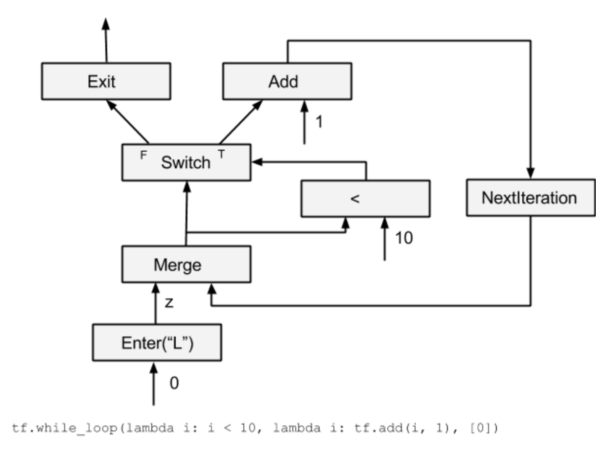
可以看到NextIteration导入导出的是循环变量i，merge node可以用来初始化变量, 类似于 i= i || 0的效果, switch控制是否结束循环，Exit跳出循环。
在文献1中还讲述了dead传播，分布式的whileloop，以及while loop对应的gradient op.讲的比较深，后面再补上吧。
参考文献：
Executor Frame
引言
在Executor 执行Graph的时候，会首先分析Graph, 创建关于Graph中frame的静态信息，比如ControlFlowInfo和FrameInfo，对于graph中的每个node, 可以根据ControlFlowInfo去得到它对应的frame_name, 然后根据frame_name可以得到FrameInfo的一些信息。
而FrameState和IterationState这两个是动态的状态，由Executor在执行Graph时候动态创建的。FrameState对应着整个while loop，而IterationState则对应着while loop中的某个迭代。 FrameState中包了total_input(frame中所有node input个数等信息），IterationState中有个EntryVec用于保存某次迭代时候，node之间输入输出的Entry。
本文主要分析了Executor中ControlFlowInfo， FrameInfo, FrameState, IterationState，这几个和Executor Frame相关的struct， 以及它们之间的关系。
ExecutorImpl::ControlFlowInfo
ControlFlowInfo里面unique_frame_names保存了computation graph中所有frame的名字，frame_names则是个倒查表，索引对应于node->id, 可以根据frame_names[node->id()]找到node对应的frame_name.
struct ControlFlowInfo {
gtl::FlatSet<string> unique_frame_names;
std::vector<string> frame_names;
};
ControlFlowInfo的创建
BuildControlFlowInfo 会遍历整个graph, 然后处理Enter/Exit node, 填充好ControlFlowInfo中的字段,
- 如果遇到Enter node, 则进入子Frame, Enter node的每个输出node对应的frame_name都是EnterNode对应的 "frame_node"属性
//Enter node包含了frame_name 属性，
GetNodeAttr(curr_node->attrs(), "frame_name", &frame_name));
- 如果是Exit node, 则退出子Frame, Exit node的每个输出node对应的frame_name都是Exit node parent node的 frame_name
//other code
else if (IsExit(curr_node)) {
parent = parent_nodes[curr_id];
frame_name = cf_info->frame_names[parent->id()];
parent = parent_nodes[parent->id()];
}
- 如果是其他类型的node, 则node的每个输出node frame和当前node一致
parent = parent_nodes[curr_id];
frame_name = cf_info->frame_names[curr_id];
controlflow info被用到的地方
在executor中首先会根据node->id找到frame_name, 然后根据frame_name找到对应的FrameInfo
const string& frame_name = cf_info.frame_names[id];
FrameInfo* frame_info = EnsureFrameInfo(frame_name);
ExecutorImpl::FrameInfo
FrameInfo包含的主要字段如下:
// The total number of inputs to a frame.
int input_count;
int total_inputs;
PendingCounts::Layout pending_counts_layout;
PendingCounts* pending_counts; // Owned
input_count
input_count 代表graph中Enter到该frame的Enter Node个数, 统计个数的代码如下：
//ExecutorImpl::Initialize
for (const Node* n : graph_->nodes()) {
//other code..
if (IsEnter(n)) {
string enter_name;
TF_RETURN_IF_ERROR(GetNodeAttr(n->attrs(), "frame_name", &enter_name));
EnsureFrameInfo(enter_name)->input_count++;
}
}
total_inputs
total_inputs会在ExecutorState::IteratorState中用到，它的值为frame中所有node的inputs个数的总和。
// The total number of input tensors of a frame.
// == sum(nodes[*].num_inputs()) where nodes are the nodes in the frame.
int total_inputs;
total_inputs在后面的影响如下：
FrameInfo.total_inputs ==> FrameState.total_input_tensors ==> IterationsState.input_tensors(new Entry[total_input_tensors])
PendingCounts
- PendingCounts相关，pending_counts_layout在后面会用来创建Node的PendingCount, pending count会用来跟踪Node的状态（比如是否所有的input都已ready, Node是否已经执行过了，Node是否在Dead path)，
struct FrameInfo由EnsureFrameInfo这个函数lazy创建，并在Intialize填充好它的字段。
FrameInfo* EnsureFrameInfo(const string& fname) {
auto slot = &frame_info_[fname];
if (*slot == nullptr) {
*slot = new FrameInfo;
}
return *slot;
}
FrameInfo将在ExecutorImpl的析构函数中被删掉。
~ExecutorImpl() override {
//other code
for (auto fiter : frame_info_) {
delete fiter.second;
}
ExecutorState::FrameState
前面两个ControlFlowInfo/FrameInfo都是静态的信息(所以叫XXXInfo)，而FrameState和IterationState都是动态信息，会在Graph执行的时候动态创建。
创建FrameState: FindOrCreateChildFrame
在FindOrCreateChildFrame中，会调用InitializeFrameInfo从FrameInfo中抽取有用的字段
void InitializeFrameInfo(const string& enter_name) {
auto it_frame_info = executor->frame_info_.find(enter_name);
DCHECK(it_frame_info != executor->frame_info_.end());
ExecutorImpl::FrameInfo* finfo = it_frame_info->second;
pending_counts = finfo->pending_counts;
total_input_tensors = finfo->total_inputs;
num_pending_inputs = finfo->input_count;
nodes = finfo->nodes;
}
FindOrCreateChildFrame被调用的stack
Process -> PropagationOutputs -> FindOrCreateChildFrame
删除FrameState: DeleteFrame
1.在PropgateOutputs中，如果is_frame_done，就会调用DeleteFrame, DeleteFrame会向parent frame传播dead_exits（TODO: 这部分描述细化）
IterationState删除的地方
- CleanupFrameIterations
- frame->CleanupIterations
ExecutorState::IterationState
Entry* input_tensors;
// The number of outstanding ops for each iteration.
size_t outstanding_ops;
int outstanding_frame_count;
PendingCounts counts_;
FrameState和IterationState创建地方:
-
在ExecutorState的构造函数中会创建一个FrameState作为rootframe, 同时也会创建该frameState的第一个IterationState。
-
在执行完一个Node之后，PropagateOutputs在遇到Enter节点的时候，会调用FindOrCreateChildFrame来创建一个新的FrameState,以及该FrameState的第一个IterationState
-
在PropgateOutputs的时候，遇到NextIteration Node 会去调用FrameState::IncreatementIteration新增一个IterationState
-
所有的framesate都放在了outstanding_frames 这个map中，新建的framestate会插到这个map中，删除的时候会从这个map中去掉。
Tensorflow Direct Session (Draft)
摘要
本文主要分析了tensorflow 中DirectSession部分的代码。如果把executor 执行graph当成一个函数的话，那么Tensorflow中Session主要功能是把用户传过来的一些参数Feeds到compute graph中，然后运行到graph target node，最后在graph computation完成之后，取出用户指定名字的一些tensor。
DirectSession 则主要工作以下几方面：
- Rewrite Graph： 将FeedInputs和FetchOutputs节点加到graph中，然后去掉graph中运行不到的节点，最后采用并查集的方式，给graph中每个node分配一个device。
- Graph partition：根据每个node所device，将node划分成不同的subgraph, subgraph之间添加send和recv节点做不同device之间的通信。
- CeateExecutors：每个device的subgraph会创建一个Executor来执行graph computation。
- Fetch outputs：对于DirectSession来说，FeedInputs和FetchOutputs 所添加的节点是
_Arg和_RetVal，这两个节点会通过directSession的callframe来读写input，output。
RewriteGraph
RewriteGraph这块的callstack如下图所示，主要主要涉及到 GraphExecutionState, SubGraph, Placer这三块。
GraphExecutionState据文档所说(graph_execution_state.h)，其主要作用是按照BuildGraphOptions选项将Graph转换成可执行的Client Graph。
GraphExecutionState is responsible for generating an executable ClientGraph from the original GraphDef that specifies the complete graph and from BuildGraphOptions which specifies input/output nodes.
ClientGraph与GraphDef的区别是： ClientGraph中每个node都被Assign了某个Device，这部分由Placer完成；另外添加了input/output nodes, 去掉了执行不到的node, 这部分由subgraph完成。
An executable Graph differs from a GraphDef by being Placed, meaning that each Node is assigned to a single Device in the available set.

Call frame: feed and fetch
DirectSession中采用了call frame的方式读写compution graph中的inputs/outputs

DirectSession::Run的时候，首先会创建一个FunctionCallFrame, 把要feed的tensor填充到FunctionCallFrame::args_。
// In DirectSession::Run
FunctionCallFrame call_frame(executors_and_keys->input_types,
executors_and_keys->output_types);
gtl::InlinedVector<Tensor, 4> feed_args(inputs.size());
for (const auto& it : inputs) {
if (it.second.dtype() == DT_RESOURCE) {
Tensor tensor_from_handle;
TF_RETURN_IF_ERROR(
ResourceHandleToInputTensor(it.second, &tensor_from_handle));
feed_args[executors_and_keys->input_name_to_index[it.first]] =
tensor_from_handle;
} else {
feed_args[executors_and_keys->input_name_to_index[it.first]] = it.second;
}
}
const Status s = call_frame.SetArgs(feed_args);
在创建Executor的时候，通过Executor::Args.call_frame把call_frame放到OpkernalContext中。
//## DirectSessioin::Runinternal
Executor::Args args;
args.step_id = step_id;
args.call_frame = call_frame;
//other code...
//每个device subgraph对应一个item, item.executor为这个subgraph的exeuctor.
item.executor->RunAsync(args, barrier->Get());
//## ExecutorState::Process
OpKernelContext::Params params;
params.step_id = step_id_;
params.call_frame = call_frame_;
//other code ...
// Synchronous computes.
OpKernelContext ctx(¶ms, item.num_outputs);
nodestats::SetOpStart(stats);
device->Compute(CHECK_NOTNULL(op_kernel), &ctx);
当所有的subgraph Executor执行完毕后，通过FunctionCallFrame::ConsumeRetVals的方式把输出的tensor取出来。
// DirectSession::Run
if (outputs) {
std::vector<Tensor> sorted_outputs;
const Status s = call_frame.ConsumeRetvals(&sorted_outputs);
if (errors::IsInternal(s)) {
//other code
Device placer
Placer 在初始的时候，用户会指定某些节点的device, 比如有的节点是gpu:0, 有的cpu:0, 有的node是gpu:1, 然后将有相同class_属性@loc:xxx的node节点放到一个集合里面，随后根据以下约束, 采用并查集的方式，对node集合进行进一步的划分:
- 用户指定了device，就将node放到用户指定的device上
- Generateo node 和output node放到同一个device上
- Meta node（比如cast操作) 和input node放到同一个device上
- Reftype 的Input, input和output节点尽量放到同一个device上
- 采用并查集的方式将node place给device
- 对于stateful的node, 不改变它的device assign。
stateful node 在placed之后，就不能移到别的device上了, 对于这种node，GraphExecutionState的做法是在placer run之前将stateful node的device assign保存以下，在placer run 之后再恢复回去。
Map of placed stateful nodes, i.e. nodes for which is_stateful() is true, such as "params" and "queue" nodes. Once placed these nodes can not be moved to a different device. Maps node names to device names.
可以通过打开log_device_placement的方式让placer在stderr中把node的device place情况打出来:
config=tf.ConfigProto(log_device_placement=True)
sess = tf.Session(config=config)
Graph partition
Graph partition根据上面Placemnet的结果，将graph partition成不同的子图，子图之间添加send 和recv节点，send和recv节点会用rendzvous来传送tensor。有时候除了send和recv node还需要添加一些control flow node。

（这个地方需要看下tf implement那个文档，了解下具体情况）
Executor Cache
提交给DirectSessoin在经过Graph Partition之后，会划分成不同的子图，比如下图将一个大的graph划分成了3个subgraph分别放置在了在CPU, GPU1, GPU2上，device之间通过rendezvous来通信，每个subgraph都会创建一个executor去执行。

在模型的训练通常会多次迭代run, 因此要加一层cache避免多次做graph的parition，多次创建executor。
with tf.Session(config=config) as sess:
sess.run([merge, gd_step], feed_dict={x: batch_xs, y_label: batch_ys})
cache的key为input, output，target tensor的names 连起来的。还有一个key是吧input, output, target的names分别sort之后再连起来。
DirectSession::Run中cache的key很有意思，有两个key, 首先去是未排序的，另外一个是排序的。未排序的为了快速查找，而排序的key是为了避免由于input_names中names顺序不一样导致cache miss。
// Fast lookup path, no sorting.
// Fast查询的key, 没排序
const string key = strings::StrCat(
str_util::Join(inputs, ","), "->", str_util::Join(outputs, ","), "/",
str_util::Join(target_nodes, ","), "/", run_state_args->is_partial_run,
"/", debug_tensor_watches_summary);
// 将names分别排序然后concat起来.
std::vector<string> inputs_sorted(inputs.begin(), inputs.end());
std::sort(inputs_sorted.begin(), inputs_sorted.end());
std::vector<string> outputs_sorted(outputs.begin(), outputs.end());
std::sort(outputs_sorted.begin(), outputs_sorted.end());
std::vector<string> tn_sorted(target_nodes.begin(), target_nodes.end());
std::sort(tn_sorted.begin(), tn_sorted.end());
const string sorted_key = strings::StrCat(
str_util::Join(inputs_sorted, ","), "->",
str_util::Join(outputs_sorted, ","), "/", str_util::Join(tn_sorted, ","),
"/", run_state_args->is_partial_run, "/", debug_tensor_watches_summary);
// Set the handle, if its needed to log memory or for partial run.
Tensorflow Rendezvous
摘要
Rendezvous负责在Send和Recv node之间传递tensor, tensor的传递可能会跨设备(cross device), 也可能跨主机(GRPC，MPI，Rdam）等。如何提供统一简洁的接口，并同时实现不同场景下tensor高效传递是关键，Rendezvous功能上主要涉及以下两点：
- Send操作不会被block，而Recv操作可能会block，一直等到有tensor，才会返回或者调用异步的callback。
- 由于send 和recv node可能在同一个worker的不同device上，也有可能在不同worker的不同device上，所以Rendezvous又分为LocalRendezvous, IntraProcessRendezvous, RemoteRendezvous 以对应不同的场景。
Rendezvous
继承关系
Rendezvous中各个层级实现功能如下：
- LocalRendezvor实现了核心Send和Recv操作，每个key对应了一个queue, send根据key放到相应的队列里，recv根据key去对应的队列取。
- IntraProcessRendezvou使用CopyTensor::ViaDMA处理了不同device间的copy问题，其send, recv还是会交由LocalRendezvous去做。
- RpcProcessRendezvous实现了将woker的本地tensor(tensor如果在GPU上的话，需要先从GPu上copy到内存中）通过grpc buffer传递给调用者。

LocalRendezvous: Send and Recv
LocalRendezvous 实现了send和recv最基本的操作，按照send请求和recv请求顺序做了不同的处理：
-
如果recv先到，就新创建一个item，把recv请求放到queue里面，等待send tensor抵达的时候，调用item.waiter回调函数通知recv， tensor已经到了。
-
如果send先到，就新创建一个item, 把item放到queue里面，等recv请求到达的时候，从队列中取出最开头的一个，调用recv.waiter回调函数，通知tensor已经到了。这里send请求就是简单的把tensor放入key对应的队列中，并不会block住。

IntraProcessRendezvous
IntraProcessRendezvous 用于处理进程内的通信, 他的send和recv是委托给LocalRendezvous, 在Local的RecvAsync的回调函数中，它会调用SameWokerRecvDone, 使用CopyTensor::ViaDMA处理跨device通信问题。
void IntraProcessRendezvous::SameWorkerRecvDone(...)
//other code ...
//case 1：都在内存中，直接用使用tensor的operator=
if (src_host && dst_host) {
*out = in;
done(Status::OK());
return;
}
//other code ...
//case 2: 使用ViaDMA处理不同device之间的tensor通信
CopyTensor::ViaDMA(parsed.edge_name, send_args.device_context,
CopyTensor::ViaDMA
CopyTensor::ViaDMA处理了device之间的copy tensor。 Tensor的copy有3个方向：
- HOST_TO_DEVICE
- DEVICE_TO_HOST
- DEVICE_TO_DEVICE
从下图可以看出这些操作最终调用的还是stream_executor的ThenMemcpy所封装的函数。
VarientDeviceCopy这个处理数据是DT_VARIENT结构的Tensor的，最后调用的是TensorListeDeviceCopy函数，这个函数所对应的deviceCopyFn就是stream_executor所封装的Memcpy, 这里的VarientDeviceCopy和copyfn都采用了static registor的模式（这种模式在tensorflow中用的非常多）。
static Status TensorListDeviceCopy(
const TensorList& from, TensorList* to,
const UnaryVariantOpRegistry::AsyncTensorDeviceCopyFn& copy) {
to->element_shape = from.element_shape;
to->element_dtype = from.element_dtype;
to->tensors.reserve(from.tensors.size());
for (const Tensor& t : from.tensors) {
Tensor tmp(t.dtype());
TF_RETURN_IF_ERROR(copy(t, &tmp));
to->tensors.push_back(tmp);
}
return Status::OK();
}
BaseRemoteRendezvous
BaseRemoteRendezvous 的RecvAsync中会检查是否是同一个recv 和sender是否在同一个worker上。
// 检查是否是同一个worker
bool BaseRemoteRendezvous::IsSameWorker(DeviceNameUtils::ParsedName src,
DeviceNameUtils::ParsedName dst) {
return DeviceNameUtils::IsSameAddressSpace(src, dst);
}
如果是同一个worker的话就采用类似IntraProcessRendezvous方式来处理，否则需要通过远程调RecvFromRemoteAsync。
void BaseRemoteRendezvous::RecvAsync(const ParsedKey& parsed,
//other code ..
//case1: 是同一个worker, 说明在本地上
if (IsSameWorker(parsed.src, parsed.dst)) {
local_->RecvAsync(
parsed, recv_args,
[this, parsed, done](
//other code ...
//in recv done callback
SameWorkerRecvDone(parsed, send_args, recv_args, in, out,
} else {
//case2: 不是同一个worker需要用RPC 去取。
RecvFromRemoteAsync(parsed, recv_args, std::move(done));
}
RemoteRendezvous中加了个一个Initialize的接口, 这样绑定了一个WorkerSession, 然后在SameWorkerRecvDone的时候，通过这个workerSession去找到对应的device。
Status BaseRemoteRendezvous::Initialize(WorkerSession* session) {
//other codes...
}
在SameWorkerRecvDone中通过workerSession找到src_device和dst_device
void BaseRemoteRendezvous::SameWorkerRecvDone(
//other code ...
Status s = sess->device_mgr->LookupDevice(parsed.src_device, &src_device);
//other code ...
s = sess->device_mgr->LookupDevice(parsed.dst_device, &dst_device);
//other code ..
//通过ViaDMA实现各个device之间的copy
CopyTensor::ViaDMA(parsed.edge_name, send_args.device_context,
RpcRemoteRendezvous
RpcRemoteRendezvous在BaseRemoteRendezvous的基础上，实现了RecvFromeRemoteAsync的功能, 首先找到send所在的src_worker, 然后通过rpc调用去取的远程src_worker上的tensor。
void RpcRemoteRendezvous::RecvFromRemoteAsync(
//other code..
RpcRecvTensorCall* call = get_call_freelist()->New();
//1. 找到远程的src_worker
WorkerSession* sess = session();
WorkerInterface* rwi = sess->worker_cache->CreateWorker(call->src_worker_);
//2. 找到要copy到的device
s = sess->device_mgr->LookupDevice(parsed.dst_device, &dst_device);
//other code ..
//3. Grpc call
call->Init(rwi, step_id_, parsed.FullKey(), recv_args.alloc_attrs, dst_device,
recv_args, std::move(done));
call->Start([this, call]() {
//other code ..
在RpcRecvTensorCall中会call worker的RecvTensorAsync。
void StartRTCall(std::function<void()> recv_done) {
//other code
wi_->RecvTensorAsync(&opts_, &req_, &resp_, std::move(cb));
}
中间经过worker service，最终会去call GrpcWorker::GrpcRecvTensorAsync.
void GrpcWorker::GrpcRecvTensorAsync(CallOptions* opts,
// Case 1: 如果目标tensor在GPU上的话，需要先cp到host上
if (src_dev->tensorflow_gpu_device_info() && (!on_host)) {
StatusCallback copy_ready = [response, done, copy, is_dead](const Status& s) {
//other code ..
// copy到response buffer中
grpc::EncodeTensorToByteBuffer(is_dead, *copy, response);
done(s);
}
GPUUtil::CopyGPUTensorToCPU(src_dev, send_dev_context, &val, copy, copy_ready);
} else {
//Case 2: 在Host上直接cp到response的buffer中。
grpc::EncodeTensorToByteBuffer(is_dead, val, response);
done(Status::OK());
}
}
RendezvousMgr
RendezvousMgr的作用是维护一个从step_id到Rendezvous的映射。
RendezvousMgr keeps track of a set of local rendezvous instances. All tensors sent by this worker are buffered in a RendezvousMgr until the tensor is received. Each global unique "step_id" corresponds to one local rendezvous instance managed by a RendezvousMgr.
RendezvousMgr的继承关系如下

映射的table在BaseRendezvousMgr中。
//BaseRendezvousMgr的数据成员
typedef gtl::FlatMap<int64, BaseRemoteRendezvous*> Table;
mutex mu_;
Table table_ GUARDED_BY(mu_);
它的派生类比如RpcRendezvousMgr通过override它的Create函数来创建自己版本的rendezvous。
//BaseRendezvousMgr 的CreateRendezvous的纯虚函数
protected:
virtual BaseRemoteRendezvous* Create(int64 step_id,
const WorkerEnv* worker_env) = 0;
Tensorflow Device
摘要
Device包含了自己的memory的计算单元，它是对GPU， TPU， CPU等计算device统一抽象，主要的接口有以下几个：
- GetAllocator: 这个返回一个allocator，负责在device上分配memory
- Compute，ComputeAsync: 负责执行OpKernel中的运算。
- ResourceMgr: 负责管理分配在Device上的Variable
- tensorflow device thread pool: 调度执行device compute的线程池。
其中1，2最重要，分别负责allocate memory和执行opkernel的compute。
Device
Device的继承关系

Device thread pool
Gpu对应的线程池创建有三种模式:global, gpu_private, gpu_shared，由环境变量TF_GPU_THREAD_MODE控制, 默认是global的。
- global: GPU uses threads shared with CPU in the main compute, thread-pool. This is currently the default.
- gpu_private: GPU uses threads dedicated to this device.
- gpu_shared: All GPUs share a dedicated thread pool.
在DirectSession::Ruinternal调用executor的时候，会把device_thread_pool 传给Executor
// DirectSession::RunInternal
thread::ThreadPool* device_thread_pool =
item.device->tensorflow_device_thread_pool();
if (!device_thread_pool) {
args.runner = default_runner;
} else {
args.runner = [this, device_thread_pool](Executor::Args::Closure c) {
SchedClosure(device_thread_pool, std::move(c));
};
}
item.executor->RunAsync(args, barrier->Get());
}
在分布式tensorflow中，GraphMgr::StartParallelExecutors, 通过类似的方法吧device_thread_pool 传给executor。
//GraphMgr::StartParallelExecutors
thread::ThreadPool* device_thread_pool =
item.device->tensorflow_device_thread_pool();
if (!device_thread_pool) {
args.runner = default_runner;
} else {
args.runner = [this, device_thread_pool](Executor::Args::Closure c) {
SchedClosure(device_thread_pool, std::move(c));
};
}
item.executor->RunAsync(args, barrier->Get());
}
在Executor::schedulReady中，会使用这个runner去执行node的process。
// Executor::ScheduleReady
//Case 1
//other code and
// Schedule to run all the ready ops in thread pool.
runner_([=]() { Process(tagged_node, scheduled_usec); });
//other code and if...
// Dispatch to another thread since there is plenty of work to
// do for this thread.
runner_(std::bind(&ExecutorState::Process, this, *curr_expensive_node, scheduled_usec));
//other code under some if ...
// There are inline nodes to run already. We dispatch this expensive
// node to other thread.
runner_(std::bind(&ExecutorState::Process, this, *curr_expensive_node, scheduled_usec));
Device Context
GpuDeviceContext有点复杂，有不少的代码逻辑是用来处理一个GPU 启动了多个streams的，graph中的每个node会分配一个stream_id。
device context map
每个node对应OpKernel的device_context会使用这个stream_i来CopyCpuTensorToDevice， CopyDeviceTensorToCpu, 在Compute的时候，opkernel的计算也会这个stream_id对应的stream上执行。
不过现在好玩的是现在BaseGPuDevice的构造函数中max_stream传的值为1，使用多个stream的特性没开，大家用的是同一个stream，在stackflow上搜到了一个为啥这么做的回答：
Yeah, you are looking at code that is a bit stale; we've tried experimenting with multiple compute streams and have found that, so far, it hasn't helped that much in important use cases. We technically support multiple streams, but we never turn it on.
At some point in the future, we want to start playing around with using multiple compute streams again though, so it's nice to have the code there.
Devices can use as many DeviceContexts as they want; on GPU we only use a few and we use FillContextMap to do the mapping, but it really depends on the hardware how they should be used
目前这个特性是实验性的，在重要的use cases中没起到重要的作用，所以这个特性没开, 后续可能会开，所以这部分代码保留了。
除此之外，还在stream_id的基础上做了一个EigenDevice，估计是给Eigen计算提供的吧。无论怎样，DeviceContext给每个Opkernel包了stream_id，然后在执行的时候，会找到这个stream_id对应的cuda_stream。
Eigen::GpuDevice
给Eigen::GpuDevice封装了一个EigenCudaStreamDevice, 用来给Eigen::GpuDevice allocate和deallocate memroy, 具体的怎么用的估计要去挖Eigen的代码了, 还有scratch buffer的作用也不是很明白。
class EigenCudaStreamDevice : public ::Eigen::StreamInterface
// allocate
void* allocate(size_t num_bytes) const override{
//使用device的allocate进行内存分配
}
//deallocate
void deallocate(void* buffer) const override {
//异步的AsyncFreeData，最终调用的是Device的allocate去free内存
}
Compute
Gpu的Compute部分主要有BaseGpuDevice::ComputeHelper来处理，主要是如果gpu使用了多个stream特性的话，需要等待input的stream都完成之后，再执行op对应的stream。
void BaseGPUDevice::ComputeHelper(OpKernel* op_kernel,
//如果是多个stream,需要等待所有input的stream执行完毕。
if (num_streams > 1) {
// If this op's device context is different from the other contexts,
// we must wait on the stream.
for (int i = 0; i < context->num_inputs(); ++i) {
const GPUDeviceContext* idc =
static_cast<GPUDeviceContext*>(context->input_device_context(i));
//other code: 主要是log
if (idc->stream() != stream) stream->ThenWaitFor(idc->stream());
}
gpu::cuda::ScopedActivateExecutorContext scoped_activation{stream->parent()};
op_kernel->Compute(context);
//other code: 主要是cuda执行状态检查
Device Factory
DeviceFactory的继承关系如下：

DeviceFactory包含了一些静态函数： AddDevices, NewDevices, Register, GetFactory, 和一个virutal CreateDevices。 NewDevices用于自动化测试，对外主要接口是AddDevices, Register负责device factory的注册, 这两者的调用关系如下：

DeviceFactory也采用了static registor的方法，自动注册了DeviceFactory,
//device_type, DeviceFactoryClass, Prority
REGISTER_LOCAL_DEVICE_FACTORY("CPU", ThreadPoolDeviceFactory, 60);
REGISTER_LOCAL_DEVICE_FACTORY("CPU", GPUCompatibleCPUDeviceFactory, 70);
REGISTER_LOCAL_DEVICE_FACTORY("GPU", GPUDeviceFactory, 210);
这个宏展开后是声明了一个Registrar的 static var, 在它的构造函数中会去调用DeviceFactory的Register注册Factory， 而Register函数最后会把Factory 加入到static device_factories中。
template <class Factory>
class Registrar {
public:
explicit Registrar(const string& device_type, int priority = 50) {
DeviceFactory::Register(device_type, new Factory(), priority);
}
}
在创建一个DirectSesion, 或者GrpServer::Init(每个worker都会起一个GrpcServer)的时候，会调用AddDevices获取worker上的devices.
tensorflow model optimize
将keras模型导出为tf frozen graph
frozen keras model
将keras的h5文件转换为tensorflow的pb文件, 这里面使用了 convert_variables_to_constants将模型中的变量都convert成了常量（方便后续采用quantilize或者tensorrt， 对模型推断部分做进一步的优化）
import keras
from keras.layers.core import K
import tensorflow as tf
def frozen_keras_model(keras_model_path, output_node_names, export_path):
output_node_namess = output_nodes.split(",")
model = keras.models.load_model(keras_model_path)
print("the model output nodes is {}".format(model.outputs))
with K.get_session() as sess:
output_graph_def = tf.graph_util.convert_variables_to_constants(
sess,
tf.get_default_graph().as_graph_def(),
output_nodes_names,
variable_names_blacklist=['global_step']
)
with tf.gfile.Gfile(export_path, "wb") as f:
f.write(output_graph_def.SerializeToString())
将global_step放到variable_names_blacklist是因为2中的bug.
variable_names_blacklist=['global_step']
可以通过print model.outputs来查看keras的输出节点，可以通过tensorboard来看keras模型，然后找到最后的输出节点。一般keras模型的输出节点有好多个（比如训练用的之类的)，预测输出节点为其中的一个。
使用tensorboard展示keras model对应的graph
首先使用tf summary创建相应的log
def keras_model_graph(keras_model_path, log_dir):
model = keras.model.load_model(keras_model_path)
with K.get_session() as sess:
train_writer = tf.summary.FileWriter(log_dir)
train_writer.add_graph(sess.graph)
启动tensorboard
$tensorboard --log_dir logdir
参考文献
使用dataset iterator 优化keras model预测的吞吐量
predict_on_generator
现在做的项目，需要在短时间内一次性预测一组大量的图片，刚开始的时候，采用了keras的predict_on_generator和Sequnce，速度比一个个feed dict的形式快了不少, 但是吞吐量还是没达到要求，感觉还有优化的地方。
class BatchSequnce(Sequence):
def __len__(self):
# 返回batch总个数
return self.batch_count
def __getitem__(self, idx):
#返回一个batch的数据
#这里可能会做一些数据预处理的工作，比如将图片从文件中加载到内存中然后做特征预处理
pass
model = keras.load_model(model_path)
generator = BatchSequnce(....)
ret = model.predict_generator(
generator=generator,
steps=None,
workers=10,
verbose=True,
)
Dataset
经分析, GPU每次都要等 BatchSequnce的__getitem___处理完之后，才能fetch到数据，如果__getitem__做了比较耗时间的操作的话，会让GPU一直在等待, 而且GPU在处理每个Batch数据的时候，都要等一次, tensorflow的Prefech感觉可以缓解这个问题，后来尝试了下，所消耗的时间优化到了以前的70%左右。
使用iterator 改造keras模型
-
首先采用将keras模型导出为tf frozen graph中的方式，将Keras的h5模型转换成tensorflow的pb文件。
-
使用
tf.data.Iterator.from_structure(可重新初始化迭代器可以通过多个不同的 Dataset 对象进行初始)的形式, 声明iterator的输出dtype和TensorShape, -
调用
tf.import_graph_def导入模型, 导入的时候，使用input_map将placeholde,比如"input"替换成Dataset的itereator next_element
这部分代码如下
def load_model(self, sess, frozen_model_file):
with tf.name_scope("dataset"):
iterator = tf.data.Iterator.from_structure(
tf.float32,
tf.TensorShape([self.batch_size, 450, 450, 3]))
next_element = iterator.get_next()
next_element = tf.convert_to_tensor(next_element, tf.float32)
with tf.gfile.GFile(frozen_model_file, "rb") as f:
graph_def = tf.GraphDef()
graph_def.ParseFromString(f.read())
tf.import_graph_def(
graph_def,
name="",
input_map={"input_1:0": next_element})
output_op_name = "y"
output_op = sess.graph.get_operation_by_name(output_op_name).outputs[0]
return iterator, output_op
设计DataSet
这里面需要注意的时候, 真正的map函数需要采用py_func包一层, 同事指定py_func的输出tensor shape, 这里的num_map_parall一般取cpu的个数.
class DataSetFactory(object):
def make_dataset(self):
def generator():
#返回要处理的文件路径, 或者坐标等
yield [x, y, w, h]
output_types = (tf.float32)
output_shapes = (tf.TensorShape([4]))
ds = tf.data.Dataset.from_generator(
generator,
output_types,
output_shapes=output_shapes)
ds = ds.map(lambda region: self.map_func(region), num_map_parall=80)
ds = ds.prefetch(buffer_size=self.batch_size * 256)
ds = ds.batch(self.batch_size)
ds = ds.prefetch(buffer_size=self.batch_size * 10)
return ds
def map_func(self, region):
def do_map(region):
# 加载图片和预处理
return img_data
# 这里采用了py_func，可以执行任意的Python函数，同时需要后面通过reshape的方式设置
# image_data的shape。
img_data = tf.py_func(do_map, [region], [tf.float64])
img_data = tf.reshape(img_data, [450, 450, 3])
img_data = tf.cast(img_data, tf.float32)
return image_data
prefetch_to_device
tensorflow 后来加了prefetch_to_device, 经测试可以提高5%左右的效率吧,但是和structure iterator初始化的时候有冲突，因此这个地方把它去掉了。
# 由于prefech_to_device必须是dataset的最后一个处理单元，
# structure iterator用这个ds初始化的时候会有问题，
# 因此这个地方将prefetch_to_gpu注释掉了
# gpu_prefetch = tf.contrib.data.prefetch_to_device(
# "/device:GPU:0",
# buffer_size=self.batch_size * 10)
# ds = ds.apply(gpu_prefetch)
使用dataset初始化iterator
def init_iterator(self, dataset):
# 这里的output_op就是load_model时返回的iterator
init_iterator_op = self.iterator.make_initializer(dataset)
self.sess.run(init_iterator_op)
def predict(self):
# 这里的output_op就是load_model时返回的output_op
while True:
outputs = self.sess.run(self.output_op)
统计gpu,cpu利用率脚本
#!/bin/bash
start=$(date +%s)
while [ 1 ]
do
cpu=$(awk -v a="$(awk '/cpu /{print $2+$4,$2+$4+$5}' /proc/stat; sleep 1)" '/cpu /{split(a,b," "); print 100*($2+$4-b[1])/($2+$4+$5-b[2])}' /proc/stat)
seconds=$(expr $(date +%s) - $start)
gpu_util=$(nvidia-smi --query-gpu=utilization.gpu --format=csv,noheader,nounits)
echo "$seconds, $cpu, $gpu_util"
#sleep 1
done
pthread
Pthread primer 笔记
进程和线程
在kernel中process的context
- cpu相关：program counter pointer, stack top pointer, cpu general registers, sates.
- 内存：memory map
- user: uid, gid, euid, egid, cwd.
- 信号: signal dispatch table
- File: file descriptors

thread的context data
- cpu相关：program counter pointer, stack top pointer, cpu general registers, sates.
- 内存相关: stack
线程的stack是分配在process的heap上的
//设置和获取线程的stack address
include <pthread.h>
int pthread_attr_setstack(pthread_attr_t *attr, void* stackaddr, size_t stacksize);
int pthread_attr_getstack(const pthread_attr_t* attr, void** stackaddr, size_t* stacksize);
整个进程只有一份signal dispatch table
所以signal 中断的时候，说不准会中断到那个thread里面，需要加signal mask来处理。
使用thread的好处
context switch: process的上下文切换比thread的context switch 耗时间.memory share: thread之间的通信，共享process的内存，file等资源比process之间的通信，share内存方便.
线程调度和生命周期
线程调度
线程有两种调度方式，一种是完全在user space, 由thread库做调度，优点是省了system call 从而省下了从user space 到kernel space的切换, 比较快，缺点是，有一个线程挂在IO上后，整个process都会被挂起.(可以把block的system call 改成nonblock的，使用asyc io来解决这个问题).
另外一种是kernel 实现的light weight process(lwp), lwp避免了整个线程被挂起的缺点，但是需要从user space 到kernel space的切换, 比完全user space实现的线程慢一点。
现实中这两种的实现的方式可以混合起来， 混合方式如下：
- 多个线程对应一个lwp
- 一个线程对应一个lwp
- 多个线程对应多个lwp
在pthread 中可以这么设置调度的属性:
//pthread中设置调度scope
//PTHREAD_SCOPE_SYSTEM 表示system 全局的， PTHREAD_SCOPE_PROCESS 表示process scope的。
pthread_attr_t attr;
pthread_attr_init(&attr);
pthread_setscope(&atttr, PTHREAD_SCOPE_SYSTEM);
pthread_create(&tid, &attr, foo, NULL);
影响线程调度的一些属性
- scope: PTHREAD_SCOPE_PROCESS, PTHREAD_SCOPE_GLOBAL
- policy: SCHED_RR, SCHED_FIFO, SCHED_OTHER
- priority
- inheritance
线程状态以及状态之间的迁移关系如下图：

四种running中的线程被切出去的状况
- synchronization 线程require lock的失败被挂在lock的sleep queue上。
- preemption 被抢占了，T1在运行的时候，一个更高优先级的线程T2到了runnable的状态, T1会被T2抢占了。
- yielding. 线程T1主动调用sched_yield, 如果有和T1优先权一样的T2线程，就切换到T2线程，如果没有，T1就接着运行。
- time-slicing. T1的时间片用完了，和T1有同样优先权的T2接着运行。
创建和退出线程
//create
int pthread_create(pthread_t* thread, const pthread_attr_t* attr, void*(* start_routine)(void*), void* arg);
//exit
void pthread_exit(status);
线程的返回值，一种是函数执行结束后，直接return的值，另外一种是pthread_exit(status)这个的返回值。
join: 等待线程执行结束
join之后线程会处于阻塞状态直到等待的线程T1执行完毕，join之后t1线程的相关内存会被清理掉，所以说一个子线程只能被join一次.
设置线程的属性为joinable
pthread_t thread_id;
pthread_attr_t attr;
pthread_attr_init(&attr);
pthread_attr_setdetachstate(&attr, PTHREAD_CREATE_JOINABLE);
pthread_create(&thread_id, &attr, work, (void*)arg);
阻塞等待线程的执行结果，获取线程的返回结果
//等待t1线程执行结束, exit_status 是子线程的返回值.
pthread_join(t1, &exit_status)
joinable线程和detehced线程的区别是线程结束的时候，资源(线程对应的标识符pthread_t, 线程返回信息)该怎么释放.
对于joinable线程t1, 只有当其他线程对t1调用了pthread_join之后, 线程t1才会释放所占用的资源, 否则 会进入类似于进程的zombile状态，这些资源不会被会回收掉.
使用信号量 等待线程执行结束
使用信号量等待一堆子线程执行结束, 在主线程里面调用thread_signle_barrier, 然后子线程结束的时候调用SEM_POST(barrier)
void thread_signle_barrier(sem_t* barrier, int count){
while( count > 0) {
SEM_WAIT(barrier);
count--;
}
}
detach
如果想要t1线程执行结束收系统自动回收t1的资源, 而不是通过调用pthread_join回收资源(会阻塞线程), 我们可以将线程设置为deteched, 有三种方式可以设置线程为deteched.
- 创建线程时指定线程的 detach 属性: pthread_attr_setdetachstate(&attr, PTHREAD_CREATE_DETACHED);
- 通过在子线程中调用 pthread_detach(pthread_self());
- 在主线程中调用 pthread_detach(thread_id);(非阻塞, 执行完会立即会返回)
取消线程的执行
在pthread中可以通过pthread_cancel(t1)来取消线程t1的执行, 这个会设置线程t1的cancel state, 由线程t1在自己在cancel point 检查是否退出线程, 在退出线程的时候会执行cleanup stack中的函数(比如释放自己hold的锁). 一般会block的函数调用，比如sem_wait, pthread_cond_wait或者会block的系统调用前后检查check point.
如下代码段：
void cleanup_lock2(void* arg){
pthread_mutex_unlock((pthread_mutex_t*)arg)
}
void thread1_run(){
pthread_mutex_lock(&answer_lock);
pthread_cleanup_push(cleanup_lock2, (void*)&answer_lock);
while(!firest_thread_to_find_answer) {
pthread_cond_wait(&cvn, &answer_lock);
}
pthread_cleanup_pop(0)
}
也可以通过pthread_setcanceltype设置为异步取消PTHREAD_CANCEL_ASYNCHRONOUS，这样会给t1线程发送SIGCANCEL信号，t1线程在信号处理函数中结束自己的执行。
Signal 信号处理
Linux 多线程应用中，每个线程可以通过调用 pthread_sigmask() 设置本线程的信号掩码, pthread_kill像某个线程发送signal.
signal handler 异步的方式处理信号
多线程处理signal时候需要注意事项
- 信号处理函数尽量只执行简单的操作，譬如只是设置一个外部变量，其它复杂的操作留在信号处理函数之外执行；
- errno 是线程安全，即每个线程有自己的 errno，但不是异步信号安全。如果信号处理函数比较复杂，且调用了可能会改变 errno 值的库函数，必须考虑在信号处理函数开始时保存、结束的时候恢复被中断线程的 errno 值；
- 信号处理函数只能调用可以重入的 C 库函数(只能调用async safe 的函数)；譬如不能调用 malloc（），free（）以及标准 I/O 库函数等；
- 信号处理函数如果需要访问全局变量，在定义此全局变量时须将其声明为 volatile，以避免编译器不恰当的优化
sigwait, 同步串行方式
等待信号的到来，以串行的方式从信号队列中取出信号进行处理.
void signal_hanlder_thread() {
sigemptyset(&waitset);
sigaddset(&waitset, SIGRTMIN);
sigaddset(&waitset, SIGUSR1);
while (1) {
//串行的方式处理信号
rc = sigwaitinfo(&waitset, &info);
if (rc != -1) {
sig_handler(info.si_signo);
}
}
Thread local storage
TLS是只在线程自己可见的全局数据, 而不必担心别的线程会改变这个全局数据, 比如要实现每个线程对db的connection单例模式的话，可以把线程的全局connection单例变量存在TLS中。 在使用中有两种方式，一个是pthread_key的方式，另外一个是使用gcc提供的__thread.
Thread Specific Data
pthread_keycreate
pthread_setspecific
pthread_getspecific
__thread
__thread是gcc提内置的attr, 它只能用于修饰POD类型，不能修饰class类型，因为它无法自动调用构造函数和析构函数。 __thread每个线程都有一份独立的实体，线程之间相互不影响.
int g_var; // 全局变量
__thread int t_var; //thread变量
线程的同步
atomic 指令
线程执行的时候，在两个指令之间，随时都可能会被抢占掉, 所以需要一个atomic的指令来避免这种状况.
atomic test and set style: ldstub
ldstub (load and store unsigned byte) 就是一个atomic test and set的指令, 从内存中载入一个unsigned字节，并且把内存中那个字节设置为1.
一个mutex lock的实现
try_agin: ldstub address -> register
compare register, 0
branch_equal got_it
call go_to_sleep
jump try_again
got_it: return
从这儿可以看到，线程从go_to_sleep返回之后，需要去重新获取lock, 如果获取失败，就接着go_to_sleep.
basic primitive
所有线程之前shared的数据需要被用lock保护起来，比如全局数据，传入到另外一个线程的Data struct， 还有static数据。
mutex lock(互斥锁)
线程获取mutex lock失败以后，会被放到mutex对应的sleep队列中。
pthread_mutex_lock
//critical section
pthread_mutex_unlock

另外一种非阻塞的获取锁的方法pthread_mutex_trylock 如果获取锁成功返回0，否则返回EBUSY.
semaphores(信号量)
信号量机制用于协调多个资源的使用(比如一个队列或者缓冲区)，semaphores的值表示可用资源的数量(队列中可用资源的个数)。常用于解决生产者和消费者问题.
// 初始化
int sem_init(sem_t *sem, int pshared, unsigned int val);
// 没有可用的信号量就等待，否则
int sem_wait(sem_t *sem);
// 释放一个信号量，信号量的值加1
int sem_post(sem_t *sem);
信号量处理流程

生产者消费者问题, 假设队列的长度是20:
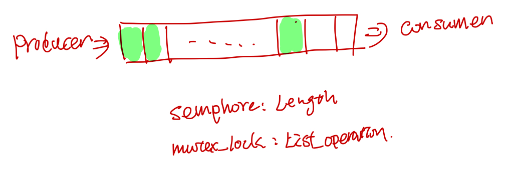#include <semaphore.h>
//shared global vars
sem_t sem_producer;
sem_t sem_consumer;
//list
void producer(){
while(1){
sem_wait(sem_consumer);
pthread_mutex_lock(list_lock);
add(list);
pthread_mutex_unlock(list_lock);
sem_post(sem_producer);
}
}
void consumer(){
while(1) {
sem_wait(sem_producer);
pthread_mutex_lock(list_lock);
consume(list);
pthread_mutex_unlock(list_lock);
sem_post(sem_consumer);
}
}
void main(){
sem_init(&sem_producer, 0);
sem_init(&sem_consumer, 20);
pthread_t producer_tid;
pthread_t consumer_tid;
pthread_create(&producer_tid, nullptr, producer, nullptr);
pthread_create(&consumer_tid, nullptr, consumer, nullptr);
}
condition var (条件变量)
condition var 的流程, condition var 访问需要用个mutex lock保护起来, condition判断失败之后，会unlock 保护condition var 的lock, 然后进入sleep, 之后被唤醒的时候，会再次去获取condition var的lock。

<code>
// 初始化
pthread_cond_t cond = PTHREAD_COND_INITIALIZER;
// 动态初始化
int pthread_cond_init(pthread_cond_t* restrict cond, const pthread_condattr_t* restrict attr);
//销毁
int pthread_cond_destroy(pthread_cond_t* cond);
//等待
int pthread_cond_wait( pthread_cond_t* restrict cond, pthread_mutex_t* restrict mutex );
int pthread_cond_timedwait( pthread_cond_t* restrict cond, pthread_mutex_t* restrict mutex, const struct timespec* restrict abstime );
// 通知
// singal 函数一次只能唤醒一个线程, 而 broadcast 会唤醒所有在当前条件变量下等待的线程.
int pthread_cond_broadcast(pthread_cond_t* cond);
int pthread_cond_signal(pthread_cond_t* cond);
wait for condition
// safely examine the condition, prevent other threads from
// altering it
pthread_mutex_lock (&lock);
while ( SOME-CONDITION is false)
pthread_cond_wait (&cond, &lock);
// Do whatever you need to do when condition becomes true
do_stuff();
pthread_mutex_unlock (&lock);
signal condition
// ensure we have exclusive access to whathever comprises the condition
pthread_mutex_lock (&lock);
ALTER-CONDITION
// Wakeup at least one of the threads that are waiting on the condition (if any)
pthread_cond_signal (&cond);
// allow others to proceed
pthread_mutex_unlock (&lock)
read write lock (读写锁)
在某个时间内，多个线程可以同时获得读锁, 如果已经有线程获得了读锁，那么尝试获取写锁的将被block, 如果已经有线程获取了读锁，那么其他线程的尝试获取读锁或者写锁将会被block.

pthread_rwlock_t rwlock;
int pthread_rwlock_init(pthread_rwlock_t* restrict rwlock, const pthread_rwlockattr_t * restrict attr);
int pthread_rwlock_destroy(pthread_rwlock_t* rwlock);
// 获取读锁
int pthread_rwlock_rdlock(pthread_rwlock_t* rwlock);
// 获取写锁
int pthread_rwlock_wrlock(pthread_rwlock_t* rwlock);
// 释放锁
int pthread_rwlock_unlock(pthread_rwlock_t* rwlock);
Spin lock (自旋锁)
多次trylock, 如果失败了再block, 它的出发点是trylock这个指令的时间很短（比如2us)然后mutex block一次可能需要42us,所以它先尝试几次, 如果在这几us内，lock被释放了，那么能够成功的获取锁了。
spin_lock(mutex_t* m) {
for(int i = 0; i < SPIN_COUNT; i++) {
if (pthread_mutex_trylock(m) != EBUSY) {
return;
}
}
pthread_mutex_lock(m);
return;
}
Adaptive Spin lock
在很多kernel里面使用的，kernel先看拥有锁的线程在不在running(如果在跑的话，那么线程可能短时间内会释放这个锁，所以值得spin几次去尝试下), 如果不在running 状态的话，就直接去require lock了,然后线程会被block.
使用spin lock的时候，需要好好的评估下到底值不值得，就是critical section hold住lock的时间会不会很长。。如果一般很短的话，值得用spin lock，否则的话用spin lock反而浪费时间。
Barriers
pthread_barrier_t mybarrier;
//初始化
pthread_barrier_init(&mybarrier, NULL, THREAD_COUNT + 1);
pthread_barrier_destroy(&mybarrier);
pthread_barrier_wait(&mybarrier);
等待最后一个线程达到barrier点。

附录
- linux中的process的virutal memory layout 参见Processes and Memory Management

参考
Glibc的pthread实现代码研读 1: 线程的生命周期
本文主要包含pthread线程在linux上的创建，执行，exit, detach, join, cancel, thread local storage。
pthread_t
struct pthread定义在nptl/descr.h中, 这边抽几组主要的field来说明下(这里为了方便描述，对field在struct的顺序做了重新的编排)。
首先是创建完线程之后，系统给的id和各种flag attribute.
/* Flags. Including those copied from the thread attribute. */
int flags;
pid_t tid;
/* Lock to synchronize access to the descriptor. */
int lock;
然后最显而易见的是, 线程要执行的函数指针，函数参数以及函数执行的结果, 这几个字段会在线程的入口start_thread中用到。对于result字段: pthread_join(t1, &status), 这个会等待线程t1执行结束，然后把结果放到status中。
//保存线程返回结果
void *result;
// 线程执行的函数和参数
void *(*start_routine) (void *);
void *arg;
然后一些field用于处理下面这几种异常情况: 线程如果抛异常了，线程调用pthread_exit提前exit了，线程被其它线程pthread_cancel了。
// 线程cancel的状态
int cancelhandling;
// 线程被cancel的时候，处理cleanup callback和cleanup jmp
struct _pthread_cleanup_buffer* cleanup;
struct pthread_unwind_buf* cleanup_jmp_buf;
/* Machine-specific unwind info. */
struct _Unwind_Exception exc;
标明线程是被join的还是已经deteched字段, 这个字段涉及到线程的pthread struct该什么时候释放。
struct pthread* joinid;
#define IS_DETACHED(pd) ((pd)->joinid == (pd))
stack相关的field, 在ALLOCATE_STACK和回收statck的时候会用到，由于pthread的这个struct也是放在stack上的，因此需要一些参数记录pthread的offset, user_statck表示是否是由用户提供的stack。
/* True if the user provided the stack. */
bool user_stack;
void *stackblock;
size_t stackblock_size;
/* Size of the included guard area. */
size_t guardsize;
/* This is what the user specified and what we will report. */
size_t reported_guardsize;
thread specific data相关的字段
// 用于thread specific data, thread local storage
struct pthread_key_data
{
uintptr_t seq;
void* data;
} specific_1stblock[PTHREAD_KEY_2NDLEVEL_SIZE];
struct pthread_key_data* specific[PTHREAD_KEY_1STLEVEL_SIZE];
最后调度策略和调度参数相关的字段，在线程create的时候，会调用sched_setaffinity， sched_setscheduler让系统设置这些参数。
// 调度策略和调度参数
struct sched_param schedparam;
int schedpolicy;
pthread struct 的alloc和free
nptl/allocatestatck.c 中的allocate_stack和__deallocate_stack负责alloc和free pd struct。如果用的是系统分配的stack话， pthread有个stack list，当alloc的时候，从这个stack list中取出一个，然后在free的时候，把这个stack放回到stack list中。
这就导致了一个问题, pthread_t 并不适合作为线程的标识符，比如下面两个线程的pthread_t的地址是一样的(参考自Linux 多线程服务端编程: 4.3节):
int main() {
pthread_t t1, t2;
pthread_create(&t1, NULL, threadFunc, NULL);
printf("%lx\n", t1);
pthread_join(t1, NULL);
pthread_create(&t2, NULL, threadFunc, NULL);
printf("%lx\n", t2);
pthread_join(t2, NULL);
}
pthread_create
pthread create 首先分配线程的栈，并在这个栈上划出一片内存给pthread struct, 然后调syscall clone(2) 创建一个线程，创建的新的线程会从START_THREAD_DEFF 这个入口开始执行起来，最后线程的执行结果保存在pd->result里面， 用户可以通过pthread_attr_setstack来指定线程stack的内存，也可以直接使用系统的内存。
 分配stack, 使用用户提供的stack或者系统分配一个stack(pd 这个struct也存放在stack里面了)
分配stack, 使用用户提供的stack或者系统分配一个stack(pd 这个struct也存放在stack里面了)
ALLOCATE_STACK(iattr, &pd)
create_thread 调用linux系统接口clone创建线程, 如果线程要指定在某个CPU上跑的话，调用sched_setaffinity设置好cpuset, 最后何止好调度策略和调度参数。
ARCH_CLONE(&start_thread, STACK_VARIABLES_ARGS, clone_flags, pd, &pd->tid, tp, &pd->tid)
INTERNAL_SYSCALL(sched_setaffinity, err, 3, pd->tid, attr->cpusetsize, attr->cpuset)
INTERNAL_SYSCALL(sched_setscheduler, err, 3, pd->tid, pd->schedpolicy, &pd->schedparam)
其中clone 的flags如下：
const int clone_flags = (CLONE_VM | CLONE_FS | CLONE_FILES | CLONE_SYSVSEM
| CLONE_SIGHAND | CLONE_THREAD
| CLONE_SETTLS | CLONE_PARENT_SETTID
| CLONE_CHILD_CLEARTID
| 0);
CLONE_THREAD, 标明是创建一个线程，和创建者同一个group, 同一个parent。
STACK_VARIABLES_ARGS对应着上一步ALLOCATE_STACK分配好的内存地址, 这块内存会作为新的线程的stack来用。
clone中的的start_thread就是线程的entry_point, 这个函数定义在nptl/pthread_create.c里面 START_THREAD_DEFF, 这个函数就是新创建的线程的入口。
start thread
start thread是线程的入口， 在跑用户函数之前，会设置一个jmp point, 之后等线程执行结束的时候(调用pthread_exit, 或者线程被cancel掉的时候)，会longjump 回到这个函数, 接着做线程执行完的清理工作。
如果线程是Deteched， 那么线程的pd结构就会被释放掉(因为pthread返回的status指针是保存在pd->result这个里面的)，否则就要等pthread_join完之后释放掉。
最后线程exit_thread之后，会把pd中的tid设置为0，这样就可以唤醒等待join该线程结束的线程。

- 设置好unwind buffer, do cancel的时候可以跳回来
int not_first_call;
not_first_call = setjmp ((struct __jmp_buf_tag* ) unwind_buf.cancel_jmp_buf);
if (__glibc_likely (! not_first_call))
{
THREAD_SETMEM (pd, cleanup_jmp_buf, &unwind_buf);
setjmp和longjmp是非局部跳转函数, 它可以在在栈上跳过若干调用帧，返回到当前函数调用路径上的某一个函数中, 若直接调用则返回0，若从longjmp调用返回则返回非0值的longjmp中的val值。之后的do_cancel可能会longjmp到这个地方。
- 调用用户提供的函数, 结果存在
pd->result中
#ifdef CALL_THREAD_FCT
THREAD_SETMEM (pd, result, CALL_THREAD_FCT (pd));
#else
THREAD_SETMEM (pd, result, pd->start_routine (pd->arg));
#endif
- 做一些清理工作，清理TLS, 标记stack为可复用状态，如果线程是detached, 则释放pd struct的内存, 否则要在pthread_join里面释放这个pb struct, 如果一个线程既不是deteched，也没有线程在pthread_join等待他，这个pb struct就不会被释放，进入一个类似于zombile的状态。
__call_tls_dtors ();
/* Run the destructor for the thread-local data. */
__nptl_deallocate_tsd ();
/* Clean up any state libc stored in thread-local variables. */
__libc_thread_freeres ();
if (IS_DETACHED (pd))
__free_tcb (pd);
// mark stack resuable
char *sp = CURRENT_STACK_FRAME;
size_t freesize = (sp - (char *) pd->stackblock) & ~pagesize_m1;
assert (freesize < pd->stackblock_size);
if (freesize > PTHREAD_STACK_MIN)
__madvise (pd->stackblock, freesize - PTHREAD_STACK_MIN, MADV_DONTNEED);
// other code
__exit_thread ();
pthread_exit
猜测pthread_exit 的do_cancel的unwind会调用pthread_cleanup_push中注册的cleaup函数，最后会longjmp回到start_thread里面的setjmp那块，继续执行线程结束后的清理工作。
__pthread_exit (void* value)
{
THREAD_SETMEM (THREAD_SELF, result, value);
__do_cancel ();
}
do_cancel定义如下:
__do_cancel (void)
{
struct pthread* self = THREAD_SELF;
THREAD_ATOMIC_BIT_SET (self, cancelhandling, EXITING_BIT);
__pthread_unwind ((__ pthread_unwind_buf_t*)
THREAD_GETMEM (self, cleanup_jmp_buf));
}
pthread_join
pthread_join(t1, &result) 线程会调用lll_wait_tid等到t1执行结束，然后从t1的pd->result获取线程返回的结果, 返回给status，最后释放线程t1对应的pd sturct.
- 检查是否有死锁, 避免等待自己，以及正在被cancel的线程，
if ((pd == self
|| (self->joinid == pd
&& (pd->cancelhandling
& (CANCELING_BITMASK | CANCELED_BITMASK | EXITING_BITMASK
| TERMINATED_BITMASK)) == 0))
&& !CANCEL_ENABLED_AND_CANCELED (self->cancelhandling))
result = EDEADLK;
- 设置
t1->joinid = self;
/* Wait for the thread to finish. If it is already locked something
is wrong. There can only be one waiter. */
else if (__builtin_expect (atomic_compare_and_exchange_bool_acq (&pd->joinid,
self,
NULL), 0))
/* There is already somebody waiting for the thread. */
result = EINVAL;
- 等待t1线程执行结束, 这里的lll_wait_tid 最后会去调用linux提供的futex, 会被挂起来，一直等到t1的tid变为0。
/* Wait for the child. */
lll_wait_tid (pd->tid);
- free t1线程的pd struct
pd->tid = -1;
/* Store the return value if the caller is interested. */
if (thread_return != NULL)
*thread_return = pd->result;
/* Free the TCB. */
__free_tcb (pd);
pthread_detach
标记线程为detached, 把pd的jionid改为自己。
int result = 0;
/* Mark the thread as detached. */
if (atomic_compare_and_exchange_bool_acq (&pd->joinid, pd, NULL))
{
if (IS_DETACHED (pd))
result = EINVAL;
}
else if ((pd->cancelhandling & EXITING_BITMASK) != 0)
__free_tcb (pd);
return result;
pthread_cancel
pthread_cancel 只是把pd->cancelhandling的状态记为CANCLEING_BITMASK|CANCELED_BITMASK。
do{
oldval = pd->cancelhandling;
newval = oldval | CANCELING_BITMASK | CANCELED_BITMASK;
//other code
} while (atomic_compare_and_exchange_bool_acq (&pd->cancelhandling, newval,
oldval);
然后在pthread_testcancel的时候，才真正的调用do_cancel去cancel thread.
//pthread_testcancel --> CANCELLATION_P
if (CANCEL_ENABLED_AND_CANCELED (cancelhandling)) \
{ \
THREAD_SETMEM (self, result, PTHREAD_CANCELED); \
__do_cancel (); \
}
或者一些会check cancel point的调用比如pthread_cond_wait里面，会去检查这个标记，
pthread_cond_wait -->futex_wait_cancelable --> pthread_enable_asynccancel --> __do_cancel
futex_reltimed_wait_cancelable --> pthread_enable_asynccancel --> __do_cancel
sem_wait_common -> futex_abstimed_wait_cancelable --> pthread_enable_asynccancel --> __do_cancel
singal handle
Glibc的pthread实现代码研读 2: 线程同步
第二部分主要讲述pthread中的线程的同步方法包括mutex, sem, condition var, rwlock, barrier的实现，pthread使用了linux的futex来实现这些同步方法。
futex
pthread中的locks通过linux的futex(faster user space locking)实现, lock放在process之间的共享内存中, pthread通过atomic的指令来对这个lock进行dec, inc, load and test 等操作, 如果有竞态冲突的时候获取锁失败的时候，才会去sys call 调用linux底层的do_futex, 底层把线程放到futex对应的wait队列里面, 然后挂起线程等待被唤醒。
由于只有竞态冲突的时候才需要syscall, 其他情况都不需要，因此节省了很多sys call，这样比较快。

Mutex
xchgl 这个是atomic操作吧，失败了回去调用do_futex, flag 是FUTEX_WAIT
phtread_mutex_lock --> LL_MUTEX_LOCK --> ll_lock --> lll_lock_wait|lll_lock_wait_private --> xchgl
Sem
Condition var
Read write lock
Barrier
react
React中state render到html dom的流程分析
Questions
- React的component的lifecycle 在react中是怎么被调到的.
- 分析jsx => element tree => fiber tree => html dom在react中的流程.
- react中的fiber tree的建立和执行, 以及异步的schedule.
研究工具和方法
- chrome debug 打断点
- ag the silver searcher, 源代码全局搜索.
- 猜测它的实现原理，打log, call trace验证, console.log, console.trace;
准备工作
代码下载,编译
$ git clone git@github.com:facebook/react.git
$ cd react
$ yarn install
$ gulp react:extract-errors
$ yarn build
Component lifeCycle callback
准备最简单的组件HelloWorld
import React from "react"
import ReactDom from "react-dom"
class HelloWorld extends React.Component{
constructor(props){
super(props);
this.state = {
message: "hello, world"
}
}
componentWillMount(){
console.log("component will mount");
}
componentWillUpdate(){
console.log("component will update");
}
componentDidUpdate(){
console.log("component did update");
}
componentDidMount(){
console.log("componentDidMount");
}
render(){
return <span className={this.state.message}>
{this.state.message}
</span>;
}
}
ReactDom.render(<HelloWorld/>, document.getElementById("app"));
在componentWillMount, componentDidMount, componentWillUpdate, componentDidUpdate中打个断点
创建html dom的callstack
react中最后一定会去调用document.createElement去创建html的dom节点，所以把document.createElement这个方法覆盖了，加了一层log.
var originCreateElement = document.createElement;
document.createElement = function() {
if (arguments[0] === 'span'){
console.log('create span');
}
return originCreateElement.apply(document, arguments);
}
然后打断点，得到的callstack如下:
call flow 整理
函数间的callflow 整理如下

函数所属模块之间的call flow 整理如下
Fiber
fiber的设计思想
在react-fiber-artchitecture 中作者描述了fiber的设计思想，简单来说，每个fiber就是一个执行单元，可以任意的修改它的优先级，可以pause 它，之后再继续执行（感觉很像进程线程的概念）。
实际中执行一个fiber可以生成下一步要执行的fiber，然后fiber执行之前可以检查时候js跑的时间时候用完了，如果用完了，就挂起来，等待下次requestIdleCallback/requestAnimationFrame的callback, schedule 开始接着上次结束的地方继续执行js code.
相当于把以前的js function 的call stack 改成fiber chain了。

workLoop 函数主要逻辑如下（注，删除了错误处理和其他不相干的if else 分支)
performWork
// ReactScheduler.js workLoop
if (deadline !== null && priorityLevel > TaskPriority) {
// The deferred work loop will run until there's no time left in
// the current frame.
while (nextUnitOfWork !== null && !deadlineHasExpired) {
if (deadline.timeRemaining() > timeHeuristicForUnitOfWork) {
nextUnitOfWork = performUnitOfWork(nextUnitOfWork);
if (nextUnitOfWork === null && pendingCommit !== null) {
// If we have time, we should commit the work now.
if (deadline.timeRemaining() > timeHeuristicForUnitOfWork) {
commitAllWork(pendingCommit);
nextUnitOfWork = findNextUnitOfWork();
// Clear any errors that were scheduled during the commit phase.
}
}
}
}
}
schedule
schedule 有同步和异步的，同步的会一直执行，直到fiber tree被执行结束，不会去检查time限制和priorityLevel的问题，异步的有两类权限，一个是animation的，一类是HighPriority, OffScreen Priority这个会有个deadline.

在preformwork的末尾会去检查nextLevelPriority的优先权，然后根据优先权异步的schedule.
switch (nextPriorityLevel) {
case SynchronousPriority:
case TaskPriority:
// Perform work immediately by switching the priority level
// and continuing the loop.
priorityLevel = nextPriorityLevel;
break;
case AnimationPriority:
scheduleAnimationCallback(performAnimationWork);
// Even though the next unit of work has animation priority, there
// may still be deferred work left over as well. I think this is
// only important for unit tests. In a real app, a deferred callback
// would be scheduled during the next animation frame.
scheduleDeferredCallback(performDeferredWork);
break;
case HighPriority:
case LowPriority:
case OffscreenPriority:
scheduleDeferredCallback(performDeferredWork);
break;
}
fiber类型
FunctionalComponent, ClassComponent 对应着用户创建的Component, HostRoot, HostComponent, HostPortal, HostText这些是和平台相关的组件。对于web来说就是 div, span这些dom元素了。
// ReactTypeOfWork.js
module.exports = {
IndeterminateComponent: 0, // Before we know whether it is functional or class
FunctionalComponent: 1,
ClassComponent: 2,
HostRoot: 3, // Root of a host tree. Could be nested inside another node.
HostPortal: 4, // A subtree. Could be an entry point to a different renderer.
HostComponent: 5,
HostText: 6,
CoroutineComponent: 7,
CoroutineHandlerPhase: 8,
YieldComponent: 9,
Fragment: 10,
};
fiber执行的三个阶段
react中的fiber执行的执行主要分为三个阶段
-
beginWork: fiber展开（把ClassComponent render开来，最后展开到fiber tree的叶子节点都是hostComponent) -
completeWork: 计算fiber之间的diff, 底层的dom元素的创建，以及dom tree的建立，还有事件绑定。 -
commitWork: 调用host接口，把fiber的diff更新到host上去
begin work: fiber tree 的展开
每次的beginWork(fiber), 会把fiber的所有直接子节点展开（这里只展开一层, 不会递归的去展开子节点的子节点）
function performUnitOfWork(workInProgress: Fiber): Fiber | null {
const current = workInProgress.alternate;
let next = beginWork(current, workInProgress, nextPriorityLevel);
if (next === null) {
next = completeUnitOfWork(workInProgress);
}
return next;
}
在workloop里面会把beginWork创建的子节点接着传给beginWork，继续展开fiber tree
//workLoop
while (nextUnitOfWork !== null && !deadlineHasExpired) {
if (deadline.timeRemaining() > timeHeuristicForUnitOfWork) {
nextUnitOfWork = performUnitOfWork(nextUnitOfWork);
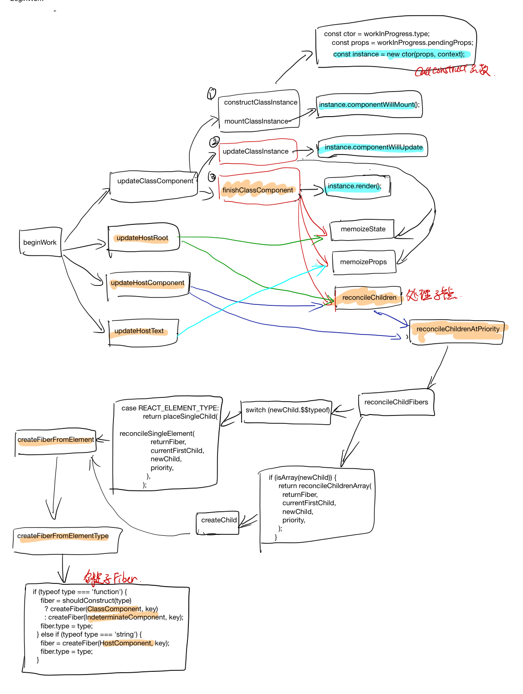
completeWork 创建dom元素，计算diff
创建的instance(对于html来说，就是dom节点), 存储在workInProgress.stateNode 里面, 计算好的props diff存放在了workInProgress.updateQueue，在下一个阶段commitWork 会把这个updateQueue里面的patch提交到host。

commitWork 提交diff
在commitUpdate中取WorkInprogress.updateQueue,然后调用Dom操作把diff apply上去

hotspot
在osx下编译调试hotspot
摘要
本文主要描述了在osx下编译hotspot debug版本以方便后续的hotspot代码研读，并尝试了使用gdb和lldb对hotspot进行debug。解决了Debug的时候会遇到的SIGSEGV问题，最后确定用lldb脚本来debug hotspot。
准备工作
- 安装freetype
$brew install freetype
- 获取openjdk repo代码
$git clone https://github.com/dmlloyd/openjdk.git
- configure然后make slowdebug 版本, 开启
--with-native-debug-symbols=internal选项以保留debug-symols
$bash ./configure --with-target-bits=64 --with-freetype-include=/usr/X11/include/freetype2 --with-freetype-lib=/usr/X11/lib --disable-warnings-as-errors --with-debug-level=slowdebug --with-native-debug-symbols=internal
$make
GDB 调试
准备好HelloWorld.java, 然后用javac编译
public class HelloWorld {
public static void main(String[] args) {
System.out.println("hello,world");
}
}
准备gdb 调试脚本, 这里面的file指向第一步编译好的java
$sudo gdb -x hello.gdb
里面的hello.gdb内容如下：
//hello.gdb
file /codes/openjdk/build/macosx-x86_64-normal-server-slowdebug/jdk/bin/java
handle SIGSEGV nostop noprint pass
# break points
break java.c:JavaMain
break InitializeJVM
break LoadJavaVM
break ContinueInNewThread
#in javaMain, after InitializeJVM
break java.c:477
commands
print "vm is"
print **vm
print "env is"
print **env
end
run HelloWorld
gdb脚本中的 break java.c:477 commands ... end 在到达断点的时候，会去执行commands中的命令，这样感觉非常方便~~. 在这边可以看到运行完InitializeJVM之后，vm和env这两个都初始化好了。
vm初始化之后是这样的, 绑定了几个函数指针, env中绑定的函数指针太多了，在此就不列举了。
{reserved0 = 0x0, reserved1 = 0x0, reserved2 = 0x0,
DestroyJavaVM = 0x104939bb0,
AttachCurrentThread = 0x104939e20,
DetachCurrentThread = 0x10493a2d0,
GetEnv = 0x10493a470,
AttachCurrentThreadAsDaemon = 0x10493a770
gdb 调试在mac下会有些问题，libjvm这个so中的符号看不到，无法打断点，网上研究了不少时间，最后发现是osx sierra和gdb兼容性问题，最后搞了半天，感觉太麻烦了。只好放弃，改用lldb.
lldb 调试
lldb调试和gdb很类似. lldb类似的脚本如下, 感觉比gdb清晰些，但是也啰嗦了些~~。
由于lldb只有在进程跑起来的时候，才能加process handle xxx, 所以在main上加一个breakpoint，在那个时候把hanlde SIGSEGV这个加上，忽略SIGSEGV信号。 lldb中通过breakpoing command add 这个加断点的时候要执行的命令，以DONE作为结束。
file /codes/openjdk/build/macosx-x86_64-normal-server-slowdebug/jdk/bin/java
settings set frame-format "frame #${frame.index}: ${line.file.basename}:${line.number}: ${function.name}\n"
#breakpoints
breakpoint set --name main
breakpoint command add
process handle SIGSEGV --notify false --pass true --stop false
continue
DONE
run HelloWorld
process handle SIGSEGV --notify false --pass true --stop false
通过下面命令执行lldb debug的脚本
$lldb -s helloworld.lldb
Hotspot代码研读: jvm 初始化时创建的线程
摘要
本文通过在pthread_create方法上打断点的方式，得到了jvm初始化的时候创建的线程。然后对里面主要线程JavaThread, VMThread， CompilerThread, GCthread 做了简要的分析。
创建线程的callstack
由于创建线程最终肯定会调用pthread_create方法，所以为了研究jvm启动的时候，创立了哪些线程，准备了下面的lldb调试脚本。在pthread_create方法上打断点，然后用bt命令打印callstack， 然后continue接着执行, 去打印下一个pthread_create的callstack, 这样最后就可以得到所有的pthread_create的callstack了。
HelloWorld.java
public class HelloWorld {
public static void main(String[] args) {
System.out.println("hello,world");
}
}
HelloWorld.lldb
//hello.lldb
file /codes/openjdk/build/macosx-x86_64-normal-server-slowdebug/jdk/bin/java
settings set frame-format "frame #${frame.index}: ${line.file.basename}:${line.number}: ${function.name}\n"
#breakpoints
breakpoint set --name main
breakpoint command add
process handle SIGSEGV --notify false --pass true --stop false
continue
DONE
breakpoint set --name pthread_create
breakpoint command add
bt
continue
DONE
run HelloWorld
执行lldb 脚本
#编译HelloWorld.java
$javac HelloWorld.java
#执行lldb脚本
$lldb -s HelloWorld.lldb
最后得到的pthread_create_bt.log, pthread call stack关系整理如下图:
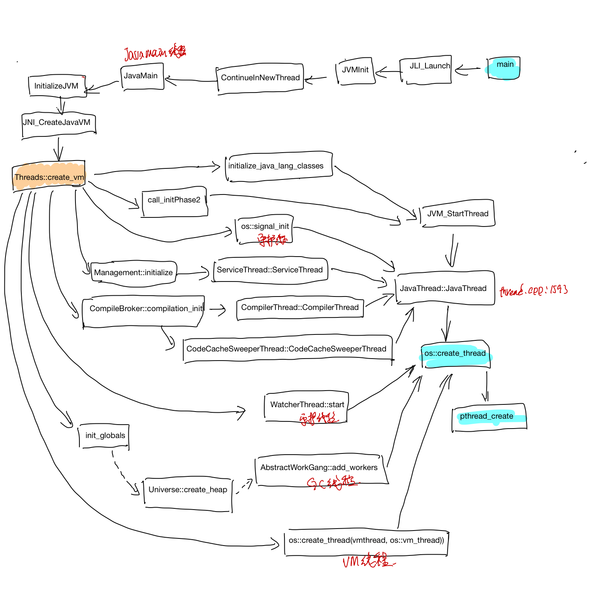线程创建的过程
main是java的laucher入口，在main-> JLI_LAUCH -> LoadJavaVM 中会调用dlopen加载libjvm的so, 设置好JNI_CreateJavaVm的函数指针.
// main -> JLI_LAUCH -> LoadJavaVM:
// load libjvm so
#ifndef STATIC_BUILD
libjvm = dlopen(jvmpath, RTLD_NOW + RTLD_GLOBAL);
#else
libjvm = dlopen(NULL, RTLD_FIRST);
#endif
//other codes
ifn->CreateJavaVM = (CreateJavaVM_t)
dlsym(libjvm, "JNI_CreateJavaVM");
然再main->JLI_LAUCH -> JVMinit -> ContinueInNewThread创建一个新的线程。新的线程开始执行JavaMain函数.
在JavaMain中最终调用Threads::create_vm 创建java vm中的其他线程。
//JNI_CreateJavaVM jni.cpp:4028
frame #13: thread.cpp:3623: Threads::create_vm(JavaVMInitArgs*, bool*)
frame #14: jni.cpp:3938: JNI_CreateJavaVM_inner(JavaVM_**, void**, void*)
frame #15: jni.cpp:4033: ::JNI_CreateJavaVM(JavaVM **, void **, void *)
frame #16: java.c:1450: InitializeJVM
frame #17: java.c:402: JavaMain
Thread 之间的继承关系
线程class之间的继承关系如下:

JavaThread
// TODO
VMThread
// TODO
CompileBroker
// TODO
Hotspot代码研读: class文件的加载和执行
摘要
本文首先描述了Helloworld.class文件的结构，然后分析了HelloWorld这个在Java中的类在hotpos jvm对应的instanceKlass实例。然后具体分析了HelloWorld中的static main函数字节码， 以及它被加载以后在JVM中存放的位置。之后描述了字节码解释器TemplateInterpreter初始化过程, 最后分析了static main这个java 代码入口函数被调用的过程, 以及new这个字节码执行的时候具体做了哪些工作。
HelloWorld.class 字节码分析
这里先准备一个HelloWord.java，main函数里面new了一个HelloWorld对象，然后调用了该对象的一个成员函数hello方法。
public class HelloWorld {
String m_name;
int m_age = 0;
public static void main(String[] args) {
HelloWorld obj = new HelloWorld();
obj.hello();
}
private void hello(){
m_age ++;
System.out.println("hello, world");
}
}
编译完之后，可以用如下命令查看生成的class二进制文件, 包括常量池和方法的字节码。
$javac HelloWorld.java
$javap -v HelloWorld >HelloWorld-javap
class文件包含两部分，一部分是常量池，另外一部分是方法对应的字节码。常量池包含了这个class中涉及到的字符串，字面常量，methodref, classRef等各种引用。
Constant pool:
#1 = Methodref #9.#23 // java/lang/Object."<init>":()V
#2 = Fieldref #3.#24 // HelloWorld.m_age:I
#3 = Class #25 // HelloWorld
#4 = Methodref #3.#23 // HelloWorld."<init>":()V
....
#10 = Utf8 m_name
#11 = Utf8 Ljava/lang/String;
下面HelloWorld.class的方法有三个，<init>":()V对应着HelloWorld的构造函数，还有main, hello这两个函数，下面主要看下HelloWorld main方法生成的字节码。new之后，做了一个dup(dup的原因是因为后面调用构造函数需要消耗一个，赋值操作也需要消耗一个)，调用了helloWorld的构造函数，对obj做了赋值, 最后调用了hello方法之后就返回了。
public static void main(java.lang.String[]);
descriptor: ([Ljava/lang/String;)V
flags: ACC_PUBLIC, ACC_STATIC
Code:
stack=2, locals=2, args_size=1
0: new #3 // class HelloWorld
3: dup
4: invokespecial #4 // Method "<init>":()V
7: astore_1
8: aload_1
9: invokespecial #5 // Method hello:()V
12: return
LineNumberTable:
line 6: 0
line 7: 8
line 8: 12
}
在hotspot的vm/interpreter/bytecodes.hpp中定义了一个字节码table，可查到上面各个指令对应的字节码值如下：
_new = 187, // 0xbb
_dup = 89, // 0x59
_invokespecial = 183, // 0xb7
_astore_1 = 76, // 0x4c
_aload_1 = 43, // 0x2b
_invokespecial = 183, // 0xb7
_return = 177, // 0xb1
使用vim编辑HelloWorld.class 这块对应的二进制文件(从bb开头)如下:
HelloWorld.class的加载
在HotSpot中由ClassFileParser负责解析class文件，并创建Class对应的instanceKlass实例，首先在vm/classfile/classFileParser.cpp中加入一段代码判断时候是HelloWorld.class的方法, 以方便打断点~~
InstanceKlass* ClassFileParser::create_instance_klass(bool changed_by_loadhook, TRAPS) {
if ( _klass != NULL) {
return _klass;
}
InstanceKlass* const ik =
InstanceKlass::allocate_instance_klass(*this, CHECK_NULL);
fill_instance_klass(ik, changed_by_loadhook, CHECK_NULL);
//新加的代码，以在加载HelloWorld.class的时候才打断点
if (ik->_name->index_of_at(0, "HelloWorld", strlen("HelloWorld")) != -1){
assert(_klass == ik, "invariant");
}
//other code
}
__
然后准备的lldb调试脚本如下：
file /codes/openjdk/build/macosx-x86_64-normal-server-slowdebug/jdk/bin/java
settings set frame-format "frame #${frame.index}: ${line.file.basename}:${line.number}: ${function.name}\n"
#breakpoints
breakpoint set --name main
breakpoint command add
process handle SIGSEGV --notify false --pass true --stop false
continue
DONE
breakpoint set --file classFileParser.cpp --line 5229
breakpoint command add
print *ik
print ik->_methods->_data[0]->name_and_sig_as_C_string()
memory read ik->_methods->_data[0]->_constMethod->code_base() -c `ik->_methods->_data[0]->_constMethod->code_size()`
print ik->_methods->_data[1]->name_and_sig_as_C_string()
memory read ik->_methods->_data[1]->_constMethod->code_base() -c `ik->_methods->_data[1]->_constMethod->code_size()`
print ik->_methods->_data[2]->name_and_sig_as_C_string()
memory read ik->_methods->_data[2]->_constMethod->code_base() -c `ik->_methods->_data[2]->_constMethod->code_size()`
DONE
run -Xint HelloWorld
最后HelloWorld.main对应的的调试lldb输出如下:
(lldb) print ik->_methods->_data[2]->name_and_sig_as_C_string()
(char *) $7 = 0x0000000101002d30 "HelloWorld.main([Ljava/lang/String;)V"
(lldb) memory read ik->_methods->_data[2]->_constMethod->code_base() -c `ik->_methods->_data[2]->_constMethod->code_size()`
0x121faab00: bb 00 03 59 b7 00 04 4c 2b b6 00 05 b1 �..Y�..L+�..�
通过上面的lldb调试可以看到，对于java中的HelloWorld这个类，hotspot创建了一个对应的InstanceKlass实例（假定为ik), ik->_methods中包含了helloworld中的方法。 HelloWorld中的方法对应的字节码, 保存在ik->_methods->_data[i]->_constMethod->code_base()指向保存它的字节码的内存，然后``ik->_mehods->_data[i]->_constMethod->_consts, 都指向了这个HelloWorld.class中对应的常量池。ConstPool->_tags这个数组标明了每个常量的类型（比如methodref对应这JVM_CONSTANT_Methodref,等等)

callstack 分析
通过callstack可以看到, 一个class的加载要通过下面的流程。SystemDictionary负责保存已经loadedclass的一个map, 如果mapl里面有了，就直接返回，如果没有，就调用classLoader去加载class文件，最后用klassFactory从class文件中创建出InstanceKlass来。
Class.c --> SystemDictionary --> ClassLoader --> klassFactory --> classFileParser-->Inputstream --> HelloWorld.class文件
frame #0: classFileParser.cpp:5229: ClassFileParser::create_instance_klass
frame #1: klassFactory.cpp:203: KlassFactory::create_from_stream
frame #2: systemDictionary.cpp:1142: SystemDictionary::resolve_from_stream
...
frame #5: ClassLoader.c:150: Java_java_lang_ClassLoader_defineClass1
...
frame #21: systemDictionary.cpp:1586: SystemDictionary::load_instance_class
...
frame #24: systemDictionary.cpp:185: SystemDictionary::resolve_or_fail
...
frame #27: Class.c:135: Java_java_lang_Class_forName0
....
frame #38: java.c:1543: LoadMainClass
frame #39: java.c:477: JavaMain
InstanceKlass的link
常量池中符号的resolve, method的link. //TODO
Interpreter
在上面加载class的callstack中可以看到有几段的callstack是机器码， 那些是TemplateInterpreter初始化的时候，生成的StubCode(机器代码), java的字节码就是在StubCode中按字节码解释执行（或者直接编译好机器码，直接跑的)~~。
frame #27: Class.c:135: Java_java_lang_Class_forName0
frame #28: 0x000000010602c838 0x000000010602c838
frame #29: 0x000000010600b220 0x000000010600b220
frame #30: 0x000000010600b220 0x000000010600b220
frame #31: 0x000000010600b220 0x000000010600b220
frame #32: 0x00000001060009f1 0x00000001060009f1
frame #33: javaCalls.cpp:410: JavaCalls::call_helper
frame #34: os_bsd.cpp:3682: os::os_exception_wrapper
frame #35: javaCalls.cpp:306: JavaCalls::call
JavaCalls::call 这个是从jvm中调java方法的入口。可以在跑代码的时候加个-XX:+PrintInterpreter选项打印这些生成的studecode的代码。
StubQueue的创建
在hotspot中有三种解释器：TemplateInterpreter，CppInterprete 还有遗留的bytecodeInterpreter。默认用的是TemplateInterpreter，TemplateInterpreter在初始化的时候会把字节码对应的执行代码通过MASM直接转对应平台(比如X86， X86-64)对应的机器代码, 这部分的机器码作为一个个Stub保存在StubQueue中，除了字节码, method_entry也会生成一个个的stub。 生成Stub的callstack如下：
* frame #0: templateInterpreterGenerator.cpp:57: TemplateInterpreterGenerator::generate_all()
frame #1: templateInterpreterGenerator.cpp:40: TemplateInterpreterGenerator::TemplateInterpreterGenerator(StubQueue*)
frame #2: templateInterpreterGenerator.cpp:37: TemplateInterpreterGenerator::TemplateInterpreterGenerator(StubQueue*)
frame #3: templateInterpreter.cpp:56: TemplateInterpreter::initialize()
frame #4: interpreter.cpp:116: interpreter_init()
frame #5: init.cpp:115: init_globals()
frame #6: thread.cpp:3623: Threads::create_vm(JavaVMInitArgs*, bool*)
frame #7: jni.cpp:3938: JNI_CreateJavaVM_inner(JavaVM_**, void**, void*)
frame #8: jni.cpp:4033: ::JNI_CreateJavaVM(JavaVM **, void **, void *)
frame #9: java.c:1450: InitializeJVM
frame #10: java.c:402: JavaMain
分配StubQueue内存
在TemplateInterpreter::initialize中，首先会去申请一块内存，存放stubcode, 然后下面TemplateInterpreterGenerator的代码都会保存到这块内存里面。
//TemplateInterpreter::initialize
// generate interpreter
{ ResourceMark rm;
TraceTime timer("Interpreter generation", TRACETIME_LOG(Info, startuptime));
int code_size = InterpreterCodeSize;
NOT_PRODUCT(code_size*=4;) // debug uses extra interpreter code space
_code = new StubQueue(new InterpreterCodeletInterface, code_size, NULL,
"Interpreter");
TemplateInterpreterGenerator g(_code);
}
__
code_size 和各个平台是相关的，比如x86平台, 大小为224K。
hotspot/src/cpu/x86/vm/templateInterpreterGenerator_x86.cpp
58:int TemplateInterpreter::InterpreterCodeSize = JVMCI_ONLY(268) NOT_JVMCI(256) * 1024;
60:int TemplateInterpreter::InterpreterCodeSize = 224 * 1024;
生成字节码对应的 stub
在set_entry_points_for_all_bytes里面，会遍历所有的bytecode，根据预先创建好的_template_table（这个表是在TemplateTable::initialize初始化的时候创建的）去生成字节码对应的code。比如字节码_new生成stubcode时候的callstack如下:
frame #0: templateTable_x86.cpp:3830: TemplateTable::_new()
frame #1: templateTable.cpp:63: Template::generate(InterpreterMacroAssembler*)
frame #2: templateInterpreterGenerator.cpp:396: TemplateInterpreterGenerator::generate_and_dispatch(Template*, TosState)
frame #3: templateInterpreterGenerator_x86.cpp:1814: TemplateInterpreterGenerator::set_vtos_entry_points(Template*, unsigned char*&, unsigned char*&, unsigned char*&, unsigned char*&, unsigned char*&, unsigned char*&, unsigned char*&, unsigned char*&, unsigned char*&)
frame #4: templateInterpreterGenerator.cpp:364: TemplateInterpreterGenerator::set_short_entry_points(Template*, unsigned char*&, unsigned char*&, unsigned char*&, unsigned char*&, unsigned char*&, unsigned char*&, unsigned char*&, unsigned char*&, unsigned char*&)
frame #5: templateInterpreterGenerator.cpp:329: TemplateInterpreterGenerator::set_entry_points(Bytecodes::Code)
frame #6: templateInterpreterGenerator.cpp:285: TemplateInterpreterGenerator::set_entry_points_for_all_bytes()
frame #7: templateInterpreterGenerator.cpp:263: TemplateInterpreterGenerator::generate_all()
生成字节码对应的stub的函数如下，这里的_gen这个generate就是TemplateInterpreter::_new了。 masm最后的flush会把机器码都flush到StubQueue那边分配的buffer中。
void Template::generate(InterpreterMacroAssembler* masm) {
// parameter passing
TemplateTable::_desc = this;
TemplateTable::_masm = masm;
// code generation
_gen(_arg);
masm->flush();
}
字节码的stub生成完之后，interpreter会有个_normal_table 保存对这些bytecode对应的stubcode的引用, 这儿entry的一堆参数代表了寄存器， 在dispatch_next中会用到这个表。
EntryPoint entry(bep, zep, cep, sep, aep, iep, lep, fep, dep, vep);
Interpreter::_normal_table.set_entry(code, entry);
dispatch_next中会去取bytecode对应stubcode的地址，然后在dispatch_base中jmp到字节码对应的code去执行。
void InterpreterMacroAssembler::dispatch_next(TosState state, int step) {
// load next bytecode (load before advancing _bcp_register to prevent AGI)
load_unsigned_byte(rbx, Address(_bcp_register, step));
// advance _bcp_register
increment(_bcp_register, step);
dispatch_base(state, Interpreter::dispatch_table(state));
}
__
method entry
hotspot中给java的method分了好几类，这样对不同种类的method可以做专门的优化, 比如针对java_lang_math_sin这些常用的数学函数，对应的method entry就直接是sin的汇编代码了。
Method entry的种类定义在了AbstractInterpreter::MethodKind中，通常用的都是zerolocals, 同步的method入口就是zerolocals_synchronized这个了，相应的还有native, native_synchronized， native的方法。部分的methodKind如下:
zerolocals, // method needs locals initialization
zerolocals_synchronized, // method needs locals initialization & is synchronized
native, // native method
native_synchronized, // native method & is synchronized
empty, // empty method (code: _return)
accessor, // accessor method (code: _aload_0, _getfield, _(a|i)return)
abstract, // abstract method (throws an AbstractMethodException)
method_handle_invoke_FIRST, // java.lang.invoke.MethodHandles::invokeExact, etc.
java_lang_math_sin, // implementation of java.lang.Math.sin (x)
method entry定义如下：
#define method_entry(kind) \
{ CodeletMark cm(_masm, "method entry point (kind = " #kind ")"); \
Interpreter::_entry_table[Interpreter::kind] = generate_method_entry(Interpreter::kind); \
Interpreter::update_cds_entry_table(Interpreter::kind); \
}
__
对于zerolocals_synchronized和zerolocals对应的入口是: generate_normal_entry 生成的stubcode, 可以看到, zerolocals_synchronized多了调了一个lock_method, 而且调用了dispatch_next jmp到bytecode对应的stubcode.
// address TemplateInterpreterGenerator::generate_normal_entry(bool synchronized) {
const Address constMethod(rbx, Method::const_offset());
const Address access_flags(rbx, Method::access_flags_offset());
const Address size_of_parametersrdx,
const Address size_of_locals(rdx, ConstMethod::size_of_locals_offset());
// get parameter size (always needed)
__ movptr(rdx, constMethod);
//other code
if (synchronized) {
// Allocate monitor and lock method
lock_method();
}
//other code
__ notify_method_entry();
//other code
__ dispatch_next(vtos);
//other code
native方法入口generate_native_entry 生成部分如下, 最终会去call native的方法。
//address TemplateInterpreterGenerator::generate_native_entry(bool synchronized)
// allocate space for parameters
__ get_method(method);
__ movptr(t, Address(method, Method::const_offset()));
__ load_unsigned_short(t, Address(t, ConstMethod::size_of_parameters_offset()));
//other code
__ call(t);
__ get_method(method); // slow path can do a GC, reload RBX
//other code
method::link
这个entry_table中的入口最后会在instancKlass中method::link的时候和method关联起来。
//method::link代码片段
address entry = Interpreter::entry_for_method(h_method);
set_interpreter_entry(entry);
//native functions
if (is_native() && !has_native_function()) {
set_native_function(
SharedRuntime::native_method_throw_unsatisfied_link_error_entry(),
!native_bind_event_is_interesting);
}
//设置method的入口
void set_interpreter_entry(address entry) {
assert(!is_shared(), "shared method's interpreter entry should not be changed at run time");
if (_i2i_entry != entry) {
_i2i_entry = entry;
}
if (_from_interpreted_entry != entry) {
_from_interpreted_entry = entry;
}
}
TemplateInterpreter初始画之后，各个table之前的关系图如下:

HelloWorld的static main的执行
经过上面的分析，再来看java代码中main被执行过程，首先在JavaMain中加载main class，然后获得class的static main method, 最后调用了这个static method，开始执行HelloWorld.class的Main method。
//JavaMain 代码片段
mainClass = LoadMainClass(env, mode, what);
//...some other code
mainID = (*env)->GetStaticMethodID(env, mainClass, "main",
"([Ljava/lang/String;)V");
//...some other code
(*env)->CallStaticVoidMethod(env, mainClass, mainID, mainArgs);
这里先不管LoadMainClass的过程， 主要分析CallStaticVoidMethod这个方法。首先准备下面的lldb调试脚本, 在JavaMain 执行CallStaticVoidMethod之前打个断点，然后再在JavaCalls::call_helper中打个断点。
#just a line before (*env)->CallStaticVoidMethod(env, mainClass, mainID, mainArgs);
breakpoint set --file java.c --line 517
breakpoint command add
breakpoint set --method JavaCalls::call_helper
continue
DONE
可以看到callstack如下
* frame #0: javaCalls.cpp:360: JavaCalls::call_helper(JavaValue*, methodHandle const&, JavaCallArguments*, Thread*)
frame #1: os_bsd.cpp:3682: os::os_exception_wrapper(void (*)(JavaValue*, methodHandle const&, JavaCallArguments*, Thread*), JavaValue*, methodHandle const&, JavaCallArguments*, Thread*)
frame #2: javaCalls.cpp:306: JavaCalls::call(JavaValue*, methodHandle const&, JavaCallArguments*, Thread*)
frame #3: jni.cpp:1120: jni_invoke_static(JNIEnv_*, JavaValue*, _jobject*, JNICallType, _jmethodID*, JNI_ArgumentPusher*, Thread*)
frame #4: jni.cpp:1990: ::jni_CallStaticVoidMethod(JNIEnv *, jclass, jmethodID, ...)
frame #5: java.c:518: JavaMain
JavaCalls::call_helper
在JavaCalls::call_helper中关键代码片段如下， 首先设置好method的entry point， 这个entry point就是上文中所说的interpreter初始化的时候建立的method entry point（两者之间连接是在method::link的时候建立的）。
//JavaCalls::call_helper代码片段
//设置entry point
address entry_point = method->from_interpreted_entry();
if (JvmtiExport::can_post_interpreter_events() && thread->is_interp_only_mode()) {
entry_point = method->interpreter_entry();
}
//other code
// do call
{ JavaCallWrapper link(method, receiver, result, CHECK);
{ HandleMark hm(thread); // HandleMark used by HandleMarkCleaner
StubRoutines::call_stub()(
(address)&link,
// (intptr_t*)&(result->_value), // see NOTE above (compiler problem)
result_val_address, // see NOTE above (compiler problem)
result_type,
method(),
entry_point,
args->parameters(),
args->size_of_parameters(),
CHECK
);
result = link.result(); // circumvent MS C++ 5.0 compiler bug (result is clobbered across call)
// Preserve oop return value across possible gc points
if (oop_result_flag) {
thread->set_vm_result((oop) result->get_jobject());
}
}
//保存执行结果：
if (oop_result_flag) {
result->set_jobject((jobject)thread->vm_result());
thread->set_vm_result(NULL);
}
call_stub
这个call_stub也是一段汇编代码（定义在StubGenerator_x86_X64.cpp:203由generate_call_stub生成）它在保存好一堆寄存器和栈之后，就把用到的参数都压到寄存器里面，然后调method的entry point去执行，执行完了再把寄存器和栈恢复了。
其中的call Java function部分的汇编代码如下：
// call Java function
__ BIND(parameters_done);
__ movptr(rbx, method); // get Method*
__ movptr(c_rarg1, entry_point); // get entry_point
__ mov(r13, rsp); // set sender sp
BLOCK_COMMENT("call Java function");
__ call(c_rarg1);
BLOCK_COMMENT("call_stub_return_address:");
return_address = __ pc();
JavaCallWrapper
在JavaCallWrapper的构造函数中，会申请一个新的JNIHandleBlock，并把它设置为thread的active_handles，在析构函数中会恢复线程之前的JNIHandleBlock，并释放之前申请的JNIHandleBlock。
线程自身维护一个free_handle_block的list， 申请JNIHandleBlock的时候，就从这里面去取，如果freelist用完了，才回去加个mutex lock new一个JNIHanleBlock。释放的时候，就放回到这个list里面。
很多的java code都会去调用vm/prims/jvm.cpp中的JVM_ENTRY，而JVM_ENTRY会用JNIHanleBlock->make_local保存返回给java代码的的结果。在java code跑完以后,由JavaCallWrapper的destructor负责释放这些内存。
jobject JNIHandles::make_local(Thread* thread, oop obj) {
if (obj == NULL) {
return NULL; // ignore null handles
} else {
assert(Universe::heap()->is_in_reserved(obj), "sanity check");
return thread->active_handles()->allocate_handle(obj);
}
}
bytecode对应的代码
hotspot默认用的是TemplateInterpreter把字节码对应的代码直接生成汇编代码，读起来比较难。hotspot中还有一个bytecodeInterpreter，这个完全是用cpp写的，两者从逻辑上看起来没区别。所以看每个bytecode对应的代码可以从bytecodeInterpreter入手。
new
java中的new 一个class 有两个path： 一个是fastpath: class对应的instanceKlass已经解析，初始化好了，这种比较快，另外一种是 slowpath需要去掉interpreter的runtime 去link, init这个klass, 然后把它放到constpoll的cache里面， 然后分配内存。
在heap堆或者thread的localstorage上分配内存， 设置好oop的 mark head,还有iklass指针，iklass指向在jvm中代表该java类的instanceKlass。
首先判断instanceklass是否已经加载了并且初始化了
ConstantPool* constants = istate->method()->constants();
if (!constants->tag_at(index).is_unresolved_klass()) {
// Make sure klass is initialized and doesn't have a finalizer
Klass* entry = constants->slot_at(index).get_klass();
InstanceKlass* ik = InstanceKlass::cast(entry);
if (ik->is_initialized() && ik->can_be_fastpath_allocated() ) {
如果要求useTLAB的话，就分配在thread localstorage上
size_t obj_size = ik->size_helper();
if (UseTLAB) {
result = (oop) THREAD->tlab().allocate(obj_size);
}
否则从heap上分配
HeapWord* compare_to = *Universe::heap()->top_addr();
HeapWord* new_top = compare_to + obj_size;
if (new_top <= *Universe::heap()->end_addr()) {
if (Atomic::cmpxchg_ptr(new_top, Universe::heap()->top_addr(), compare_to) != compare_to) {
goto retry;
}
result = (oop) compare_to;
}
然后就是初始化这块内存了，设置好对象的markhead和kclass指针, 最后把它放到栈上。
if (need_zero ) {
HeapWord* to_zero = (HeapWord*) result + sizeof(oopDesc) / oopSize;
obj_size -= sizeof(oopDesc) / oopSize;
if (obj_size > 0 ) {
memset(to_zero, 0, obj_size * HeapWordSize);
}
}
if (UseBiasedLocking) {
result->set_mark(ik->prototype_header());
} else {
result->set_mark(markOopDesc::prototype());
}
result->set_klass_gap(0);
result->set_klass(ik);
// Must prevent reordering of stores for object initialization
// with stores that publish the new object.
OrderAccess::storestore();
SET_STACK_OBJECT(result, 0);
UPDATE_PC_AND_TOS_AND_CONTINUE(3, 1);
对于slowcase回去调用interpreterRuntime::_new去创建对象
CALL_VM(InterpreterRuntime::_new(THREAD, METHOD->constants(), index),
handle_exception);
// Must prevent reordering of stores for object initialization
// with stores that publish the new object.
OrderAccess::storestore();
SET_STACK_OBJECT(THREAD->vm_result(), 0);
THREAD->set_vm_result(NULL);
UPDATE_PC_AND_TOS_AND_CONTINUE(3, 1);
___
go
Runtime PGM Schedule
PGM concept:
// 摘自src/runtime/proc.go
// G - goroutine.
// M - worker thread, or machine.
// P - processor, a resource that is required to execute Go code.
// M must have an associated P to execute Go code, however it can be
// blocked or in a syscall w/o an associated P.
三者struct之间的引用关系如下：
Work stealing scheduler
Golang中的PGM采用类似于tokio的thread pool executor. 采用了worksteal的形式, 一方面降低了对global队列的锁的竞争。 另一方面每个G(go routine) 生成的go routine优先放到proc的local 队列里面，优先由同一个线程执行，比较好的增加了局部性。
processor创建

machine worker thread线程创建
Status
Goroutine
Proc

sysmon
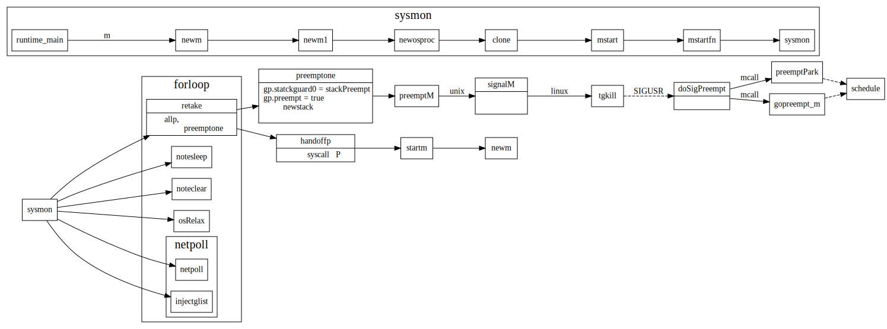
Goroutine Stack
goroutine switch

mcall
mcall 保存被切换gorutine信息，并在当前线程g0 goroutine上执行新的func

// func mcall(fn func(*g))
// Switch to m->g0's stack, call fn(g).
// Fn must never return. It should gogo(&g->sched)
// to keep running g.
TEXT runtime·mcall(SB), NOSPLIT, $0-8
MOVQ fn+0(FP), DI
get_tls(CX)
MOVQ g(CX), AX // save state in g->sched
MOVQ 0(SP), BX // caller's PC
MOVQ BX, (g_sched+gobuf_pc)(AX)
LEAQ fn+0(FP), BX // caller's SP
MOVQ BX, (g_sched+gobuf_sp)(AX)
MOVQ AX, (g_sched+gobuf_g)(AX)
MOVQ BP, (g_sched+gobuf_bp)(AX)
// switch to m->g0 & its stack, call fn
MOVQ g(CX), BX
MOVQ g_m(BX), BX
MOVQ m_g0(BX), SI
CMPQ SI, AX // if g == m->g0 call badmcall
JNE 3(PC)
MOVQ $runtime·badmcall(SB), AX
JMP AX
MOVQ SI, g(CX) // g = m->g0
MOVQ (g_sched+gobuf_sp)(SI), SP // sp = m->g0->sched.sp
PUSHQ AX
MOVQ DI, DX
MOVQ 0(DI), DI
CALL DI
POPQ AX
MOVQ $runtime·badmcall2(SB), AX
JMP AX
RET
gogo
gogo 用来从gobuf中恢复协程执行状态，并跳转到上一次指令处继续执行
// func gogo(buf *gobuf)
// restore state from Gobuf; longjmp
TEXT runtime·gogo(SB), NOSPLIT, $16-8
MOVQ buf+0(FP), BX // gobuf
MOVQ gobuf_g(BX), DX
MOVQ 0(DX), CX // make sure g != nil
get_tls(CX)
MOVQ DX, g(CX)
MOVQ gobuf_sp(BX), SP // restore SP
MOVQ gobuf_ret(BX), AX
MOVQ gobuf_ctxt(BX), DX
MOVQ gobuf_bp(BX), BP
MOVQ $0, gobuf_sp(BX) // clear to help garbage collector
MOVQ $0, gobuf_ret(BX)
MOVQ $0, gobuf_ctxt(BX)
MOVQ $0, gobuf_bp(BX)
MOVQ gobuf_pc(BX), BX
JMP BX
gosave
gosave感觉和cgo相关，这个代码还没怎么搞明白
// func gosave(buf *gobuf)
// save state in Gobuf; setjmp
TEXT runtime·gosave(SB), NOSPLIT, $0-8
MOVQ buf+0(FP), AX // gobuf
LEAQ buf+0(FP), BX // caller's SP
MOVQ BX, gobuf_sp(AX)
MOVQ 0(SP), BX // caller's PC
MOVQ BX, gobuf_pc(AX)
MOVQ $0, gobuf_ret(AX)
MOVQ BP, gobuf_bp(AX)
// Assert ctxt is zero. See func save.
MOVQ gobuf_ctxt(AX), BX
TESTQ BX, BX
JZ 2(PC)
CALL runtime·badctxt(SB)
get_tls(CX)
MOVQ g(CX), BX
MOVQ BX, gobuf_g(AX)
RET
Stack增长
编译器在每个函数调用中都会插入对morestack的调用。
morestack会检查当前栈空间是否够用，不够用的话，会调用newstack增长空间. newstack 会分配2倍大小的stack, copy过去, 并将指向该stack的引用指针也修改过去。
Memory分配
struct之间引用关系
//src/runtime/malloc.go
// fixalloc: a free-list allocator for fixed-size off-heap objects,
// used to manage storage used by the allocator.
// mheap: the malloc heap, managed at page (8192-byte) granularity.
// mspan: a run of in-use pages managed by the mheap.
// mcentral: collects all spans of a given size class.
// mcache: a per-P cache of mspans with free space.
// mstats: allocation statistics.
- fixalloc 用于分配mspan等固定大小的object
- mheap 用于8KB page粒度内存管理
- mspan: 一段连续的pages,用于分配制定specClass的object.
- mcentral: 所有span的list
- mcache: 线程的span cache, 优先从cache中分配, 避免每次访问heap需要lock.
下图摘自1 比较清楚的画出了这几者之间的层级关系

mspan
mspan的创建路径如下

Ref
GC
GcPhase
_GCoff: GC not running; sweeping in background, write barrier disabled_GCmark: GC marking roots and workbufs: allocate black, write barrier ENABLED_GCmarktermination: GC mark termination: allocate black, P's help GC, write barrier ENABLED
如下图所示，GC过程中开启了两次STW(stop the world), 第一次主要为parepare阶段， 第二次为Marktermination阶段:
//go:nosplit
func setGCPhase(x uint32) {
atomic.Store(&gcphase, x)
writeBarrier.needed = gcphase == _GCmark || gcphase == _GCmarktermination
writeBarrier.enabled = writeBarrier.needed || writeBarrier.cgo
}
Mark Phase
Golang中是如何根据指针找到对象，以及该对象所引用的对象的？答案是根据heap Arena中bitmap存储的元信息。 对于Arena中每个word, bitmap使用了两个bit，来标识该word是否是指针，以及该word是否已被扫描过。
type heapArena struct {
// bitmap stores the pointer/scalar bitmap for the words in
// this arena
bitmap [heapArenaBitmapBytes]byte
spans [pagesPerArena]*mspan
pageInUse [pagesPerArena / 8]uint8
pageMarks [pagesPerArena / 8]uint8
zeroedBase uintptr
}
另外每个span中有allocBits和gcmarkbits用来标记span中每个slot是否被分配。在mallocgc中会使用该信息，找到可分配的slot, 另外在gc sweep阶段根据coutAlloc()==0 来判断mspan是否是空闲的，可以被回收.
//go:nosplit
// 返回一个指针在heapArena中的bits位
func heapBitsForAddr(addr uintptr) (h heapBits) {
// 2 bits per word, 4 pairs per byte, and a mask is hard coded.
arena := arenaIndex(addr)
ha := mheap_.arenas[arena.l1()][arena.l2()]
// The compiler uses a load for nil checking ha, but in this
// case we'll almost never hit that cache line again, so it
// makes more sense to do a value check.
if ha == nil {
// addr is not in the heap. Return nil heapBits, which
// we expect to crash in the caller.
return
}
h.bitp = &ha.bitmap[(addr/(sys.PtrSize*4))%heapArenaBitmapBytes]
h.shift = uint32((addr / sys.PtrSize) & 3)
h.arena = uint32(arena)
h.last = &ha.bitmap[len(ha.bitmap)-1]
return
}
func (s *mspan) markBitsForIndex(objIndex uintptr) markBits {
bytep, mask := s.gcmarkBits.bitp(objIndex)
return markBits{bytep, mask, objIndex}
}
// bitp returns a pointer to the byte containing bit n and a mask for
// selecting that bit from *bytep.
func (b *gcBits) bitp(n uintptr) (bytep *uint8, mask uint8) {
return b.bytep(n / 8), 1 << (n % 8)
}
并发标记
WriteBarrier
a := new(A)
a.c = new(C)
混合写屏障1 这里的shade就是将白色对象放入待扫描队列中(wbBuf)
writePointer(slot, ptr):
shade(*slot)
if current stack is grey:
shade(ptr)
*slot = ptr
编译器注入的writeBarrier
0x0059 00089 (test.go:14) CMPL runtime.writeBarrier(SB), $0
0x0060 00096 (test.go:14) JEQ 100
0x0062 00098 (test.go:14) JMP 115
0x0064 00100 (test.go:14) MOVQ AX, (DI)
0x0067 00103 (test.go:14) JMP 105
0x0069 00105 (test.go:15) PCDATA $0, $0
0x0069 00105 (test.go:15) PCDATA $1, $0
0x0069 00105 (test.go:15) MOVQ 56(SP), BP
0x006e 00110 (test.go:15) ADDQ $64, SP
0x0072 00114 (test.go:15) RET
0x0073 00115 (test.go:14) PCDATA $0, $-2
0x0073 00115 (test.go:14) PCDATA $1, $-2
0x0073 00115 (test.go:14) CALL runtime.gcWriteBarrier(SB)
0x0078 00120 (test.go:14) JMP 105
scanobject
scanobject:根据bitmap信息，判断是否是指针，是否已扫描过。 如果是指针的话，查找指针对应的object, 并加到队列里面（标记为灰色） 这样下次gcDrain会从队列中去取，接着循环的扫描。。
// scanobject scans the object starting at b, adding pointers to gcw.
// b must point to the beginning of a heap object or an oblet.
// scanobject consults the GC bitmap for the pointer mask and the
// spans for the size of the object.
//
//go:nowritebarrier
func scanobject(b uintptr, gcw *gcWork) {
// Find the bits for b and the size of the object at b.
//
// b is either the beginning of an object, in which case this
// is the size of the object to scan, or it points to an
// oblet, in which case we compute the size to scan below.
hbits := heapBitsForAddr(b)
s := spanOfUnchecked(b)
//...
if s.spanclass.noscan() {
// Bypass the whole scan.
gcw.bytesMarked += uint64(n)
return
}
var i uintptr
for i = 0; i < n; i += sys.PtrSize {
// Find bits for this word.
if i != 0 {
// Avoid needless hbits.next() on last iteration.
hbits = hbits.next()
}
// Load bits once. See CL 22712 and issue 16973 for discussion.
bits := hbits.bits()
// During checkmarking, 1-word objects store the checkmark
// in the type bit for the one word. The only one-word objects
// are pointers, or else they'd be merged with other non-pointer
// data into larger allocations.
if i != 1*sys.PtrSize && bits&bitScan == 0 {
break // no more pointers in this object
}
if bits&bitPointer == 0 {
continue // not a pointer
}
// Work here is duplicated in scanblock and above.
// If you make changes here, make changes there too.
obj := *(*uintptr)(unsafe.Pointer(b + i))
// At this point we have extracted the next potential pointer.
// Quickly filter out nil and pointers back to the current object.
if obj != 0 && obj-b >= n {
// Test if obj points into the Go heap and, if so,
// mark the object.
//
// Note that it's possible for findObject to
// fail if obj points to a just-allocated heap
// object because of a race with growing the
// heap. In this case, we know the object was
// just allocated and hence will be marked by
// allocation itself.
if obj, span, objIndex := findObject(obj, b, i); obj != 0 {
greyobject(obj, b, i, span, gcw, objIndex)
}
}
}
//...
}
Sweep Phase
scavenging
go1.13之后改为更智能的内存归还给os2
Ref
Context
Context struct之间关系
Context example
// This example demonstrates the use of a cancelable context to prevent a
// goroutine leak. By the end of the example function, the goroutine started
// by gen will return without leaking.
func ExampleWithCancel() {
// gen generates integers in a separate goroutine and
// sends them to the returned channel.
// The callers of gen need to cancel the context once
// they are done consuming generated integers not to leak
// the internal goroutine started by gen.
gen := func(ctx context.Context) <-chan int {
dst := make(chan int)
n := 1
go func() {
for {
select {
case <-ctx.Done():
return // returning not to leak the goroutine
case dst <- n:
n++
}
}
}()
return dst
}
ctx, cancel := context.WithCancel(context.Background())
defer cancel() // cancel when we are finished consuming integers
for n := range gen(ctx) {
fmt.Println(n)
if n == 5 {
break
}
}
// Output:
// 1
// 2
// 3
// 4
// 5
}
defer, recover, panic
- 每个defer语句生成的defer结构会插到队首，defer执行时从defer link list头开始执行.所以defer以LIFO顺序执行。
- 每个return语句会编译器会插入deferreturn。
- 在panic中会调用defer 链表中的函数，然后在defer中可以recover, 也可以接着panic.
defer
defer 语句
每个defer语句会转换成对deferproc的调用.
// Calls the function n using the specified call type.
// Returns the address of the return value (or nil if none).
func (s *state) call(n *Node, k callKind) *ssa.Value {
//...
switch {
case k == callDefer:
call = s.newValue1A(ssa.OpStaticCall, types.TypeMem, deferproc, s.mem())
...
}
deferproc 会新建一个_defer结构的struct, 并插到当前goroutine的_defer列表队头
// Create a new deferred function fn with siz bytes of arguments.
// The compiler turns a defer statement into a call to this.
//go:nosplit
func deferproc(siz int32, fn *funcval) { // arguments of fn follow fn
if getg().m.curg != getg() {
// go code on the system stack can't defer
throw("defer on system stack")
}
// the arguments of fn are in a perilous state. The stack map
// for deferproc does not describe them. So we can't let garbage
// collection or stack copying trigger until we've copied them out
// to somewhere safe. The memmove below does that.
// Until the copy completes, we can only call nosplit routines.
sp := getcallersp()
argp := uintptr(unsafe.Pointer(&fn)) + unsafe.Sizeof(fn)
callerpc := getcallerpc()
d := newdefer(siz)
if d._panic != nil {
throw("deferproc: d.panic != nil after newdefer")
}
d.fn = fn
d.pc = callerpc
d.sp = sp
switch siz {
case 0:
// Do nothing.
case sys.PtrSize:
*(*uintptr)(deferArgs(d)) = *(*uintptr)(unsafe.Pointer(argp))
default:
memmove(deferArgs(d), unsafe.Pointer(argp), uintptr(siz))
}
// deferproc returns 0 normally.
// a deferred func that stops a panic
// makes the deferproc return 1.
// the code the compiler generates always
// checks the return value and jumps to the
// end of the function if deferproc returns != 0.
return0()
// No code can go here - the C return register has
// been set and must not be clobbered.
}
其中return0的定义如下
TEXT runtime·return0(SB), NOSPLIT, $0
MOVL $0, AX
RET
compiler生成的代码会检查ax寄存器的值。
defer函数的调用
编译器在函数的return RET指令后面加入deferreturn的调用.
func fa() {
defer fmt.Printf("hello")
}
"".fa STEXT size=106 args=0x0 locals=0x48
0x0000 00000 (test.go:7) TEXT "".fa(SB), ABIInternal, $72-0
0x0000 00000 (test.go:7) MOVQ (TLS), CX
0x0009 00009 (test.go:7) CMPQ SP, 16(CX)
0x000d 00013 (test.go:7) JLS 99
0x000f 00015 (test.go:7) SUBQ $72, SP
0x0013 00019 (test.go:7) MOVQ BP, 64(SP)
0x0018 00024 (test.go:7) LEAQ 64(SP), BP
0x001d 00029 (test.go:7) FUNCDATA $0, gclocals·33cdeccccebe80329f1fdbee7f5874cb(SB)
0x001d 00029 (test.go:7) FUNCDATA $1, gclocals·33cdeccccebe80329f1fdbee7f5874cb(SB)
0x001d 00029 (test.go:7) FUNCDATA $2, gclocals·9fb7f0986f647f17cb53dda1484e0f7a(SB)
0x001d 00029 (test.go:8) PCDATA $0, $0
0x001d 00029 (test.go:8) PCDATA $1, $0
0x001d 00029 (test.go:8) MOVL $0, ""..autotmp_1+8(SP)
0x0025 00037 (test.go:8) PCDATA $0, $1
0x0025 00037 (test.go:8) LEAQ "".fa.func1·f(SB), AX
0x002c 00044 (test.go:8) PCDATA $0, $0
0x002c 00044 (test.go:8) MOVQ AX, ""..autotmp_1+32(SP)
0x0031 00049 (test.go:8) PCDATA $0, $1
0x0031 00049 (test.go:8) LEAQ ""..autotmp_1+8(SP), AX
0x0036 00054 (test.go:8) PCDATA $0, $0
0x0036 00054 (test.go:8) MOVQ AX, (SP)
0x003a 00058 (test.go:8) CALL runtime.deferprocStack(SB)
// 如果deferprocStack返回值不为０,则调到末尾执行deferreturn
0x003f 00063 (test.go:8) TESTL AX, AX
0x0041 00065 (test.go:8) JNE 83
0x0043 00067 (test.go:11) XCHGL AX, AX
0x0044 00068 (test.go:11) CALL runtime.deferreturn(SB)
0x0049 00073 (test.go:11) MOVQ 64(SP), BP
0x004e 00078 (test.go:11) ADDQ $72, SP
0x0052 00082 (test.go:11) RET
0x0053 00083 (test.go:8) XCHGL AX, AX
0x0054 00084 (test.go:8) CALL runtime.deferreturn(SB)
0x0059 00089 (test.go:8) MOVQ 64(SP), BP
0x005e 00094 (test.go:8) ADDQ $72, SP
0x0062 00098 (test.go:8) RET
0x0063 00099 (test.go:8) NOP
0x0063 00099 (test.go:7) PCDATA $1, $-1
0x0063 00099 (test.go:7) PCDATA $0, $-1
0x0063 00099 (test.go:7) CALL runtime.morestack_noctxt(SB)
0x0068 00104 (test.go:7) JMP 0
deferreturn 会调用jmpdefer，不断的执行defer link中的fn
// func jmpdefer(fv *funcval, argp uintptr)
// argp is a caller SP.
// called from deferreturn.
// 1. pop the caller
// 2. sub 5 bytes from the callers return
// 3. jmp to the argument
TEXT runtime·jmpdefer(SB), NOSPLIT, $0-16
MOVQ fv+0(FP), DX // fn
MOVQ argp+8(FP), BX // caller sp
LEAQ -8(BX), SP // caller sp after CALL
MOVQ -8(SP), BP // restore BP as if deferreturn returned (harmless if framepointers not in use)
SUBQ $5, (SP) // return to CALL again
MOVQ 0(DX), BX
JMP BX // but first run the deferred function
panic

在panic中会调用当前goroutine的defer 函数，在这些defer函数中也可能会有panic，所有每个goroutine也有个panic的link list。
如果在defer中调用了recover, 那么goroutine会从derfer的sp,pc处接着执行，否则就进入fatalpanic，打印堆栈，最后exit(2)
func gopanic(e interface{}) {
//other code
var p _panic
p.arg = e
p.link = gp._panic
gp._panic = (*_panic)(noescape(unsafe.Pointer(&p)))
atomic.Xadd(&runningPanicDefers, 1)
for {
d := gp._defer
if d == nil {
break
}
// If defer was started by earlier panic or Goexit (and, since we're back here, that triggered a new panic),
// take defer off list. The earlier panic or Goexit will not continue running.
if d.started {
if d._panic != nil {
d._panic.aborted = true
}
d._panic = nil
d.fn = nil
gp._defer = d.link
freedefer(d)
continue
}
// Mark defer as started, but keep on list, so that traceback
// can find and update the defer's argument frame if stack growth
// or a garbage collection happens before reflectcall starts executing d.fn.
d.started = true
// Record the panic that is running the defer.
// If there is a new panic during the deferred call, that panic
// will find d in the list and will mark d._panic (this panic) aborted.
d._panic = (*_panic)(noescape(unsafe.Pointer(&p)))
p.argp = unsafe.Pointer(getargp(0))
reflectcall(nil, unsafe.Pointer(d.fn), deferArgs(d), uint32(d.siz), uint32(d.siz))
p.argp = nil
// reflectcall did not panic. Remove d.
if gp._defer != d {
throw("bad defer entry in panic")
}
d._panic = nil
d.fn = nil
gp._defer = d.link
// trigger shrinkage to test stack copy. See stack_test.go:TestStackPanic
//GC()
pc := d.pc
sp := unsafe.Pointer(d.sp) // must be pointer so it gets adjusted during stack copy
freedefer(d)
if p.recovered {
atomic.Xadd(&runningPanicDefers, -1)
gp._panic = p.link
// Aborted panics are marked but remain on the g.panic list.
// Remove them from the list.
for gp._panic != nil && gp._panic.aborted {
gp._panic = gp._panic.link
}
if gp._panic == nil { // must be done with signal
gp.sig = 0
}
// Pass information about recovering frame to recovery.
gp.sigcode0 = uintptr(sp)
gp.sigcode1 = pc
mcall(recovery)
throw("recovery failed") // mcall should not return
}
}
// ran out of deferred calls - old-school panic now
// Because it is unsafe to call arbitrary user code after freezing
// the world, we call preprintpanics to invoke all necessary Error
// and String methods to prepare the panic strings before startpanic.
preprintpanics(gp._panic)
fatalpanic(gp._panic) // should not return
*(*int)(nil) = 0 // not reached
}
recovery, 这个地方将ret值改为了1
func recovery(gp *g) {
// Info about defer passed in G struct.
sp := gp.sigcode0
pc := gp.sigcode1
// d's arguments need to be in the stack.
if sp != 0 && (sp < gp.stack.lo || gp.stack.hi < sp) {
print("recover: ", hex(sp), " not in [", hex(gp.stack.lo), ", ", hex(gp.stack.hi), "]\n")
throw("bad recovery")
}
// Make the deferproc for this d return again,
// this time returning 1. The calling function will
// jump to the standard return epilogue.
gp.sched.sp = sp
gp.sched.pc = pc
gp.sched.lr = 0
gp.sched.ret = 1
gogo(&gp.sched)
}
Ref:
- https://tiancaiamao.gitbooks.io/go-internals/content/zh/03.4.html
- https://blog.learngoprogramming.com/gotchas-of-defer-in-go-1-8d070894cb01
Kafka
Kafka client: producer
producer client端发送消息过程
更新元数据过程: updateMetadata

Kafka GroupCoordinator
GroupCoordinator handles general group membership and offset management.
ConsumerGroup
consumer group是kafka提供的可扩展且具有容错性的消费者机制。既然是一个组，那么组内必然可以有多个消费者或消费者实例(consumer instance)，它们共享一个公共的ID，即group ID。组内的所有消费者协调在一起来消费订阅主题(subscribed topics)的所有分区(partition)。当然，每个分区只能由同一个消费组内的一个consumer来消费
- consumer group下可以有一个或多个consumer instance，consumer instance可以是一个进程，也可以是一个线程
- group.id是一个字符串，唯一标识一个consumer group
- consumer group下订阅的topic下的每个分区只能分配给某个group下的一个consumer(当然该分区还可以被分配给其他group)
__consumer_offsets 中的消息保存了每个consumer group某一时刻提交的offset信息。 这个key是consumer-group-id-topic-partition- 这样？
谁来提交offsets?
group与coordinator共同使用它来完成group的rebalance。目前kafka提供了5个协议来处理与consumer group coordination相关的问题：
- Heartbeat请求：consumer需要定期给coordinator发送心跳来表明自己还活着
- JoinGroup请求：成员请求加入组
- LeaveGroup请求：主动告诉coordinator我要离开consumer group
- SyncGroup请求：group leader把分配方案告诉组内所有成员
- DescribeGroup请求：显示组的所有信息，包括成员信息，协议名称，分配方案，订阅信息等。通常该请求是给管理员使用
join/leave group
reblance的时候发生了啥？parition 和consumer之间的分配？？谁负责把partition给各个consumer?
staticMember 是client指定的groupInsanceID
staticMember 和PendingMember是啥？作用是啥？
GroupInstanceId用户指定的consumerid,每个group中这些ID必须是唯一的。
和member.id不同的是，每次成员重启回来后，其静态成员ID值是不变的，因此之前分配给该成员的所有分区也是不变的，而且在没有超时前静态成员重启回来是不会触发Rebalance的。
Static Membership: the membership protocol where the consumer group will not trigger rebalance unless
* A new member joins
* A leader rejoins (possibly due to topic assignment change)
* An existing member offline time is over session timeout
* Broker receives a leave group request containing alistof `group.instance.id`s (details later)
Group instance id: the unique identifier defined by user to distinguish each client instance.

Sync group
总体而言，rebalance分为2步：Join和Sync
- Join， 顾名思义就是加入组。这一步中，所有成员都向coordinator发送JoinGroup请求，请求入组。一旦所有成员都发送了JoinGroup请求，coordinator会从中选择一个consumer担任leader的角色，并把组成员信息以及订阅信息发给leader——注意leader和coordinator不是一个概念。leader负责消费分配方案的制定。
- Sync，这一步leader开始分配消费方案，即哪个consumer负责消费哪些topic的哪些partition。一旦完成分配，leader会将这个方案封装进SyncGroup请求中发给coordinator，非leader也会发SyncGroup请求，只是内容为空。coordinator接收到分配方案之后会把方案塞进SyncGroup的response中发给各个consumer。这样组内的所有成员就都知道自己应该消费哪些分区了。
Fetch/Commit Offset
heartbeat

Group状态
group状态，以及group各个状态下对join/leave/sync/offset_commit等行为的反应
Ref
Kafka 读写消息
消息的produce and consume
partition 对应log对象创建
log对象是什么时候创建的？parition创建时候就创建吗？
ReplicaManager Partion信息维护
ReplicaManager的allPartions是存放在zk中的吗？不同broker server之间这个信息是怎么同步的?
public final class TopicPartition implements Serializable {
//other code
private final int partition;
private final String topic;
}
class ReplicaManager{
/* other code */
private val allPartitions = new Pool[TopicPartition, HostedPartition](
valueFactory = Some(tp => HostedPartition.Online(Partition(tp, time, this)))
)
/* other code */
}
当zk中broker,topic, partion, controller等发生变动时候，由kafka controller通过ControllerChannelManager
向每个kafka broker发送LEADER_AND_ISR消息, broker收到消息以后，会更新ReplicaManager中的allPartitions信息。
具体细节如下

Kafka LogManager
Kafka日志层级
在kafka中每个topic可以有多个partition, 每个partition存储时候分为多个segment。
每个parition有多个副本，副本分布在不同的broker上，其中一个broker被选为该partition的leader, 消息是写到kafka partition leader副本中的，而follower通过fetchmessage，同步该partition的消息。

日志文件加载和创建
启动时候，会打开log所有segment log file, Lazy的加载他们对应的index.
日志读写
写的message个数超过了配置也会触发flush，将cache中msg刷新到磁盘中。
日志后台清理和压缩
清理过期日志
后台线程根据配置定期清理过期或者超过大小的日志segment

日志缓存flush
后台线程定期将cache刷新到磁盘.

日志compact
有相同key的msg按照时间顺序只用保留最后一条。
首先会创建key -> offset的映射，然后在遍历records的时候，只保留offset最大的那个。
private def buildOffsetMapForSegment(topicPartition: TopicPartition,
segment: LogSegment,
map: OffsetMap,
startOffset: Long,
maxLogMessageSize: Int,
transactionMetadata: CleanedTransactionMetadata,
stats: CleanerStats): Boolean = {
//other code
val records = MemoryRecords.readableRecords(readBuffer)
throttler.maybeThrottle(records.sizeInBytes)
for (batch <- records.batches.asScala) {
//other code...
map.put(record.key, record.offset)
}
}
在memory records的filter中根据这个OffsetMap 过滤掉相同key下offset小的record
private def shouldRetainRecord(map: kafka.log.OffsetMap,
retainDeletes: Boolean,
batch: RecordBatch,
record: Record,
stats: CleanerStats): Boolean = {
val pastLatestOffset = record.offset > map.latestOffset
if (pastLatestOffset)
return true
if (record.hasKey) {
val key = record.key
val foundOffset = map.get(key)
/* First,the message must have the latest offset for the key
* then there are two cases in which we can retain a message:
* 1) The message has value
* 2) The message doesn't has value but it can't be deleted now.
*/
val latestOffsetForKey = record.offset() >= foundOffset
val isRetainedValue = record.hasValue || retainDeletes
latestOffsetForKey && isRetainedValue
} else {
stats.invalidMessage()
false
}
}
Ref
Kafka Partition
PartionState
PartionState中重要信息为当前partion的leader和ISR(in sync replica)的replicaId， PartitionState最终是存储在zk中的。
isr信息有maybeShrinkIsr和maybeExpandIsr这两个函数维护.
每个parition的replica follower都有一个replicaFetcher 线程，该线程负责从partition的leader中 获取消息，在parition leader中处理fetchMessage请求时，判断该follower是否达到in sync标准，将该replicaId加入到该partiton中的ISR中。
另外ReplicaManager后台会周期性的调用maybeShrinkIsr将outOfSync的replica从ISR中踢掉。

replica in/out sync state
判断replica是否处于in/out sync状态
private def isFollowerOutOfSync(replicaId: Int,
leaderEndOffset: Long,
currentTimeMs: Long,
maxLagMs: Long): Boolean = {
val followerReplica = getReplicaOrException(replicaId)
followerReplica.logEndOffset != leaderEndOffset &&
(currentTimeMs - followerReplica.lastCaughtUpTimeMs) > maxLagMs
}
private def isFollowerInSync(followerReplica: Replica, highWatermark: Long): Boolean = {
val followerEndOffset = followerReplica.logEndOffset
followerEndOffset >= highWatermark && leaderEpochStartOffsetOpt.exists(followerEndOffset >= _)
}
partition 对应log对象创建
在成为leader或者follower时会创建相应的log对象
log对象是什么时候创建的？parition创建时候就创建吗？
Partition sate 在zk中的存储
存储路径
Partition 的ISR信息存储在zk下
/broker/topics/{topic}/partitions/{partition}/state，
具体对应代码在zkData.scala中
// tp partition状态在zk中存储路径
object TopicPartitionStateZNode {
def path(partition: TopicPartition) = s"${TopicPartitionZNode.path(partition)}/state"
//other code
}
//tp路径
object TopicPartitionsZNode {
def path(topic: String) = s"${TopicZNode.path(topic)}/partitions"
}
object TopicZNode {
def path(topic: String) = s"${TopicsZNode.path}/$topic"
//othercode
}
//topics路径
object TopicsZNode {
def path = s"${BrokersZNode.path}/topics"
}
存储信息
paritionstate中存储信息如下
def decode(bytes: Array[Byte], stat: Stat): Option[LeaderIsrAndControllerEpoch] = {
Json.parseBytes(bytes).map { js =>
val leaderIsrAndEpochInfo = js.asJsonObject
val leader = leaderIsrAndEpochInfo("leader").to[Int]
val epoch = leaderIsrAndEpochInfo("leader_epoch").to[Int]
val isr = leaderIsrAndEpochInfo("isr").to[List[Int]]
val controllerEpoch = leaderIsrAndEpochInfo("controller_epoch").to[Int]
val zkPathVersion = stat.getVersion
LeaderIsrAndControllerEpoch(LeaderAndIsr(leader, epoch, isr, zkPathVersion), controllerEpoch)
}
}
LeaderAndIsrPartitionState定义在LeaderAndIsrRequest.json中,定义如下
"commonStructs": [
{ "name": "LeaderAndIsrPartitionState", "versions": "0+", "fields": [
{ "name": "TopicName", "type": "string", "versions": "0-1", "entityType": "topicName", "ignorable": true,
"about": "The topic name. This is only present in v0 or v1." },
{ "name": "PartitionIndex", "type": "int32", "versions": "0+",
"about": "The partition index." },
{ "name": "ControllerEpoch", "type": "int32", "versions": "0+",
"about": "The controller epoch." },
{ "name": "Leader", "type": "int32", "versions": "0+", "entityType": "brokerId",
"about": "The broker ID of the leader." },
{ "name": "LeaderEpoch", "type": "int32", "versions": "0+",
"about": "The leader epoch." },
{ "name": "Isr", "type": "[]int32", "versions": "0+",
"about": "The in-sync replica IDs." },
{ "name": "ZkVersion", "type": "int32", "versions": "0+",
"about": "The ZooKeeper version." },
{ "name": "Replicas", "type": "[]int32", "versions": "0+",
"about": "The replica IDs." },
{ "name": "AddingReplicas", "type": "[]int32", "versions": "3+", "ignorable": true,
"about": "The replica IDs that we are adding this partition to, or null if no replicas are being added." },
{ "name": "RemovingReplicas", "type": "[]int32", "versions": "3+", "ignorable": true,
"about": "The replica IDs that we are removing this partition from, or null if no replicas are being removed." },
{ "name": "IsNew", "type": "bool", "versions": "1+", "default": "false", "ignorable": true,
"about": "Whether the replica should have existed on the broker or not." }
]}
]
Replica sync(副本同步)
在broker成为一个follower时候，会启动一个fetchThread，用于和partition leader同步消息

Replica Leader Election
partition replica leader是由KafkaController来分配的.


partion leader选择策略
def offlinePartitionLeaderElection(assignment: Seq[Int], isr: Seq[Int], liveReplicas: Set[Int], uncleanLeaderElectionEnabled: Boolean, controllerContext: ControllerContext): Option[Int] = {
assignment.find(id => liveReplicas.contains(id) && isr.contains(id)).orElse {
if (uncleanLeaderElectionEnabled) {
val leaderOpt = assignment.find(liveReplicas.contains)
if (leaderOpt.isDefined)
controllerContext.stats.uncleanLeaderElectionRate.mark()
leaderOpt
} else {
None
}
}
}
def reassignPartitionLeaderElection(reassignment: Seq[Int], isr: Seq[Int], liveReplicas: Set[Int]): Option[Int] = {
reassignment.find(id => liveReplicas.contains(id) && isr.contains(id))
}
def preferredReplicaPartitionLeaderElection(assignment: Seq[Int], isr: Seq[Int], liveReplicas: Set[Int]): Option[Int] = {
assignment.headOption.filter(id => liveReplicas.contains(id) && isr.contains(id))
}
def controlledShutdownPartitionLeaderElection(assignment: Seq[Int], isr: Seq[Int], liveReplicas: Set[Int], shuttingDownBrokers: Set[Int]): Option[Int] = {
assignment.find(id => liveReplicas.contains(id) && isr.contains(id) && !shuttingDownBrokers.contains(id))
}
Ref
Kafka Controller 主要功能
kafka中会从broker server中选取一个作为controller，该controller通过ControllerChannelManager管理和每个broker通信的线程。
当zk中broker,topic, partion 等发生变动时，controller向每个broker发送消息, replica和partition 主要是通过replicaStateMachine和PartitionStateMachine来管理的 当replica或者partition leaderAndISR信息发生变动时候，controller通过这两个状态机，将状态的转换改为 相应的request请求，发送给broker。
其中比较重要的请求是LeaderAndISR, 它指定了partition的leader和paritition in sync的replica list。
每个broker在zk中注册了ControllerChangeHandler，如果controller挂了，broker就会尝试去选举新的controller.
controller会向broker发送三类请求:
- UpdateMetadataRequest: 更新元数据
- LeaderAndIsrRequest: 创建分区，副本，leader和follower
- StopReplicaRequest: 停止副本。
controller和broker之间同步metadata
三类请求broker主要处理逻辑如下：
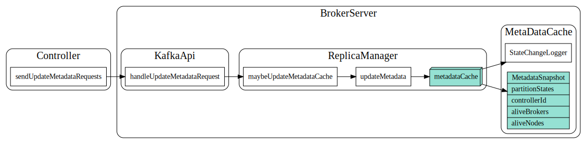
controller和broker之间处理IsrAndLeader请求

controller向broker发送stopReplica请求
Kafka Controller: channelManager
Controller和Broker之间采用队列来做异步通信,有专门的线程负责网络数据收发。
每次broker上线，Conntroller会新建一个RequestSendThread线程，当broker下线时候，会销毁该线程。
Controller和每个broker之间都有个RequestSendThread, Controller 将请求放到broker对应的请求队列中。
在RequestSendThread发送完请求，收到broker的响应之后，通过预先设置好的sendEvent回调，通过eventManager 采用异步的方式通知controller。

Kafka Controller 选举
每个kafka broker启动后, 会去zk中尝试创建ControllerZNode, 如果成功就会当选为controller。然后调用onControllerFailover开始controller的工作
- 从zk中加载数据，刷新controllerContext中的各种cache.
- 在zk中注册broker, topic, patition等zk处理函数.
- 启动channelManager, 建立和其他broker之间通信channel
- 启动PartitionStateMachine和ReplicaStateMachine管理分区和副本状态.
- 启动kafkaScheduler，启动后台调度等
Kafka Controller zk监听
在broker当选为controller之后，controller会在zk上注册一堆的handler， 处理broker/topic/partions等变化
private def onControllerFailover(): Unit = {
info("Registering handlers")
// before reading source of truth from zookeeper, register the listeners to get broker/topic callbacks
val childChangeHandlers = Seq(brokerChangeHandler, topicChangeHandler, topicDeletionHandler, logDirEventNotificationHandler,
isrChangeNotificationHandler)
childChangeHandlers.foreach(zkClient.registerZNodeChildChangeHandler)
val nodeChangeHandlers = Seq(preferredReplicaElectionHandler, partitionReassignmentHandler)
nodeChangeHandlers.foreach(zkClient.registerZNodeChangeHandlerAndCheckExistence)
//...other code
}
Broker
BrokerChangeHandler, 处理broker上线下线

Topic
topic change

topic delete
Isrchange
主要更新controller中的cache，并且controller发送sendUpdateMetadata通知所有的borker更新metadata.
LogDirEvent
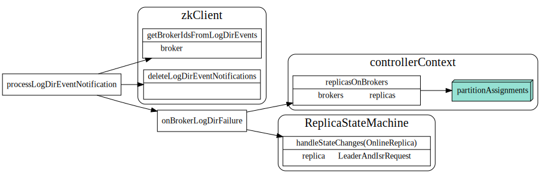
ReplicaLeaderElection
PartitionReassignment
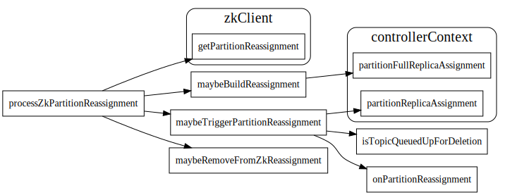
Kafka Replica Assignment
Replica 迁移过程
缩写说明
- RS: replica set 所有的replica set
- AR: add replica, 需要添加的replica
- RR: remove replica, 需要删除的replica
- TRS: target replica set, 要达到目标的replica set
- ORS: target replica set, 原有的replica set
具体迁移过程kafka代码中注释写的比较详细, 主要分为俩个阶段:
Phase A
如果AR没有在partition的ISR中，controller会发送NewReplica请求给AR的broker, 这些broker开始调用 replicaManager的makeFollowers, 启动Replicafetch线程和parititon leader同步，达到in-sync条件后，partition leader会将该broker加入到ISR中。
然后会触发controller在zk中注册的handler,开始下一步的迁移
Phase B
删除RR中的replica, 更新zk, 如果leader不在TRS中，controller需要发送LeaderAndIsr request给broker, 指定新的leader.
* Phase A (when TRS != ISR): The reassignment is not yet complete
*
* A1. Bump the leader epoch for the partition and send LeaderAndIsr updates to RS.
* A2. Start new replicas AR by moving replicas in AR to NewReplica state.
*
* Phase B (when TRS = ISR): The reassignment is complete
*
* B1. Move all replicas in AR to OnlineReplica state.
* B2. Set RS = TRS, AR = [], RR = [] in memory.
* B3. Send a LeaderAndIsr request with RS = TRS. This will prevent the leader from adding any replica in TRS - ORS back in the isr.
* If the current leader is not in TRS or isn't alive, we move the leader to a new replica in TRS.
* We may send the LeaderAndIsr to more than the TRS replicas due to the
* way the partition state machine works (it reads replicas from ZK)
* B4. Move all replicas in RR to OfflineReplica state. As part of OfflineReplica state change, we shrink the
* isr to remove RR in ZooKeeper and send a LeaderAndIsr ONLY to the Leader to notify it of the shrunk isr.
* After that, we send a StopReplica (delete = false) to the replicas in RR.
* B5. Move all replicas in RR to NonExistentReplica state. This will send a StopReplica (delete = true) to
* the replicas in RR to physically delete the replicas on disk.
* B6. Update ZK with RS=TRS, AR=[], RR=[].
* B7. Remove the ISR reassign listener and maybe update the /admin/reassign_partitions path in ZK to remove this partition from it if present.
* B8. After electing leader, the replicas and isr information changes. So resend the update metadata request to every broker.
*
* In general, there are two goals we want to aim for:
* 1. Every replica present in the replica set of a LeaderAndIsrRequest gets the request sent to it
* 2. Replicas that are removed from a partition's assignment get StopReplica sent to them
*
* For example, if ORS = {1,2,3} and TRS = {4,5,6}, the values in the topic and leader/isr paths in ZK
* may go through the following transitions.
* RS AR RR leader isr
* {1,2,3} {} {} 1 {1,2,3} (initial state)
* {4,5,6,1,2,3} {4,5,6} {1,2,3} 1 {1,2,3} (step A2)
* {4,5,6,1,2,3} {4,5,6} {1,2,3} 1 {1,2,3,4,5,6} (phase B)
* {4,5,6,1,2,3} {4,5,6} {1,2,3} 4 {1,2,3,4,5,6} (step B3)
* {4,5,6,1,2,3} {4,5,6} {1,2,3} 4 {4,5,6} (step B4)
* {4,5,6} {} {} 4 {4,5,6} (step B6)
*
* Note that we have to update RS in ZK with TRS last since it's the only place where we store ORS persistently.
* This way, if the controller crashes before that step, we can still recover.
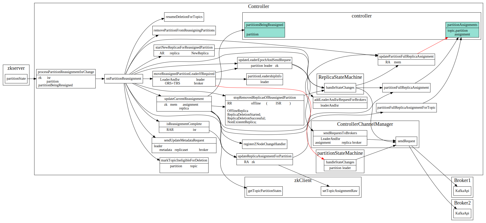
Kafka partition/replica state machine
Replica 状态机
replica 状态入口

Partition 状态机
partition 状态入口

Txn coordinator
kafka streams中实现exactly once处理 read process write cycle
KafkaProducer producer = createKafkaProducer(
“bootstrap.servers”, “localhost:9092”,
“transactional.id”, “my-transactional-id”);
producer.initTransactions();
KafkaConsumer consumer = createKafkaConsumer(
“bootstrap.servers”, “localhost:9092”,
“group.id”, “my-group-id”,
"isolation.level", "read_committed");
consumer.subscribe(singleton(“inputTopic”));
while (true) {
ConsumerRecords records = consumer.poll(Long.MAX_VALUE);
producer.beginTransaction();
for (ConsumerRecord record : records)
producer.send(producerRecord(“outputTopic”, record));
producer.sendOffsetsToTransaction(currentOffsets(consumer), group);
producer.commitTransaction();
}
Dataflow
Transactions in Apache Kafka中从整体上介绍了kafka中的事务处理流程, 摘抄如下：
- 在A中producer和txn coordinator交互，获取唯一producerId，注册涉及到的partition等。主要发送请为InitProducerId, AddPartitionsToTxn, AddOffsetsToPartitions
- 在B中txn coordinator将事务各种状态写入日志中。
- 在C中producer正常向各个topic paritition写数据。
- 在D中coordinator开始两阶段提交，coordinator确保每个paritition将WriteMark写入成功。

FindCoordinator
首先producer发送FindCoordinator请求找到transcationId对应的coordinator. transactionId由client端提供，保证唯一性。 服务端会根据transactionId做hash，分配到相应的topic state 的paritition 中。 该parition 的leader即为这个事务的coordinator.
InitProducerId
生成全局唯一producerId, 每个transactionId对应着一个TransactionMetadata, 其中的topicPartitions 该事务涉及到的topic partition set.
服务端生成ProducerID时候，有个producerManager每次向zk申请一段的producerId区间，请求来了，先用改区间的id，如果用完了 就像zk再申请。这里面使用了expect zk version 来做分布式控制。避免申请的block被其他的txn coordinator覆盖了。
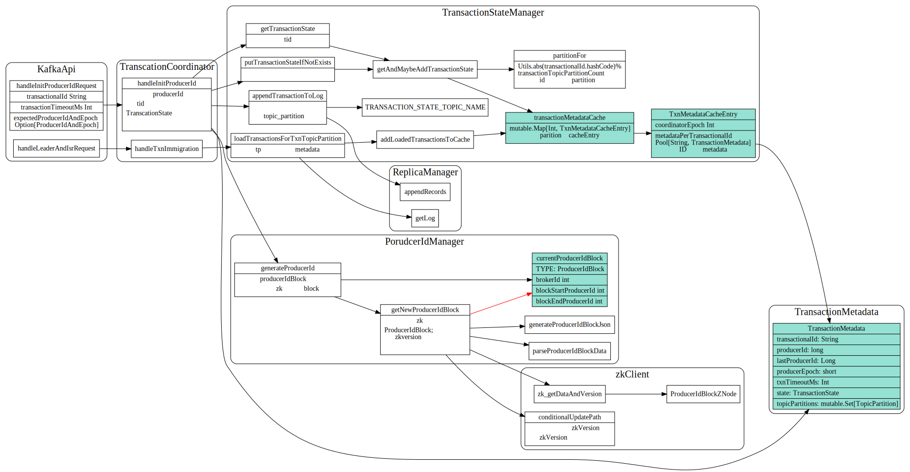
AddPartitionsToTxn
向事务添加Partitions, 或者提交当前消费的offset, 由于提交offset也是一种写入topic paritition行为，所以这边统一处理了。
endTxn
最后producer发送endTxn请求， commit/abort 事务, coordinator开始两阶段提交。
准备阶段：PrepareCommit/PrepareAbort
将prepareCommit/PrepareAbort写入日志中, 写成功之后，coordinator会保证事务一定会被commit或者abort.
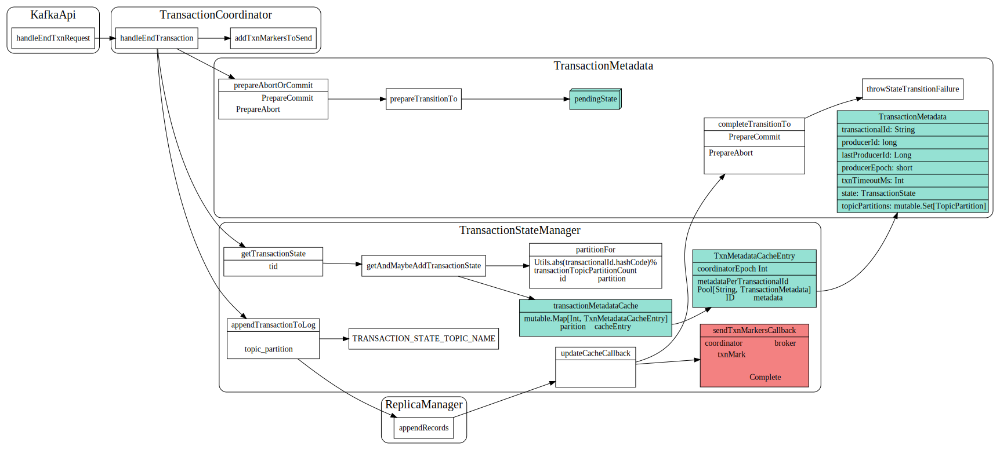
提交阶段
prepareCommit/preapreAbort日志写入成功后调用sendTxnMarkersCallback, coordinator 向事务中涉及到的broker发送WriteTxnMarker 请求，coordinator会一直尝试发送直到成功。
所有broker都响应成功后，会写入日志，并迁移到complete状态。
SendTxnMarkers将请求放入队列中, 有个单独的InterBrokerThread线程负责从队列, 以及处理失败的队列中取出这些消息，然后将相同broker的请求batch起来，统一发送。
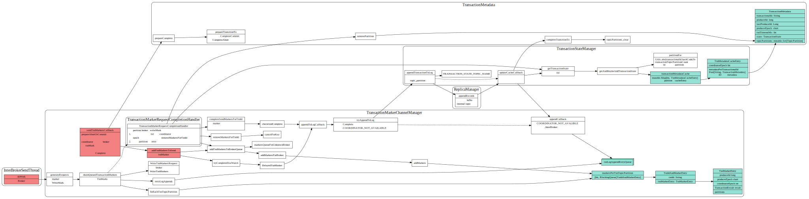
broker对WriteMarkers请求的处理

TxnImmigration
txn coordinator partition leader发生了变化，新的leader读取事务日志，加载到内存中，保存在变量transactionMetadataCache中.
对于PrepareCommit/PrepareAbort状态的事务会重新SendTxnMarkers请求

事务状态机迁移
状态迁移时候先prepareTransionTo 设置要转移到的Metadata状态, 然后调用appendTransactionToLog将事务写入日志，日志写入成功后
调用completeTransitionTo 迁移到目标状态
事务日志消息格式
事务日志中消息格式如下, 启动了log compaction
Ref
- Transactions in Apache Kafka
- Transactional Messaging in Kafka
- Exactly Once Delivery and Transactional Messaging in Kafka
- Transactional Messaging in Kafka
- Kafka 事务实现原理
- Kafka设计解析8
Draft: Stream
StreamGraphNode

Processor

ProcessorContext

Stream start

Questions
- DAG图是怎么建立起来的。
- Kafka怎么调度DAG？怎么在不同线程，不同机器上部署？
- DAG节点之间是怎么通信的？单纯通过kafka topic ?
- 怎么处理节点之间的依赖关系的?
- Stream中的localstate, sharestate是怎么搞得，怎么保证故障恢复的。状态存储实现快速故障恢复和从故障点继续处理
- Window join 具体指的是啥
- KStream和KTable在kafka中是怎么表示的。
- Kafka中的window有哪些？分别是怎么实现的？
- through方法提供了类似Spark的Shuffle机制，为使用不同分区策略的数据提供了Join的可能
KTable, KStream, KGroupedTable
StreamsBuilder
StreamGraphNode; GlobalStoreNode; StateStoreNode; storeBuilder
writeToTopology
map/filter/groupBy/join(leftJoin, outerJoin) queryableStoreName;
context.getStateStore
kafka Stream的并行模型中，最小粒度为Task，而每个Task包含一个特定子Topology的所有Processor。因此每个Task所执行的代码完全一样，唯一的不同在于所处理的数据集互补。
这里要保证两个进程的StreamsConfig.APPLICATION_ID_CONFIG完全一样。因为Kafka Stream将APPLICATION_ID_CONFIG作为隐式启动的Consumer的Group ID。只有保证APPLICATION_ID_CONFIG相同，才能保证这两个进程的Consumer属于同一个Group，从而可以通过Consumer Rebalance机制拿到互补的数据集。
State store被用来存储中间状态。它可以是一个持久化的Key-Value存储，也可以是内存中的HashMap，或者是数据库。Kafka提供了基于Topic的状态存储。
Topic中存储的数据记录本身是Key-Value形式的，同时Kafka的log compaction机制可对历史数据做compact操作，保留每个Key对应的最后一个Value，从而在保证Key不丢失的前提下，减少总数据量，从而提高查询效率。
Ref
- Kafka设计解析（七）- Kafka Stream
- Kafka Streams开发者指南
- Kafka Streams Internal: TaskManager
- Kafka Streams Architecture
leveldb
记录一些学习leveldb源码笔记
https://github.com/google/leveldb
struct and alg
skiplist
skiplist 应用的非常广泛，O(log n)的查找复杂度, O(log n)的查找复杂度, 下图是wiki上找到的示意图


ref
[1] https://en.wikipedia.org/wiki/Skip_list
Draft
数据结构之间引用关系
- Cache
- Table
- VersionSet
- Env
DB Get
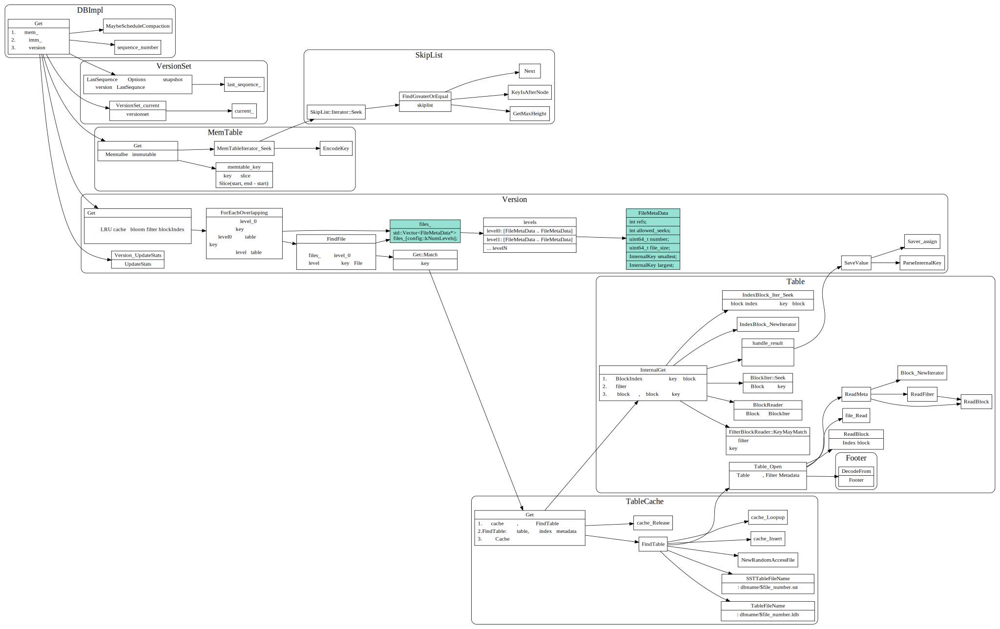
DB Put
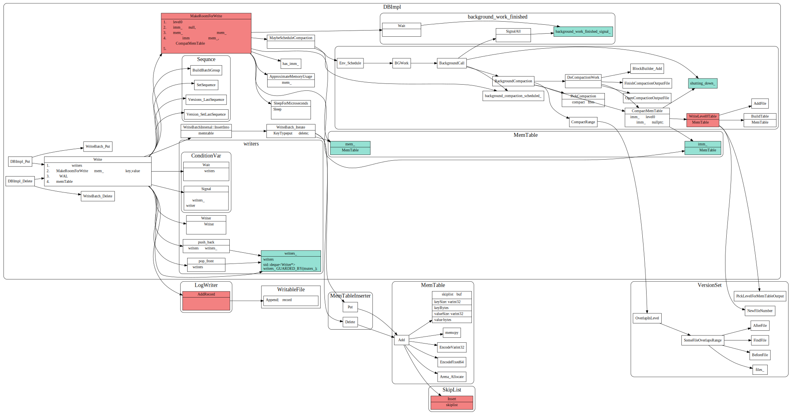
DB Compact

Table builder
memtable写入文件过程

table format
- restart point的作用是啥？
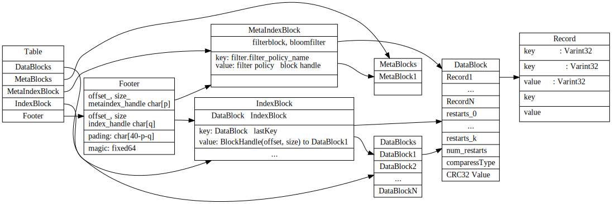
VersionSet

Manifest文件
VersionEdit
TODO:
WAL日志
Iterator
Bloom Filter
Ref
代码及模块间关系
具体细节
LevelDB Write 流程
数据写入流程
leveldb中数据写入流程如下:
- 首先会将kv batch写入日志中，如果宕机了，能从日志中恢复过来，由于采用顺序写的方式，速度很快。
- 确保memtable的空间足够（没有超过一定大小限制），如果memtable没足够空间了，会新建一个memtable, 并将老的memtable转为 immtable，然后由后台压缩线程将immtable写入到level 0 文件。如果level 0 文件个数超过限制，也会触发background 压缩线程。
- 将kv batch插入memtable中, memtable的底层实现为skiplist, 插入时间复杂度为O(Log(n)),每个key,value插入都有自己的sequnceNumber. 用来控制版本号.
写入细节
- 由MakeRoomsForWrite来保证memtable空间足够写入新的kv，如果immtable正在等待被写到文件中，或者level0文件个数超过阈值了，则需要阻塞等待后台线程处理完毕。由
backgroup_work_finished_signal_condvar控制。 - 多线程写入时候，有个
writes_队列做并发控制, writes_队列也使用condvar来控制，writes_队列开头的writer写完后，触发condvar，下个writer线程接着写。 - immtable由
CompactMemtable写入level 0文件 - 后台线程压缩时候，先使用
PickCompaction选择需要合并压缩的sstable文件，然后使用DoCompactionWork做归并排序合并。 - 每次写入都会更新versionSet的LastSequnceNumber，用于版本控制,Sequnce越大，表明key,value值越新。
WAL 日志写入

WAL 日志恢复

LevelDB Read流程
数据读取流程
- 根据key和options中snapshot 拼接为looupKey
- 现在MemTable中查找，然后再immutable中查找，最后到level文件中查找。
- 通过version中的
files_可以获得当前version中所有level file的列表。 - level0中的文件key range有重叠，所有要每个文件都搜索。
- 其他level的通过fileMeta中记录的key range，定位到相应的sstable file.
- 文件操作：先从cache中查找，是否sstable的datablock index和bloomfilter已在内存中，如果不在的话，加载这些到内存中。cache以LRU方式来更新，淘汰。
- 先从datablock index中定位到相应的datablock和bloom filter,通过bloom filter快速查看key是否不存在，避免不必要的文件操作。
- 文件操作: 读取datablock到内存中，做二分查找, 将datablock放到缓存中。

读取细节
涉及到的模块说明:
- VersonSet负责维护version信息。
- 每个version中的
file_数据成员，维护了每个层级的FileMetaData. - 每个FileMetadata记录了该file的最大值和最小值，方便查找key,value时候，快速定位。
- TableCache封装了Table和LRUCache逻辑。
- Table封装了table加载，查找等逻辑。
SSTable 文件格式和读写
Table format
table文件分为Foot,metadataindex, dataIndex, metadat block, datablock这几块。
- Footer 48个字节，以Magic number为结尾。存储了指向metaDataIndex和DataIndex的BlockHandle（offset, size)
- MetaBlock存储了bloomfilter 相关数据
- DataIndexBlock 存储了每个block的lastKey，value为Datablock的blockHanle(offset和size)
- MetaIndexBlock 中也是key,value形式，key为
filter.filter_policy_name，value为filterblockHandle, 当前只有bloomFilter - RestartPoint用于记录key shared共同前缀开始的位置。
- 每个DataBlock/IndexBlock除了原始数据，还包含了compressType(是否压缩）以及CRC32用于校验。
Table write 流程
Table 读取流程
TableOpen中会读取文件的Footer, 读取indexBlock以及解析Metadatablock.

Versionset和Manifest
Manifest文件写入
version记录了当前每个level的各个文件的FileMetadata.
在压缩时候，每个level的FileMetadata可能会更改, 这种修改是用VersionEdit来表示的, 每次修改会将VersionEdit Encode写入日志中, 方便崩溃时候能够从Manifest日志文件中恢复。

Recover
Current文件内容记录了当前的manifest文件, 在DBOpen时候会去加载Mainfest文件，然后读取每个versionEditRecord 将它Decode为VersionEdit，然后一个个的apply，最终得到最后的version, 最后加入到VersionSet中。
遗留问题： SequenceNumber和FilNumber这些是怎么保存的？
Compact
PickCompaction
选择要合并compact的FileMetaData
多路归并Compact
将选择好的FilemetaData合并，输出到level+1层。通过versionEdit更改Version.
Iterator 迭代器
Iterator 继承关系

BlockIter
Table中某个BlockData数据块的iter, 这里面有意思的restartPointer, restartPointer指向的record, key没有共享部分。 所以Seek时候先通过SeekToRestartPoint，找到合适的RestartPoint点，然后再使用ParseNextKey迭代遍历。

LevelFileNumIterator
用于遍历一组FileMetadat中定位target所在的FileMeta Index, 在TwoLevelIterator中作为index iter使用。
TwoLevelIterator
双层迭代器，先通过index找到对应的block，调用block_function创建相应的block iterator.
增加了SkipEmptyData检查，当一个blockIter迭代完后，自动切换到下一个block iter.
TwoLevelIterator可以套娃:
- IndexBlockIter和DataBlockIter套在一起得到一个TableIterator
- LevelFileNumIterator和TableIterator套在一次，得到某一层的Iterator.
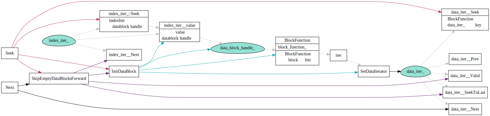
MergingIterator
归并N个有序的iterator.

DBImpl::NewIterator
- 内存中的mm_和imm_分别作为一路iter，放到merging iter中
- level0层由于table文件之间有overlap的，所以每个level0对应tableIterator作为一路放在merging itertor中。
- level1 ~ levenN层 LevelFileumIterator和TableIterator通过TwoLevelIterator套在一起，得到某一层的iterator.

Bloom filter
filer policy
leveldb中filter用于快速确定key是否不在table中, 一堆key经过一系列的hash计算后，可以得到 很小指纹数据。查询时候，可以根据这个指纹信息，快速排除key不存在的情况。

计算keys对应的指纹数据：
for (int i = 0; i < n; i++) {
// Use double-hashing to generate a sequence of hash values.
// See analysis in [Kirsch,Mitzenmacher 2006].
uint32_t h = BloomHash(keys[i]);
const uint32_t delta = (h >> 17) | (h << 15); // Rotate right 17 bits
for (size_t j = 0; j < k_; j++) {
const uint32_t bitpos = h % bits;
array[bitpos / 8] |= (1 << (bitpos % 8));
h += delta;
}
match过程:
uint32_t h = BloomHash(key);
const uint32_t delta = (h >> 17) | (h << 15); // Rotate right 17 bits
for (size_t j = 0; j < k; j++) {
const uint32_t bitpos = h % bits;
if ((array[bitpos / 8] & (1 << (bitpos % 8))) == 0) return false;
h += delta;
}
return true;
filter数据写入和读取流程
写入流程
每个table的block数据的filter数据是写在一块的，通过一个filter_offsets来保存每个datablock对应的filter
在整个filter数据中的偏移和大小。
TableBuilder时候，每次开始新的一个datablock，都会调用filter的start new block， 然后Add Key，value时候，调用 AddKey, 创建key的指纹数据。
最后Table finish时候，写入filter data block数据，并且在metaindexblock中添加filter_policy_name和filter data block handle
读取流程
每个talbe Get时候，会使用ReadFilter加载该table的所有filterdata, 然后根据blockData的offset 找到该block对应的 filter数据，并使用该数据来判断key是不是不存在。
RocksDB
Draft
Class之间关系
Write
- 最终怎么写到了memTable中。
- WAL写的流程是什么样？

WriteBatch

ColumnFamily
- Blob 中value和key是怎么对的上的？
- 数据结构之间怎么串起来的。
Write Thread
Writer的状态
write thread过程 Write group leader 负责写入WAL日志。 memtable可能由group leader写，也有可能由各个writer 并发写。
write thread是对写线程的抽象
write impl
PreprocessWrite
后台压缩
MaybeScheduleFlushOrCompaction

后台线程压缩
compaction job之间是怎么划分的？怎么让不同线程去compact不同部分？

compaction picker
level compaction picker
以下两张图摘自facebook wiki leveled-compaction


Column Family
- 每个columnFamily有单独的Version, memtable以及imm memtable list
- VersionStorageInfo 存储了属于该version的所有Filemetadata信息
- 读取时候，先从columnFaimly的memTable，然后imm list，然后version 中的各个level的文件
- 写时候，先写WAl日志，然后插入到memtable中，memtable在满时候，会转到imm list中, 然后由 后台线程flush到level0, 后台线程compact.
rocks db中主要数据结构关系如下：
数据结构之间引用细节如下：

Write Ahead Log
WriteBatch
put/delete等操作先写入writeBatch中
writeBatch中Record类型如下:
// WriteBatch::rep_ :=
// sequence: fixed64
// count: fixed32
// data: record[count]
enum ValueType : unsigned char {
kTypeDeletion = 0x0,
kTypeValue = 0x1,
kTypeMerge = 0x2,
kTypeLogData = 0x3, // WAL only.
kTypeColumnFamilyDeletion = 0x4, // WAL only.
kTypeColumnFamilyValue = 0x5, // WAL only.
kTypeColumnFamilyMerge = 0x6, // WAL only.
kTypeSingleDeletion = 0x7,
kTypeColumnFamilySingleDeletion = 0x8, // WAL only.
kTypeBeginPrepareXID = 0x9, // WAL only.
kTypeEndPrepareXID = 0xA, // WAL only.
kTypeCommitXID = 0xB, // WAL only.
kTypeRollbackXID = 0xC, // WAL only.
kTypeNoop = 0xD, // WAL only.
kTypeColumnFamilyRangeDeletion = 0xE, // WAL only.
kTypeRangeDeletion = 0xF, // meta block
kTypeColumnFamilyBlobIndex = 0x10, // Blob DB only
kTypeBlobIndex = 0x11, // Blob DB only
// When the prepared record is also persisted in db, we use a different
// record. This is to ensure that the WAL that is generated by a WritePolicy
// is not mistakenly read by another, which would result into data
// inconsistency.
kTypeBeginPersistedPrepareXID = 0x12, // WAL only.
// Similar to kTypeBeginPersistedPrepareXID, this is to ensure that WAL
// generated by WriteUnprepared write policy is not mistakenly read by
// another.
kTypeBeginUnprepareXID = 0x13, // WAL only.
kMaxValue = 0x7F // Not used for storing records.
};
MemtableInserter
MemTableInsertor 遍历writeBatch，将记录插入到memtable中,使用MemTableRep封装了skiplist和VectorRep这两种类型的memtable;

WriteToWAL
日志会被分片为固定大小kBlocksize, 太小的会被填充padding,太大的会被切分为first/mid/last等分片record
固定大小这个有什么优势吗？

RocksDB Write流程
WriteBatch
PreprocessWrite
schedule flush
schedule flush, 将满的memtable转变为immtable, 加到flush_schedule_队列中
由BackgrounFlush将immtable刷到dish上。
Write thread
Writer的状态
write 相关struct之间引用关系
Backgroud flush and compaction
MaybeScheduleFlushOrCompaction
MaybeScheduleFlushOrCompaction会使用线程池调度，最后在后台线程中调用BackgroundFlush
和BackgrondCompaction分别做memtable的flush和ssfile的compaction.
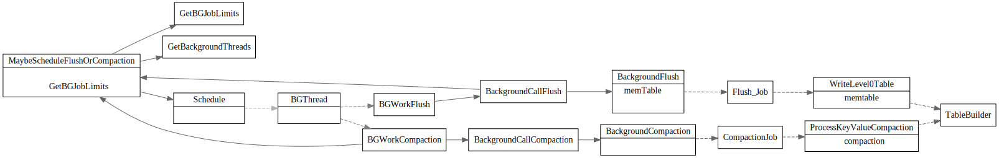
后台线程调度Schedule

后台线程flush
生成flushRequest放入flush队列中
向flush_queue_中放入FlushRequest的数据流程如下:
具体函数调用细节如下：
后台线程处理flush队列中请求
后台线程执行BackgroundFlush从flush_queue_中取出FlushRequest转换为FlushJob.

cfd会被flush的条件
bool MemTableList::IsFlushPending() const {
if ((flush_requested_ && num_flush_not_started_ > 0) ||
(num_flush_not_started_ >= min_write_buffer_number_to_merge_)) {
assert(imm_flush_needed.load(std::memory_order_relaxed));
return true;
}
return false;
}
最终调用WriteLevel0Table 将memtable写入磁盘中，具体调用关系如下:

后台线程compact
cfd放入compact队列
处理compact队列，生成compactionJob
后台线程会通过PickCompactionFromQueue 去compaction_queue_中取出需要compact的ColumnFamilyData,
然后调用ComlumnFamilyData的PickCompaction 选择compactio的input level, output leve, 以及input files等，
多线程并发compact
在compact Prepare中会将compactJob划分为不同的SubCompactionState，然后由多线程并发执行压缩

Compaction Picker
三种compaction style
Level Style Compaction
Universal Style Compaction
FIFO Style Compaction
Compaction Picker
Compaction生成流程:
- SetupInitialFiles 选择要compaction的level和input files
- SetupOtherL0FilesIfNeeded和SetupOtherInputsIfNeeded补充选择和input files overlap的文件
- 最后GetCompaction 生成最终的Compaction然后重新CompuateScore用于下次Compact
SetupInitialFiles 初始选择的优先级顺序，当前一个选择为空时候，才会去选择下一个:

CompactionScore
TODO拆分为不同的子图

详细调用图如下

Ref
- leveled-compaction: https://github.com/facebook/rocksdb/wiki/Leveled-Compaction
- choose level compaction files: https://github.com/facebook/rocksdb/wiki/Choose-Level-Compaction-Files
read 流程
Questions
SuperVersion ？ 为啥起这个名字？
多级index:
- ColumnFamily 根据Version中的
std::vector<FileMetaData*>定位到具体的Table。 - Table根据
bloom filter快速排出key不存在的case，如果key不存在，避免后续的磁盘操作。 - Table根据
IndexBlock定位到对应的Datablock。 - 根据Datablock数据中的
restartPoint列表二分查找，找到对应的restartPoint偏移, 进一步缩小查找区间。 - 在具体的
restartPoint之间遍历查找具体的key

多级LRU缓存:
- TableCache
- DataBlockCache
- RowCache

详细调用关系：

Blob
Questions:
- PinnableSlice 这个作用是啥
- rocksdb的blob和pingcap的titan之间关系？实现逻辑？
- Blob文件是怎么选择的
Blob将key和value分来开存储。
// A wrapped database which puts values of KV pairs in a separate log
// and store location to the log in the underlying DB.
Blob Log
blob log format

blob index
Open
Blob open
Put
BlobPut

Get
BlobGet
Transaction
Transaction struct

主要数据成员
rocksdb中，每个事务主要有track_keys_和write_batch_这两个数据成员，
track_keys_用于跟踪管理该事务写操作涉及的keywrite_batch_用于记录事务最终的写结果。
所有的悲观事务(pessimistic transaction), 通过txn_db_impl_指针共享 PessimisticTransactionDB，
从而共享全局的TransactionLockMgr,用来统一管理key的lock。
乐观事务
在commit的时候才去检查key的冲突
一些问题：
- 根据什么判断是否有冲突的？貌似是根据sequnceNumber，但是具体细节不太清楚
bucketed_locks_的作用是啥？- CommitWithSerialValidate和 CommitWithParallelValidate这两者区别是啥？
悲观事务
分为三种？
- writeCommitedTxn
WriteCommitted, which means that the data is written to the DB, i.e., the memtable, only after the transaction is committed
- WritePrepared
- WriteUnpreparedTxnDB

参考
Optimistic Transaction
乐观事务在commit前，Write操作只会记录事务有哪些key, 不需要做加锁和key冲突检测，适合事务之间 write key重叠比较低的场景。
乐观事务在write时候，使用tracked_keys, 记录受影响的key以及该key的seq,

在commit时候会遍历该tracked_keys, 对每个key查找当前db中该key的seq，然后和tracked_key中seq比较。
如果数据库中的seq比key的seq新，则认为发生了冲突。
不太理解这里面的min_uncommited 起了什么作用.

遍历TransactionKeyMap, 检查每个key的冲突
Status TransactionUtil::CheckKeysForConflicts(DBImpl* db_impl,
const TransactionKeyMap& key_map,
bool cache_only) {
//other code..
//遍历迭代key_map
for (const auto& key_iter : keys) {
const auto& key = key_iter.first;
const SequenceNumber key_seq = key_iter.second.seq;
result = CheckKey(db_impl, sv, earliest_seq, key_seq, key, cache_only);
if (!result.ok()) {
break;
}
}
}
检查具体某个key的冲突
// min_uncommitted 默认值为 KMaxSequnceNumber
// snap_checker默认值为nullptr;
Status TransactionUtil::CheckKey(DBImpl* db_impl, SuperVersion* sv,
SequenceNumber earliest_seq,
SequenceNumber snap_seq,
const std::string& key, bool cache_only,
ReadCallback* snap_checker,
SequenceNumber min_uncommitted) {
//...other code
SequenceNumber seq = kMaxSequenceNumber;
bool found_record_for_key = false;
// When min_uncommitted == kMaxSequenceNumber, writes are committed in
// sequence number order, so only keys larger than `snap_seq` can cause
// conflict.
// When min_uncommitted != kMaxSequenceNumber, keys lower than
// min_uncommitted will not triggered conflicts, while keys larger than
// min_uncommitted might create conflicts, so we need to read them out
// from the DB, and call callback to snap_checker to determine. So only
// keys lower than min_uncommitted can be skipped.
SequenceNumber lower_bound_seq =
(min_uncommitted == kMaxSequenceNumber) ? snap_seq : min_uncommitted;
// 去数据库中查找key的最新seq
Status s = db_impl->GetLatestSequenceForKey(sv, key, !need_to_read_sst,
lower_bound_seq, &seq,
&found_record_for_key);
if (!(s.ok() || s.IsNotFound() || s.IsMergeInProgress())) {
result = s;
} else if (found_record_for_key) {
bool write_conflict = snap_checker == nullptr
? snap_seq < seq
: !snap_checker->IsVisible(seq);
if (write_conflict) {
result = Status::Busy();
}
}
}
return result;
}
一些问题：
- 根据什么判断是否有冲突的？貌似是根据sequnceNumber，但是具体细节不太清楚
bucketed_locks_的作用是啥？- CommitWithSerialValidate和 CommitWithParallelValidate这两者区别是啥？
- key冲突检测是咋搞的
- 并行和顺序这个是怎么弄的
Transaction lock mgr
TransactionLockMgr 用于管理悲观事务的key lock，所有的悲观事务，通过txn_db_impl->lock_mgr_指针共享
同一个lockmgr
LockMap
rocksdb中对于key lock做了多种优化
- 首先根据ColumnFamilyId, 从LockMaps获得对应的LockMap
- 使用了thread local data来缓存全局的lock maps, 避免每次查询全局的lockmaps需要加锁
- 使用
GetStripe把key做sharding获得相应的LockStripe,降低了锁冲突, 但是在同一个stripe中的key还是有并发等待问题.
size_t LockMap::GetStripe(const std::string& key) const {
assert(num_stripes_ > 0);
return fastrange64(GetSliceNPHash64(key), num_stripes_);
}
GetLockMap封装装了从thread local cache获取lockMap逻辑
std::shared_ptr<LockMap> TransactionLockMgr::GetLockMap(
uint32_t column_family_id) {
// First check thread-local cache
if (lock_maps_cache_->Get() == nullptr) {
lock_maps_cache_->Reset(new LockMaps());
}
auto lock_maps_cache = static_cast<LockMaps*>(lock_maps_cache_->Get());
//首先从thread local cache中查找
auto lock_map_iter = lock_maps_cache->find(column_family_id);
if (lock_map_iter != lock_maps_cache->end()) {
// Found lock map for this column family.
return lock_map_iter->second;
}
//没找到的话，使用mutex访问全局LockMaps
// Not found in local cache, grab mutex and check shared LockMaps
InstrumentedMutexLock l(&lock_map_mutex_);
lock_map_iter = lock_maps_.find(column_family_id);
if (lock_map_iter == lock_maps_.end()) {
return std::shared_ptr<LockMap>(nullptr);
} else {
//插入到thread local cache中，方便下一次访问
// Found lock map. Store in thread-local cache and return.
std::shared_ptr<LockMap>& lock_map = lock_map_iter->second;
lock_maps_cache->insert({column_family_id, lock_map});
return lock_map;
}
}
获取/释放key锁

死锁检测
Two phase commit
Write Commited txn
事务只有在提交之后，才会写入到db的memtable中，事务在数据库中读到的 kv都是提交之后的，这种需要在提交之前把所有的write kv操作保存在内存writeBatch中， 对于大的事务来说，内存是个瓶颈，另一方面，commit时候才集中的写入memtabe，这个延迟可能也无法忽略。

WriteCommited 两阶段提交：
- Prepare阶段 将writebatch 写入WAL日志中,并将writeBatch中内容用
ktypeBeginPrepare(Xid),kTypeEndPrepare(xid)括起来 由于只写到了WAL日志中, 其他事务看不到这个事务的修改 - Commit阶段 向WAL日志写入commit 标记，比如
kTypeCommit(xid)并writeBatch中内容insert到memtable上，写入memtable之后，该事务的修改对其他事务就可以见了。 如果向WAL日志中写入KtypeCommit(xid)日志就挂了的话，下次recover时候，会重新从日志中恢复writeBatch，然后插入到memtabl中。
Status WriteBatchInternal::MarkEndPrepare(WriteBatch* b, const Slice& xid,
bool write_after_commit,
bool unprepared_batch) {
// other code..
// rewrite noop as begin marker
b->rep_[12] = static_cast<char>(
write_after_commit ? kTypeBeginPrepareXID
: (unprepared_batch ? kTypeBeginUnprepareXID
: kTypeBeginPersistedPrepareXID));
b->rep_.push_back(static_cast<char>(kTypeEndPrepareXID));
PutLengthPrefixedSlice(&b->rep_, xid);
// other code..
}
Recover
事务日志会以writeBatch为单位写入到WAL日志中，恢复时MemtableInsetor会去遍历日志中的writeBatch,
将BeginPrepare....EndPrepare(xid)之间的kv操作插入到新的writeBatch中，
在遍历到Commit(xid)时候，将该writeBatch插入到memtable中，完成提交。

Write prepared txn
没有commit，就把数据insert到db中，有以下几个问题需要解决:
- How do we identify the key/values in the DB with transactions that wrote them?
- How do we figure if a key/value written by transaction
Txn_wis in the read snapshot of the reading transactionTxn_r? - How do we rollback the data written by aborted transactions?
在prepare阶段就插入memtalbe中.
CommitCache 用于判断是否提交了

Write unprepared txn
TODO:
- write prepared txn和write unprepared txn这个具体逻辑还不是很清楚，只知道是把commit放到了一个cache里面。
tikv
Draft
TiKV 启动流程
Main 启动过程
- 启动grpc服务
- 启动snapworker, lockmgr, status server, stats pool等 backgroud线程
Get过程
Trait Snapshot 这个定义了get, iter相关read接口
pub trait Snapshot: Send + Clone {
type Iter: Iterator;
fn get(&self, key: &Key) -> Result<Option<Value>>;
fn get_cf(&self, cf: CfName, key: &Key) -> Result<Option<Value>>;
fn iter(&self, iter_opt: IterOptions, mode: ScanMode) -> Result<Cursor<Self::Iter>>;
fn iter_cf(
&self,
cf: CfName,
iter_opt: IterOptions,
mode: ScanMode,
) -> Result<Cursor<Self::Iter>>;
// The minimum key this snapshot can retrieve.
#[inline]
fn lower_bound(&self) -> Option<&[u8]> {
None
}
// The maximum key can be fetched from the snapshot should less than the upper bound.
#[inline]
fn upper_bound(&self) -> Option<&[u8]> {
None
}
/// Retrieves a version that represents the modification status of the underlying data.
/// Version should be changed when underlying data is changed.
///
/// If the engine does not support data version, then `None` is returned.
#[inline]
fn get_data_version(&self) -> Option<u64> {
None
}
}
snapshot的实现者impl
RocksSnapshot
impl Snapshot for RocksSnapshot {
//...
}
RegionSnapshot 在RocksSnapshot上包装了一层？增加了啥功能呀？
impl Snapshot for RegionSnapshot<RocksSnapshot> {
//...
}
Btree放在里面是干啥用的，和rocksdb做对照？
impl Snapshot for BTreeEngineSnapshot {
//...
}
raft
Raft
Leader Election
在raft中，主要有leader, candidate, follower三种状态, 一个cluster只有一个leader, leader负责处理client的写请求，然后 leader将日志push给各个follower。
leader通过心跳机制告诉follower自己还活着，当follower有一段时间没收到leader的心跳后，认为leader已经挂掉后，就转变为candidate， 发起投票请求，尝试成为leader。
term: 任期
在Raft中，任期扮演着逻辑时钟的角色，节点之间的请求和返回中都带上node当前的term。node在处理请求时，发现请求中的term比自己大，就 将自己term 改为该值，如果比自己小，就拒绝请求，并返回带上自己term。
leader发送给follower的心跳中，如果收到了term比自己大的回复，那么leader就知道自己stale了，就会step down.
candidate在发起requestforvote时候，会将自己term +=1 , 然后经过一轮处理后，整个集群term
AppendEntries
AppendEntries 是由leader发送给follower的RPC请求，一方面用于同步日志，另一方面AppendEntries的log entriy可以为空，扮演着心跳的角色， 而心跳用于抑制follower 转变为candidate。
RequestForVote
follower 变为candidate之后，会将自己term + 1, 并且会发送RequestForVote请求给所有成员，开始选举，如果收到了大部分成员的投票，则成为 新的任期的leader。
SplitVote
为了解决有多个candidate 同时发起投票，然后每个candidate获得的选票都达不到大多数的问题，Raft采用了 random election timeout的机制，每个 candidate的election timout是个随机值，可以在很大程度上保证一段时间内只有一个candidate在request for vote
Log Replication
一条日志，只有被复制到cluster中大部分server上时候，才会被认为是commited。被commited日志才能apply 到raft的state machine上。 leader自己的日志只能append,不能rewrite，不然后面的commited index就没啥用了。
leaderr发送给follower的心跳请求中带了当前leaderCommited index， follower根据这个信息来判断一条日志能安全的apply 到statemachine上。
每条日志都有term和index，如果两条日志的term和index是一致的，那么这两条日志就被认为是一致的。 新leader当选后，需要向follower push自己的日志。leader需要找到和follower日志共同的起点，然后从该点同步follower日志。
Leader维护了一个NextIndex数组，NextIndex[i]表示下一次要向follower发送日志的index。

pingcap talent plan raft lab

mit6-824
GFS
Questions
- master 和chunk之间是怎么互相自动发现的？
- master 和chunk之间心跳信息具体内容是啥
- master信息存在哪儿？master挂了？集群都挂？
- Cache怎么解决失效的问题？
- 谁负责写入多个副本？
- 副本的一致性是怎么保证的
- Atomic Append是咋搞的
- 写入流程是怎样的？

ChunkSize
chunksize 64MB的好处
- 减轻client 和master的通信.
- client和chunk server长时间通信,减少需要和多个chunk server网络通信
缺点：
- 小文件只有一个或几个chunk，容易造成成为热点
Metadata
master 相当于一个路由表, master主要存储三种metadata
- the file and chunk namespace
- mapping from files to chunk
- location of each chunk replica 这三个信息都存储在内存中，前两个信息会通过operation log, 持久化存储到磁盘上 信息3没有存在磁盘上，master询问每个chunk server, 来构建这个信息.
写入流程
lease and mutation order
如果修改的区域跨chunk了,上面的lease机制无法保证对多个chunk的修改，有一致的修改顺序。
Atomic record append
这块没怎么看明白，好像是append时候，如果primary发现chunk size不够写，就直接先将当前chunk pad填满，并且
让secondary也pad，填充, 然后让client重试,为了避免过多的碎片，chunk append的record size 现在在maxSize/4
这样就避免了跨chunk写
snapshot
Master operation
- namespace namespace operation
- manages chunk replicas
- placement decisions

Raft
tidb
TiDB 学习资料整理
参考资料
本文主要摘自pingcap 如下几篇blog, 从整体上介绍了tidb/tikv的设计架构，以及为什么要这么设计，为了解决什么问题。 看完后能对tidb有个整体的认识。
TiDb 整体架构

TiDB包含三大核心组件，TiDB/TiKV/PD, 组件之间通过GRPC通信, 各自功能如下：TiDB Operator，让 TiDB 成为真正的 Cloud-Native 数据库
- TiDB Server：主要负责 SQL 的解析器和优化器，它相当于计算执行层，同时也负责客户端接入和交互。
- TiKV Server：是一套分布式的 Key-Value 存储引擎，它承担整个数据库的存储层，数据的水平扩展和多副本高可用特性都是在这一层实现。
- PD Server：相当于分布式数据库的大脑，一方面负责收集和维护数据在各个 TiKV 节点的分布情况，另一方面 PD 承担调度器的角色，根据数据分布状况以及各个存储节点的负载来采取合适的调度策略，维持整个系统的平衡与稳定。
TiDB/TiKV 背后对应的论文基础How do we build TiDB, Google Spanner/F1, Raft.

tidb
tidb开发选择从上往下开发，无缝兼容MYSQL协议。talk is cheap, show me the test，使用了大量的测试用例来保证正确性。

关系模型到 Key-Value 模型的映射
CREATE TABLE User {
ID int,
Name varchar(20),
Role varchar(20),
Age int,
PRIMARY KEY (ID),
Key idxAge (age)
};
每行数据按照如下规则进行编码成 Key-Value pair：
Key: tablePrefix{tableID}_recordPrefixSep{rowID}
Value: [col1, col2, col3, col4]
其中 Key 的 tablePrefix/recordPrefixSep 都是特定的字符串常量，用于在 KV 空间内区分其他数据。 对于 Index 数据，会按照如下规则编码成 Key-Value pair：
Key: tablePrefix{tableID}_indexPrefixSep{indexID}_indexedColumnsValue
Value: rowID
注意上述编码规则中的 Key 里面的各种 xxPrefix 都是字符串常量，作用都是区分命名空间，以免不同类型的数据之间相互冲突，定义如下：
var(
tablePrefix = []byte{'t'}
recordPrefixSep = []byte("_r")
indexPrefixSep = []byte("_i")
)
tikv

TiKV 利用 Raft 来做数据复制，每个数据变更都会落地为一条 Raft 日志，通过 Raft 的日志复制功能，将数据安全可靠地同步到 Group 的多数节点中。 通过单机的 RocksDB，我们可以将数据快速地存储在磁盘上；通过 Raft，我们可以将数据复制到多台机器上，以防单机失效。数据的写入是通过 Raft 这一层的接口写入，而不是直接写 RocksDB。通过实现 Raft，我们拥有了一个分布式的 KV，现在再也不用担心某台机器挂掉了。


MVCC
很多数据库都会实现多版本控制（MVCC），TiKV 也不例外。设想这样的场景，两个 Client 同时去修改一个 Key 的 Value，如果没有 MVCC，就需要对数据上锁，在分布式场景下，可能会带来性能以及死锁问题。 TiKV 的 MVCC 实现是通过在 Key 后面添加 Version 来实现，简单来说，没有 MVCC 之前，可以把 TiKV 看做这样的：
pd
下面问题值得仔细思考。
- 如何保证同一个 Region 的多个 Replica 分布在不同的节点上？更进一步，如果在一台机器上启动多个 TiKV 实例，会有什么问题？
- TiKV 集群进行跨机房部署用于容灾的时候，如何保证一个机房掉线，不会丢失 Raft Group 的多个 Replica？
- 添加一个节点进入 TiKV 集群之后，如何将集群中其他节点上的数据搬过来?
- 当一个节点掉线时，会出现什么问题？整个集群需要做什么事情？如果节点只是短暂掉线（重启服务），那么如何处理？如果节点是长时间掉线（磁盘故障，数据全部丢失），需要如何处理？
- 假设集群需要每个 Raft Group 有 N 个副本，那么对于单个 Raft Group 来说，Replica 数量可能会不够多（例如节点掉线，失去副本），也可能会 过于多（例如掉线的节点又回复正常，自动加入集群）。那么如何调节 Replica 个数？
- 读/写都是通过 Leader 进行，如果 Leader 只集中在少量节点上，会对集群有什么影响？
- 并不是所有的 Region 都被频繁的访问，可能访问热点只在少数几个 Region，这个时候我们需要做什么？
- 集群在做负载均衡的时候，往往需要搬迁数据，这种数据的迁移会不会占用大量的网络带宽、磁盘 IO 以及 CPU？进而影响在线服务？
作为一个分布式高可用存储系统，必须满足的需求，包括四种：
- 副本数量不能多也不能少
- 副本需要分布在不同的机器上
- 新加节点后，可以将其他节点上的副本迁移过来
- 节点下线后，需要将该节点的数据迁移走
作为一个良好的分布式系统，需要优化的地方，包括：
- 维持整个集群的 Leader 分布均匀
- 维持每个节点的储存容量均匀
- 维持访问热点分布均匀
- 控制 Balance 的速度，避免影响在线服务
- 管理节点状态，包括手动上线/下线节点，以及自动下线失效节点
TiDB Server Main Loop
跟着官方的tidb源码阅读博客，看了TiDB main函数，大致了解了一个SQL的处理过程
conn accept
下图显示了TiDB中Accept一个mysql连接的处理流程，对于每个新的conn, TiDB会启动一个goroutine来处理这个conn, 并按照Mysql协议，处理不同的mysql cmd。
对于Query语句，会session.Execute生成一个执行器，返回一个resultSet, 最后调用writeResultset, 从ResultSet.Next中获取结果，然后将结果返回给客户端。
处理conn loop
// Run reads client query and writes query result to client in for loop, if there is a panic during query handling,
// it will be recovered and log the panic error.
// This function returns and the connection is closed if there is an IO error or there is a panic.
func (cc *clientConn) Run(ctx context.Context) {
//other code..
for {
// other code ...
data, err := cc.readPacket()
// other code ...
if err = cc.dispatch(ctx, data); err != nil {
// other code ...
}
// other code ...
}
}
cmd dispatch
// dispatch handles client request based on command which is the first byte of the data.
// It also gets a token from server which is used to limit the concurrently handling clients.
// The most frequently used command is ComQuery.
func (cc *clientConn) dispatch(ctx context.Context, data []byte) error {
//other code ...
cmd := data[0]
data = data[1:]
//other code ...
dataStr := string(hack.String(data))
switch cmd {
case mysql.ComQuery: // Most frequently used command.
if len(data) > 0 && data[len(data)-1] == 0 {
data = data[:len(data)-1]
dataStr = string(hack.String(data))
}
return cc.handleQuery(ctx, dataStr)
//other case ...
}
}
SQL Execute
TiDB中SQL执行过程如下
SQL Plan Optimize: 制定查询计划以及优化
SQL build executor
根据plan生成相应的executor
Executor interface如下, 使用了Volcano模型，接口用起来和迭代器差不多，采用Open-Next-Close套路来使用。
// Executor is the physical implementation of a algebra operator.
//
// In TiDB, all algebra operators are implemented as iterators, i.e., they
// support a simple Open-Next-Close protocol. See this paper for more details:
//
// "Volcano-An Extensible and Parallel Query Evaluation System"
//
// Different from Volcano's execution model, a "Next" function call in TiDB will
// return a batch of rows, other than a single row in Volcano.
// NOTE: Executors must call "chk.Reset()" before appending their results to it.
type Executor interface {
base() *baseExecutor
Open(context.Context) error
Next(ctx context.Context, req *chunk.Chunk) error
Close() error
Schema() *expression.Schema
}
executor Next
handleNoDelay
不需要返回结果的立即执行

RecordSet driver

// RecordSet is an abstract result set interface to help get data from Plan.
type RecordSet interface {
// Fields gets result fields.
Fields() []*ast.ResultField
// Next reads records into chunk.
Next(ctx context.Context, req *chunk.Chunk) error
// NewChunk create a chunk.
NewChunk() *chunk.Chunk
// Close closes the underlying iterator, call Next after Close will
// restart the iteration.
Close() error
}
RecordSet Next方法接口的实现.
// Next use uses recordSet's executor to get next available chunk for later usage.
// If chunk does not contain any rows, then we update last query found rows in session variable as current found rows.
// The reason we need update is that chunk with 0 rows indicating we already finished current query, we need prepare for
// next query.
// If stmt is not nil and chunk with some rows inside, we simply update last query found rows by the number of row in chunk.
func (a *recordSet) Next(ctx context.Context, req *chunk.Chunk) error {
err := Next(ctx, a.executor, req)
if err != nil {
a.lastErr = err
return err
}
numRows := req.NumRows()
if numRows == 0 {
if a.stmt != nil {
a.stmt.Ctx.GetSessionVars().LastFoundRows = a.stmt.Ctx.GetSessionVars().StmtCtx.FoundRows()
}
return nil
}
if a.stmt != nil {
a.stmt.Ctx.GetSessionVars().StmtCtx.AddFoundRows(uint64(numRows))
}
return nil
}
在writeResult时候不断调用RecordSet的Next方法，去驱动调用executor的Next;
// writeChunks writes data from a Chunk, which filled data by a ResultSet, into a connection.
// binary specifies the way to dump data. It throws any error while dumping data.
// serverStatus, a flag bit represents server information
func (cc *clientConn) writeChunks(ctx context.Context, rs ResultSet, binary bool, serverStatus uint16) error {
data := cc.alloc.AllocWithLen(4, 1024)
req := rs.NewChunk()
//...
for {
// Here server.tidbResultSet implements Next method.
err := rs.Next(ctx, req)
/...
rowCount := req.NumRows()
//...
for i := 0; i < rowCount; i++ {
data = data[0:4]
/...
if err = cc.writePacket(data); err != nil {
return err
}
//...
}
}
return cc.writeEOF(serverStatus)
}
schema
Plan
hash join executor
hash join

TiDB Schema
schema 作用
TiDB中的映射
CREATE TABLE User {
ID int,
Name varchar(20),
Role varchar(20),
Age int,
PRIMARY KEY (ID),
Key idxAge (age)
};
映射为如下的kv
Key: tablePrefix{tableID}_recordPrefixSep{rowID}
Value: [col1, col2, col3, col4]
对于index数据映射如下:
Key: tablePrefix{tableID}_indexPrefixSep{indexID}_indexedColumnsValue
Value: rowID
unique index 数据映射如下:
Key: tablePrefix{tableID}_indexPrefixSep{indexID}_indexedColumnsValue_rowID
Value: null
涉及模块说明tidb源码概览
- infoschema: SQL 元信息管理模块，另外对于 Information Schema 的操作，都会访问这里
- meta: 利用 structure 包提供的功能，管理存储引擎中存储的 SQL 元信息，infoschema/DDL 利用这个模块访问或者修改 SQL 元信息
- model: SQL 元信息数据结构，包括 DBInfo / TableInfo / ColumnInfo / IndexInfo 等
- structure: 在 Transactional KV API 上定义的一层结构化 API，提供 List/Queue/HashMap 等结构
Shema 数据结构
TiDB 使用Schema来将关系数据库中的table/index等映射到TiKV的kv存储中。 Schema本身也是以kv的形式保存在TiKV中的。 TiDB是无状态的，而且在TiDB内存中也加载这一份Schema。所以存在schema异步更新的问题。

Schema 存储/加载/修改
Schema在kv中的存储形式如下
// Meta structure:
// NextGlobalID -> int64
// SchemaVersion -> int64
// DBs -> {
// DB:1 -> db meta data []byte
// DB:2 -> db meta data []byte
// }
// DB:1 -> {
// Table:1 -> table meta data []byte
// Table:2 -> table meta data []byte
// TID:1 -> int64
// TID:2 -> int64
// }
//
schema 加载
schema 修改
DDL（Data Definition Language): statements are used to define the database structure or schema. DDL statements create, modify, and remove database objects such as tables, indexes, and users.
创建/修改/删除 schema逻辑如下:

Schema state
online schema change
DDL Job
TiDB 在同一时刻，只允许一个节点执行 DDL 操作。用户可以把多个 DDL 请求发给任何 TiDB 节点，但是所有的 DDL 请求在 TiDB 内部是由 owner 节点的 worker 串行执行的。
- worker：每个节点都有一个 worker 用来处理 DDL 操作。
- owner：整个集群中只有一个节点能当选 owner，每个节点都可能当选这个角色。当选 owner 后的节点 worker 才有处理 DDL 操作的权利。owner 节点的产生是用 Etcd 的选举功能从多个 TiDB 节点选举出 owner 节点。owner 是有任期的，owner 会主动维护自己的任期，即续约。当 owner 节点宕机后，其他节点可以通过 Etcd 感知到并且选举出新的 owner。
以上内容摘自4
JobQueue
Owner election
Table
table interface
TableID的分配
tableID，PhyicalID
从table 到kv
var (
tablePrefix = []byte{'t'}
recordPrefixSep = []byte("_r")
indexPrefixSep = []byte("_i")
)
// GenTableRecordPrefix composes record prefix with tableID: "t[tableID]_r".
func GenTableRecordPrefix(tableID int64) kv.Key {
buf := make([]byte, 0, len(tablePrefix)+8+len(recordPrefixSep))
return appendTableRecordPrefix(buf, tableID)
}
// GenTableIndexPrefix composes index prefix with tableID: "t[tableID]_i".
func GenTableIndexPrefix(tableID int64) kv.Key {
buf := make([]byte, 0, len(tablePrefix)+8+len(indexPrefixSep))
return appendTableIndexPrefix(buf, tableID)
}
// GenTablePrefix composes table record and index prefix: "t[tableID]".
func GenTablePrefix(tableID int64) kv.Key {
buf := make([]byte, 0, len(tablePrefix)+8)
buf = append(buf, tablePrefix...)
buf = codec.EncodeInt(buf, tableID)
return buf
}
table的增删改查
AddRecord
UpdateRecord
RemoveRecord
IterRecords

ClickHouse
Server Main
Server main 主流程
主循环
首先监听端口号，等待客户端连接， 和客户端建立连接后,server然后不断从conn中读取packet, 解析sql语句为AST树，然后创建plan pipeline 最后执行plan，将result set通过网络发送给客户端.

SQL 解析执行流程
一条Query SQL在clickhouse中执行流程如下:

Parse SQL
解析SQL，解析为AST树，然后创建对应的pipeline plan.

SelectQuery
执行Select Query , 创建QueryPlan

QueryPlanStep

IProcessor
Processor is an element (low level building block) of a query execution pipeline. It has zero or more input ports and zero or more output ports.
Blocks of data are transferred over ports. Each port has fixed structure: names and types of columns and values of constants.
src/Processors/IProcessor.h
IProcessor 继承关系图
CK中Iprocessor的继承关系图
class IProcessor
{
protected:
InputPorts inputs;
OutputPorts outputs;
}

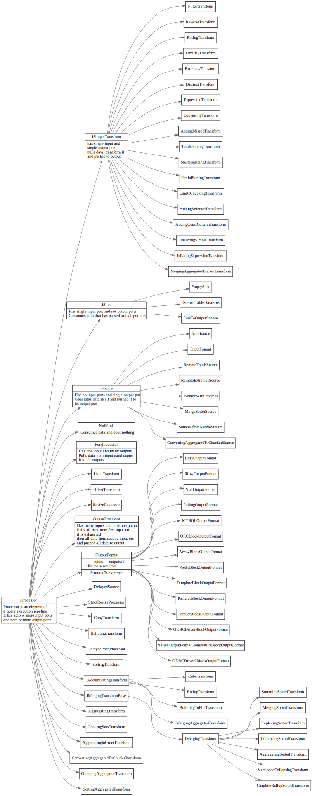
Executor: 执行pipeline
PipelineExecutor
使用线程池执行pipline
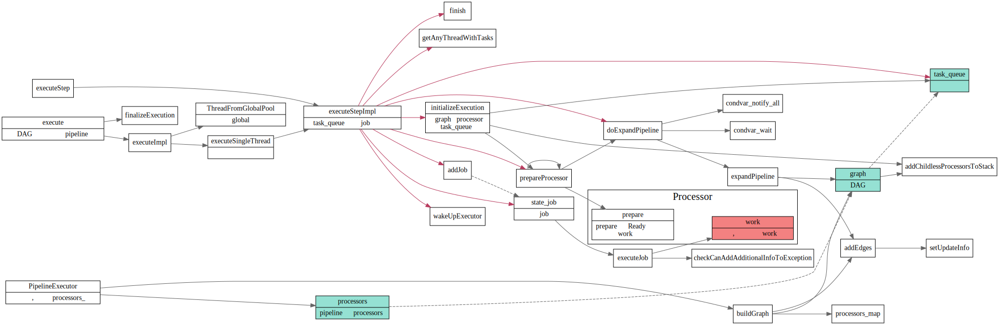
PullingPipelineExecutor
单线程同步执行？
/// Pulling executor for QueryPipeline. Always execute pipeline in single thread.
/// Typical usage is:
///
/// PullingPipelineExecutor executor(query_pipeline);
/// while (executor.pull(chunk))
/// ... process chunk ...
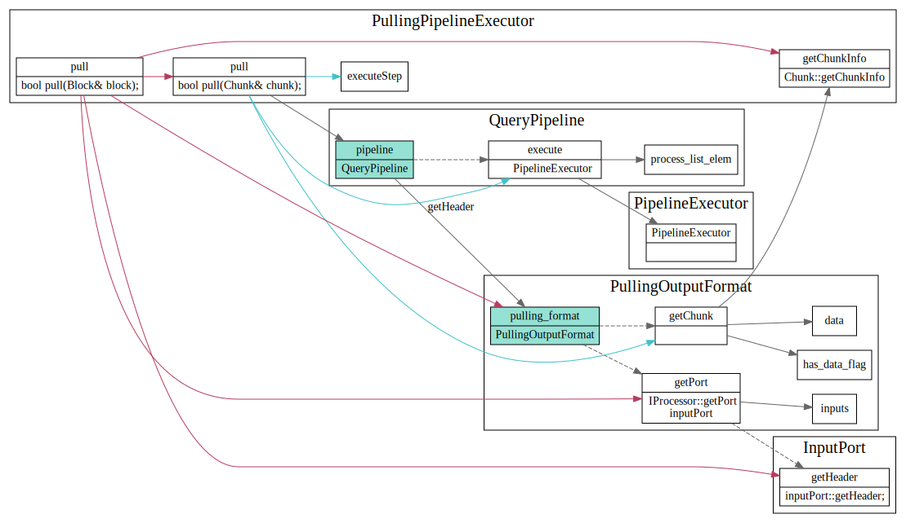
PullingAsyncPipelineExecutor
多线程异步执行
/// Asynchronous pulling executor for QueryPipeline.
/// Always creates extra thread. If query is executed in single thread, use PullingPipelineExecutor.
/// Typical usage is:
///
/// PullingAsyncPipelineExecutor executor(query_pipeline);
/// while (executor.pull(chunk, timeout))
/// ... process chunk ...

IBlockInputStream
PipelineExecutingBlockInputStream
封装了PullingPipelineExecutor和PullingAsyncPipelineExecutor, 实现了IBlockInputStream接口

AsynchronousBlockInputStream
在另外一个线程中执行inner BlockInputStream
/** Executes another BlockInputStream in a separate thread.
* This serves two purposes:
* 1. Allows you to make the different stages of the query execution pipeline work in parallel.
* 2. Allows you not to wait until the data is ready, and periodically check their readiness without blocking.
* This is necessary, for example, so that during the waiting period you can check if a packet
* has come over the network with a request to interrupt the execution of the query.
* It also allows you to execute multiple queries at the same time.
*/
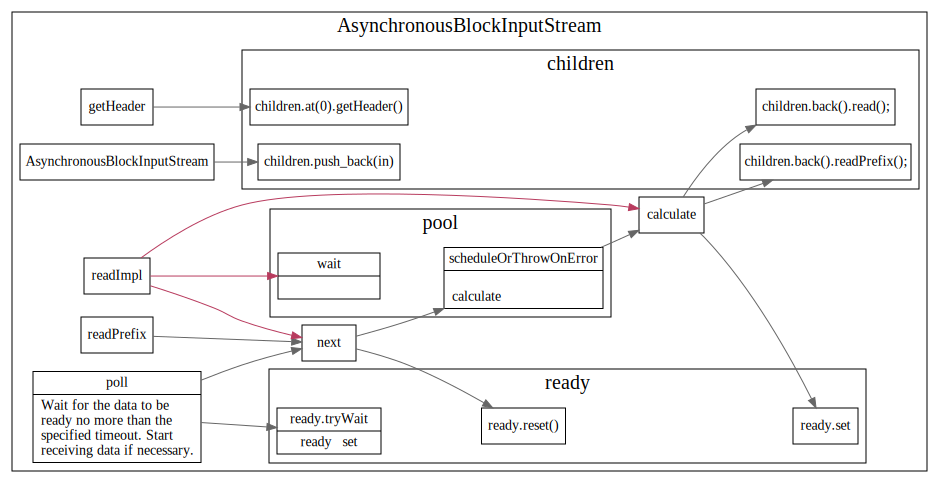
BlockIO
block-io getInputStream，读数据时执行plan

Ref
Block
Block
A Block is a container that represents a subset (chunk) of a table in memory. It is just a set of triples: (IColumn, IDataType, column name). During query execution, data is processed by Blocks. If we have a Block, we have data (in the IColumn object), we have information about its type (in IDataType) that tells us how to deal with that column, and we have the column name. It could be either the original column name from the table or some artificial name assigned for getting temporary results of calculations.
最基本的数据处理单元, 有点类似于Pandas的dataframe, 对应的基本操作有insert/erase
/** Container for set of columns for bunch of rows in memory.
* This is unit of data processing.
* Also contains metadata - data types of columns and their names
* (either original names from a table, or generated names during temporary calculations).
* Allows to insert, remove columns in arbitrary position, to change order of columns.
*/

BlockInfo
/** is_overflows:
* After running GROUP BY ... WITH TOTALS with the max_rows_to_group_by and group_by_overflow_mode = 'any' settings,
* a row is inserted in the separate block with aggregated values that have not passed max_rows_to_group_by.
* If it is such a block, then is_overflows is set to true for it.
*/
/** bucket_num:
* When using the two-level aggregation method, data with different key groups are scattered across different buckets.
* In this case, the bucket number is indicated here. It is used to optimize the merge for distributed aggregation.
* Otherwise -1.
*/
IColumn
Cow: Copy on write shared Ptr
ICoumn存储数据
icolumn和idatatype 比较类似？他们两者分别负责什么功能?

IDataType
数据的序列化和反序列化
BlockIO
Block的输入输出, 主要有BlockInputStream 和 BlockOutputStream, 输入输出的基本单位为Block
getHeader header的作用是啥？表明data的schema吗?

IBlockInputStream
The stream interface for reading data by blocks from the database. Relational operations are supposed to be done also as implementations of this interface. Watches out at how the source of the blocks works. Lets you get information for profiling: rows per second, blocks per second, megabytes per second, etc. Allows you to stop reading data (in nested sources).
IBlockInputStream 主要接口 read, readPrefix, readSuffix
这个地方的limit, quta, 以及info之类的作用是什么?

IBlockInputStream 继承关系
TODO:
- TypePromotion 模板
- Cow 模板
IBlockOutputStream
Interface of stream for writing data (into table, filesystem, network, terminal, etc.)

Godot
godot 学习笔记
node tree
- 在tree中怎么快速定位到某个Node? 并转换为相应类型？
- node之间怎么互相调用？
- scene之间的过渡场景怎么搞？
- 目前有哪些node 各自负责干啥？

Node2D
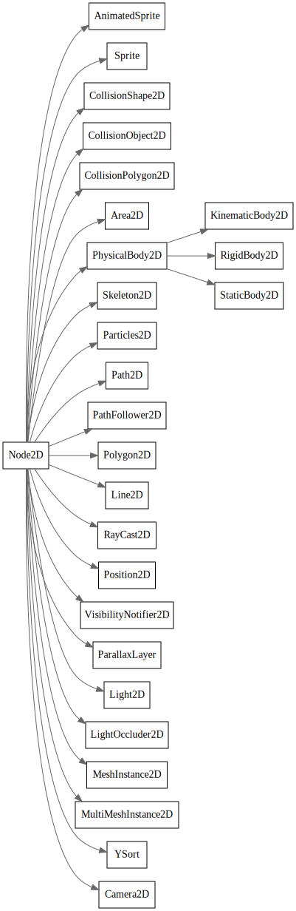
Node 虚函数
Rust中没有虚函数，是咋搞的
public override void _EnterTree()
{
// When the node enters the Scene Tree, it becomes active
// and this function is called. Children nodes have not entered
// the active scene yet. In general, it's better to use _ready()
// for most cases.
base._EnterTree();
}
public override void _Ready()
{
// This function is called after _enter_tree, but it ensures
// that all children nodes have also entered the Scene Tree,
// and became active.
base._Ready();
}
public override void _ExitTree()
{
// When the node exits the Scene Tree, this function is called.
// Children nodes have all exited the Scene Tree at this point
// and all became inactive.
base._ExitTree();
}
public override void _Process(float delta)
{
// This function is called every frame.
base._Process(delta);
}
public override void _PhysicsProcess(float delta)
{
// This is called every physics frame.
base._PhysicsProcess(delta);
}

Instance Scene
先load scene, 然后将scene instance为node，可以放在场景里面
var scene = GD.Load<PackedScene>("res://myscene.tscn"); // Will load when the script is instanced.
//preload
var scene = preload("res://myscene.tscn") # Will load when parsing the script.
//instance
var node = scene.Instance();
AddChild(node);
Signal
可以在editor中connect. 也可以在代码中connect 信号和handler
带参数的Signal
extends Node
signal my_signal(value, other_value)
func _ready():
emit_signal("my_signal", true, 42)
Connect signal
// <source_node>.connect(<signal_name>, <target_node>, <target_function_name>)
extends Node2D
func _ready():
$Timer.connect("timeout", self, "_on_Timer_timeout")
func _on_Timer_timeout():
$Sprite.visible = !$Sprite.visible
Emit signal
定义和发射signal
extends Node2D
signal my_signal
func _ready():
emit_signal("my_signal")
AnimatedSprite
tokio
Executor
Executor中主要有Executor, TypedExecutor, enter, DefaultExecutor, Park
-
Executor,TypedExecutor主要作用是spawn future，转换为相应的任务，然后去执行该任务，不断的poll future,直到future complete. -
DefaultExecutor作用，是将tokio::spawn的future转给当前默认的executor. -
enter用于阻止在当前executor context中，再start一个executor -
park是对线程block/unblock操作的抽象.
原文如下（摘自tokio-executor/src/lib.rs)
-
The [
Executor] trait spawns future object onto an executor. -
The [
TypedExecutor] trait spawns futures of a specific type onto an executor. This is used to be generic over executors that spawn futures that are eitherSendor!Sendor implement executors that apply to specific futures. -
[
enter] marks that the current thread is entering an execution context. This prevents a second executor from accidentally starting from within the context of one that is already running. -
[
DefaultExecutor] spawns tasks onto the default executor for the current context. -
[
Park] abstracts over blocking and unblocking the current thread.
Executor impl
实现Executor接口的主要有current thread，task executor, default executor还有thread pool的executor.

DefaultExecutor
DefaultExecutor 扮演了入口的角色，会将spawn调用转发给thread local storage var的Executor;
current thread
current thread executor 是单线程的executor。task spwan和execute是在同一线程上完成的。
代码中Entered和Borrow的作用是干啥的不太明白，感觉这块代码有点绕.
Entered和Borrow定义如下:
#![allow(unused_variables)] fn main() { /// A `CurrentThread` instance bound to a supplied execution context. pub struct Entered<'a, P: Park> { executor: &'a mut CurrentThread<P>, } }
#![allow(unused_variables)] fn main() { /// This is mostly split out to make the borrow checker happy. struct Borrow<'a, U> { id: u64, scheduler: &'a mut Scheduler<U>, num_futures: &'a atomic::AtomicUsize, } }
thread pool sender
thread pool的sender使用future创建相应的task, 然后调用pool的submit_external提交任务
#![allow(unused_variables)] fn main() { fn spawn( &mut self, future: Pin<Box<dyn Future<Output = ()> + Send>>, ) -> Result<(), SpawnError> { self.prepare_for_spawn()?; // At this point, the pool has accepted the future, so schedule it for // execution. // Create a new task for the future let task = Arc::new(Task::new(future)); // Call `submit_external()` in order to place the task into the global // queue. This way all workers have equal chance of running this task, // which means IO handles will be assigned to reactors more evenly. self.pool.submit_external(task, &self.pool); Ok(()) } }
Executor setup
thread local var EXECUTOR的设置过程
#![allow(unused_variables)] fn main() { thread_local! { /// Thread-local tracking the current executor static EXECUTOR: Cell<State> = Cell::new(State::Empty) } }
在调用tokio::spawn时，会通过DefaultExecutor调用相应的Thread local storage中设置好的Executor
#![allow(unused_variables)] fn main() { //tokio-executor/src/global.rs pub fn spawn<T>(future: T) where T: Future<Output = ()> + Send + 'static, { DefaultExecutor::current().spawn(Box::pin(future)).unwrap() } }
#![allow(unused_variables)] fn main() { //tokio-executor/src/global.rs impl DefaultExecutor { #[inline] fn with_current<F: FnOnce(&mut dyn Executor) -> R, R>(f: F) -> Option<R> { EXECUTOR.with( |current_executor| match current_executor.replace(State::Active) { State::Ready(executor_ptr) => { let executor = unsafe { &mut *executor_ptr }; let result = f(executor); current_executor.set(State::Ready(executor_ptr)); Some(result) } State::Empty | State::Active => None, }, ) } } }
park
park是对当前线程block和unblock操作的抽象, 和std的park/unpark操作来比，在线程被blocked的时候，可以去调用一些定制化的功能。
Park impl

Reactor Park
Reactor 相关数据结构如下,

Par接口的park/unpark操作主要依赖于mio的poll和SetReadness。

Thread pool default park
线程池的default park主要依赖于croess beam的park和unpark

ParkThread
数据结构之间关系

接口调用关系
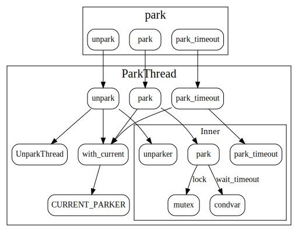
tokio thread pool
schedule
tokio 使用了crossbeam中的Queue, Stealer, Worker等来实现线程池，其中觉得有意思的地方时work stealing策略
每个task被分给worker的过程如下：有个pool.queue作为全局的task队列入口每次spawn task都会将task push到pool.queue中
worker run函数取task的逻辑如下：
- 从自己的worker队列中去取任务.
- 如果自己队列中没任务，则从全局队列中，获取一批任务。
- 如果全局队列中也没任务，则随机的从其他的worker中steal一批任务。
这样做的好处是，降低对全局队列的频繁加锁等操作，而且有steal机制，使得task可以比较均匀的被调度。
task spawn
task 从spawn到最后run的过程：
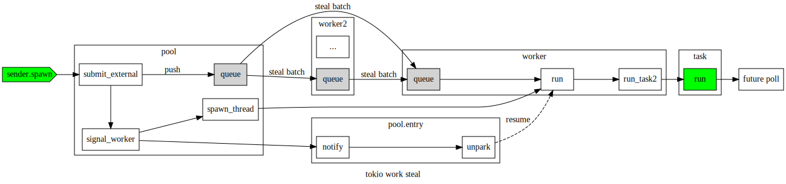
task wake

worker sleep
worker在sleep时候，会把自己push到pool的sleep_stack上, entry中的park/unpark负责线程的sleep和wake.

worker run

tokio driver
Driver 简单来说，就是io event事件触发后，找到相应等待的task, 然后调用预设好的回调函数.
tokio中事件驱动主要靠mio::poll, 在像mio::register中注册一个event时，会带上一个token(token是在tokio中生成的）, driver根据该token建立到SchduleIo的映射，event触发的时候，就会调用schedulIo中预先定义好的方法。
然后事件被触发的时候,mio会把这个token带过来。
task <-> mio event
task和mio event通过token 建立关系，回调函数waker通过过Context包装, 传递给future的poll函数，当future需要等待某个事件时候，就会把事件和context关联起来。然后等事件被触发了，就调用context中预先设置好的waker.

主要数据结构
reactor::inner中的io_dispatch表，用于记录事件token到ScheduleIO的一个映射关系.
#![allow(unused_variables)] fn main() { //reactor.rs pub(super) struct Inner { /// The underlying system event queue. io: mio::Poll, /// ABA guard counter next_aba_guard: AtomicUsize, /// Dispatch slabs for I/O and futures events pub(super) io_dispatch: RwLock<Slab<ScheduledIo>>, /// Used to wake up the reactor from a call to `turn` wakeup: mio::SetReadiness, } }
ScheduledIo, 主要用于指向context
#![allow(unused_variables)] fn main() { pub(super) struct ScheduledIo { aba_guard: usize, pub(super) readiness: AtomicUsize, pub(super) reader: AtomicWaker, pub(super) writer: AtomicWaker, } }
Context 中的waker则定义了如何唤醒task, 对于threadpool 会去调用Task::Schedule方法，而对于current thread, 则会去调用Node.Notify
context 注册过程
首先ctx会在task run时候，被创建，然后传递给future_poll, 经过层层的poll_ready 之类的，注册到Reactor::inner::io_dipatch表中
注册的key会在Reactor::inner::add_source计算出来，然后传递给mio的register函数。
然后mio的poll函数在事件发生时，会将该token带上，在Reactor::dispatch中根据token找到相应的contex waker, 调用对应的wake函数。
thread pool 中 ctx waker的创建
#![allow(unused_variables)] fn main() { //threadpool/task/mod.rs pub(crate) fn run(me: &Arc<Task>, pool: &Arc<Pool>) -> Run { //... let waker = task::waker(Arc::new(Waker { task: me.clone(), pool: pool.clone(), })); let mut cx = Context::from_waker(&waker); //... } }
其中Waker定义如下, event经过dispatch 后, 最终会调用Task::Schedule.
#![allow(unused_variables)] fn main() { // threadpool/waker.rs impl ArcWake for Waker { fn wake_by_ref(me: &Arc<Self>) { Task::schedule(&me.task, &me.pool); } } }
current thread中ctx waker的创建
#![allow(unused_variables)] fn main() { pub fn block_on<F>(&mut self, mut future: F) -> F::Output where F: Future, { // Safety: we shadow the original `future`, so it will never move // again. let mut future = unsafe { Pin::new_unchecked(&mut future) }; let waker = self.executor.scheduler.waker(); let mut cx = Context::from_waker(&waker); // ... other code } }
event, token, scheduleIO
tokio中通过token将event和scheduleIO关联起来
token到ScheduleIO
在reactor::inner::add_source中, 会在io_dispatch表中先创建一个ScheduleIO， key为aba_guard, 使用aba_guard计算出一个token,
最后通过调用mio.register 将token和event关联起来, 这样就建立了ScheduleIO和event之间的关系.
#![allow(unused_variables)] fn main() { // tokio-net/src/driver/reactor.rs pub(super) fn add_source(&self, source: &dyn Evented) -> io::Result<usize> { // Get an ABA guard value let aba_guard = self.next_aba_guard.fetch_add(1 << TOKEN_SHIFT, Relaxed); let key = { // Block to contain the write lock let mut io_dispatch = self.io_dispatch.write(); if io_dispatch.len() == MAX_SOURCES { return Err(io::Error::new( io::ErrorKind::Other, "reactor at max \ registered I/O resources", )); } io_dispatch.insert(ScheduledIo { aba_guard, readiness: AtomicUsize::new(0), reader: AtomicWaker::new(), writer: AtomicWaker::new(), }) }; let token = aba_guard | key; debug!("adding I/O source: {}", token); self.io.register( source, mio::Token(token), mio::Ready::all(), mio::PollOpt::edge(), )?; Ok(key) } }
ScheduledIo 到context,
主要在Registration::inner::register中完成.
#![allow(unused_variables)] fn main() { pub(super) fn register(&self, token: usize, dir: Direction, w: Waker) { debug!("scheduling {:?} for: {}", dir, token); let io_dispatch = self.io_dispatch.read(); let sched = io_dispatch.get(token).unwrap(); let (waker, ready) = match dir { Direction::Read => (&sched.reader, !mio::Ready::writable()), Direction::Write => (&sched.writer, mio::Ready::writable()), }; waker.register(w); if sched.readiness.load(SeqCst) & ready.as_usize() != 0 { waker.wake(); } } }

事件分发：dispatch
reactor::poll调用mio::poll来轮询是否有事件发生，如果有事件发生，则从mio的event中取出token,
然后调动dispatch, 调用相应的wake函数
#![allow(unused_variables)] fn main() { //tokio-net/src/driver/reactor.rs #[cfg_attr(feature = "tracing", tracing::instrument(level = "debug"))] fn poll(&mut self, max_wait: Option<Duration>) -> io::Result<()> { // Block waiting for an event to happen, peeling out how many events // happened. match self.inner.io.poll(&mut self.events, max_wait) { Ok(_) => {} Err(e) => return Err(e), } // Process all the events that came in, dispatching appropriately // event count is only used for tracing instrumentation. #[cfg(feature = "tracing")] let mut events = 0; for event in self.events.iter() { #[cfg(feature = "tracing")] { events += 1; } let token = event.token(); trace!(event.readiness = ?event.readiness(), event.token = ?token); if token == TOKEN_WAKEUP { self.inner .wakeup .set_readiness(mio::Ready::empty()) .unwrap(); } else { self.dispatch(token, event.readiness()); } } trace!(message = "loop process", events); Ok(()) } }
#![allow(unused_variables)] fn main() { fn dispatch(&self, token: mio::Token, ready: mio::Ready) { let aba_guard = token.0 & !MAX_SOURCES; let token = token.0 & MAX_SOURCES; let mut rd = None; let mut wr = None; // Create a scope to ensure that notifying the tasks stays out of the // lock's critical section. { let io_dispatch = self.inner.io_dispatch.read(); let io = match io_dispatch.get(token) { Some(io) => io, None => return, }; if aba_guard != io.aba_guard { return; } io.readiness.fetch_or(ready.as_usize(), Relaxed); if ready.is_writable() || platform::is_hup(ready) { wr = io.writer.take_waker(); } if !(ready & (!mio::Ready::writable())).is_empty() { rd = io.reader.take_waker(); } } if let Some(w) = rd { w.wake(); } if let Some(w) = wr { w.wake(); } } } }
tokio io
Core I/O abstractions for the Tokio stack.
AsyncRead/AsyncWrite use nonblock IO
non-blocking. All non-blocking I/O objects must return an error when bytes are unavailable instead of blocking the current thread.
Would block error to future Not Ready poll
AsyncRead
poll_read: Attempt to read from theAsyncReadintobuf.poll_read_buf: Pull some bytes from this source into the specifiedBufMut, returning how many bytes were read.
AsyncReadExt An extension trait which adds utility methods to AsyncRead types.
This trait inherits from std::io::Read and indicates that an I/O object is non-blocking. All non-blocking I/O objects must return an error when bytes are unavailable instead of blocking the current thread.
AsyncWrite
poll_write: Attempt to write bytes frombufinto the object.poll_write_buf: Write aBufinto this value, returning how many bytes were written.poll_flush: Attempt to flush the object, ensuring that any buffered data reach their destination.poll_shutdown: Initiates or attempts to shut down this writer, returning success when the I/O connection has completely shut down.
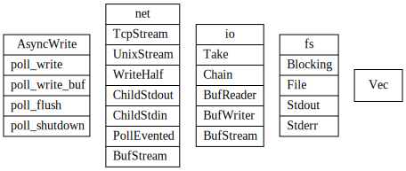
tcp stream
/// An I/O object representing a TCP stream connected to a remote endpoint.

Split
Split a single value implementing AsyncRead + AsyncWrite into separate
AsyncRead and AsyncWrite handles. 还不是太明白这个地方为啥需要lock ?类似与rw lock？
将一个stream分为reader, write部分，解决需要两次mut引用问题（src, dst)

调用poll_read, poll_write都会调用poll_lock, 此处的poll_lock并不会block线程。类似于spin lock。
#![allow(unused_variables)] fn main() { // 类似与Spin Lock. impl<T> Inner<T> { fn poll_lock(&self, cx: &mut Context<'_>) -> Poll<Guard<'_, T>> { if !self.locked.compare_and_swap(false, true, Acquire) { Poll::Ready(Guard { inner: self }) } else { // Spin... but investigate a better strategy ::std::thread::yield_now(); cx.waker().wake_by_ref(); Poll::Pending } } } // 用于Mutex impl<T> Guard<'_, T> { fn stream_pin(&mut self) -> Pin<&mut T> { // safety: the stream is pinned in `Arc` and the `Guard` ensures mutual // exclusion. unsafe { Pin::new_unchecked(&mut *self.inner.stream.get()) } } } }
Copy
future copy实现了从reader异步write到write逻辑
#![allow(unused_variables)] fn main() { impl<R, W> Future for Copy<'_, R, W> where R: AsyncRead + Unpin + ?Sized, W: AsyncWrite + Unpin + ?Sized, { type Output = io::Result<u64>; fn poll(mut self: Pin<&mut Self>, cx: &mut Context<'_>) -> Poll<io::Result<u64>> { loop { // If our buffer is empty, then we need to read some data to // continue. if self.pos == self.cap && !self.read_done { let me = &mut *self; // 从reader中异步读取n个字节 let n = ready!(Pin::new(&mut *me.reader).poll_read(cx, &mut me.buf))?; if n == 0 { self.read_done = true; } else { self.pos = 0; self.cap = n; } } // If our buffer has some data, let's write it out! while self.pos < self.cap { let me = &mut *self; // 异步写n个字节到writer中 let i = ready!(Pin::new(&mut *me.writer).poll_write(cx, &me.buf[me.pos..me.cap]))?; if i == 0 { return Poll::Ready(Err(io::Error::new( io::ErrorKind::WriteZero, "write zero byte into writer", ))); } else { self.pos += i; self.amt += i as u64; } } // If we've written al the data and we've seen EOF, flush out the // data and finish the transfer. // done with the entire transfer. if self.pos == self.cap && self.read_done { let me = &mut *self; // 最后写完了等待flush ready!(Pin::new(&mut *me.writer).poll_flush(cx))?; return Poll::Ready(Ok(self.amt)); } } } } }
buf reader/writer/sream
codec
Transport
Codec
This is often known as “framing”: instead of viewing your connections as consisting of just bytes in/bytes out, you view them as “frames” of application data that are received and sent. A framed stream of bytes is often referred to as a “transport”.
Encode/Decode Trait
有点像序列化和反序列化
Encoder
#![allow(unused_variables)] fn main() { pub trait Encoder { /// The type of items consumed by the `Encoder` type Item; /// The type of encoding errors. /// /// `FramedWrite` requires `Encoder`s errors to implement `From<io::Error>` /// in the interest letting it return `Error`s directly. type Error: From<io::Error>; /// Encodes a frame into the buffer provided. /// /// This method will encode `item` into the byte buffer provided by `dst`. /// The `dst` provided is an internal buffer of the `Framed` instance and /// will be written out when possible. fn encode(&mut self, item: Self::Item, dst: &mut BytesMut) -> Result<(), Self::Error>; } }
Decoder
#![allow(unused_variables)] fn main() { pub trait Decoder { type Item; type Error: From<io::Error>; fn decode(&mut self, src: &mut BytesMut) -> Result<Option<Self::Item>, Self::Error>; fn decode(&mut self, src: &mut BytesMut) -> Result<Option<Self::Item>, Self::Error>; fn framed<T: AsyncRead + AsyncWrite + Sized>(self, io: T) -> Framed<T, Self> } }
framed
frame write
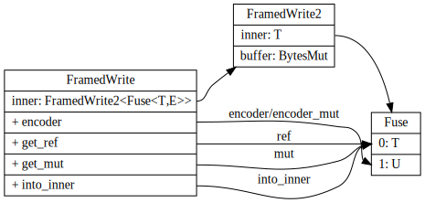
channel
multi producer and single consumer for sendin values between tasks;
data struct
function call
函数调用

task waker
atomic waker
AtomicWaker is a multi-consumer, single-producer transfer cell. The cell
stores a Waker value produced by calls to register and many threads can
race to take the waker by calling wake.
Because of this, the task will do one of two things.
-
Observe the application state change that Thread B is waking on. In this case, it is OK for Thread B's wake to be lost.
-
Call register before attempting to observe the application state. Since Thread A still holds the
wakelock, the call toregisterwill result in the task waking itself and get scheduled again.

python
records
[github records]https://github.com/kennethreitz-archive/records
import records
db = records.Database('postgres://...')
rows = db.query('select * from active_users') # or db.query_file('sqls/active-users.sql')